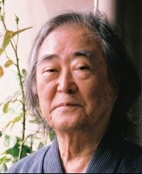

| シナリオ創作演習１２講 | |
| 川邊 一外 | |
| (2014) | |
はじめに
シナリオを書くことは、実践です。
いかに「理論」を知識として覚え込んでも、いかに人の作品を沢山読んでも、実際に自分で手を下して書き、微妙な、口に表せない感覚、コツを会得し、体感し、その無言の蓄積を増やさなければ、シナリオを書く腕は上達しません。
その辺はスポーツその他の芸事とまったく同じで、東京ドームの観客席に百万遍通い詰めても、野球は上手にはならないのです。
実際の練習量こそ決め手――となると、その練習システムこそ問題でしょう。
どのような考え方を持ち、どのようなやり方で、練習量を増やして行くのか？
スポーツや芸事の多くについては、これはある程度出来上がっています。
教程や教則本などもそろい、流派による方法の違いさえある。
ひとり、シナリオについてだけ、これが殆どないのです。
練習生は、ただ、「書けばよいのだ」「書きなさい」と言われて、一人で放り出される。
しかし、字が書けるからものが書けるとは限らない。
劇場や、テレビで観た作品をたよりに、見様見真似で始めるわけですが、原稿用紙の書き方や、専門用語を教わったからと云って、それですぐ書けると云うものではない。
そもそも何を、何から書き始めていいか分からない。
書き始めたとしても、すぐにつっかかってしまう。
書いても書いても面白くなく、次の話をどうしようか、途方に暮れてしまう。
情報化時代の昨今では、なまじっかいろいろな傑作に触れ、評論家の謳い文句などを聞きかじっているだけに、却って始末が悪い。
自縄自縛、書きたい気持は身体一杯にあるのにまるで書けなくなってしまう。
無理に止められたモーターよろしく、電線が焼け、煙でも上げかねない。
仮に、最後まで書き上げたとしても、自分では惚れ惚れするような傑作と思うのに、誰も本気では褒めてくれない。
どこのコンクールに出しても、ナシのつぶて。
何故だ、何故なんだ――？
こうした短絡的な状況を解きほぐし、あわてずに、順次に書き続け、着々と練習量を増やすよう導いて行くのが、正しい「理論」と云うものであり、それに基づいた練習教程と云うものでしょう。
私は、これから、「シナリオ創作演習12講」と銘打って、その教程の試案を提出してみたいと考えます。
例えば、この12講のステップを毎月確実にこなして行けば、少なくとも12ヶ月後には一本のシナリオが出来上がっているでしょう。
もとより、時間と好奇心のあり余る読者は、12ヵ月を待つ必要はない、12週間、12日、あるいは12時間で読了されても結構です。
しかし、読者のシナリオ創作の長い春秋は、それから始まるでしょう。
そのために、この12教程のテクニックが、何らかの役割を果たしてくれれば、とても嬉しいと思います。
シナリオは、人間の知性と情念が、愛と欲望が、明晰と混沌が、火花を散らす場所です。その修練のカギは、あくまで理論と実践の統一にあるでしょう。
合理的で無理のない、演習システムが必要なのです。
平成２６年９月1６日
川邊 一外
第一講 連想トレーニング ──まずは頭脳の柔軟体操
第一講は、シナリオを書くための準備運動とも云えるもので、これを「連想トレーニング」と呼びます。
まず、ペラ（２００字詰原稿用紙）10枚ほどを用意して下さい。
落ち着いて机の前に座り、次に掲げる６個の刺激語のそれぞれについて、自由な連想によって思い浮かべた単語を、どんどんと書いて下さい。
① 洞穴
② 塔
③ 鏡
④ 37才の男
⑤ 丼
⑥ 21才の女
一つの刺激語についての制限時間は５分、一つが終ったら又次の語に移って５分です。
次の刺激語はかくして置いて、順次に見て行くのがよいでしょう。
連想した単語は、下に「。」を打ち、間をあけず、すぐ次の単語を書いて下さい。
原稿用紙の上下にコマをあけたりする必用はありません。
連想は、余り理屈で考えず、感情的・感覚的に行うこと。理由もなく脈絡もなく、只心の中の自然な流れに従うのです。垂直思考ではなく、水平思考です。
大切なのは、いわば頭の中のタガを外して、リラックスする感じ、頭脳を自由にのびのびと解放し、頭脳自身の動きに任せる、と云う感じです。
６語について全部終ったら、各語についての行数を数えて下さい。この場合、０・１までの単位で出します。１行は20コマですから、０・１は２コマになります。１コマの端数は切上げます。
得られた数値を、刺激語別に記し、総計と、一語当たりの平均値を出して下さい。
この演習の狙いは、意識の上部、知性的な部分、いわば前頭葉の抑制を緩め、意識の下部、情念的な部分、いわば脳幹部の側にかくされている情報を引き出すことにあります。
ここで大切なのは、引き出された情報そのものではなく（それは精神分析風のデータにはなるかも知れませんが、ここでは特に問題にしません）奥深く、暗く、見えない情念の側から情報を引き出してくるメカニズムであり、そのやり方に慣れることなのです。
人間には、大きく分けて、「抑圧型」と「発散型」の２つのタイプがあります。
「抑圧型」は、頭の中に浮かんで来るアイディアを、いちいち理屈をつけて、自分から抑圧してしまうタイプです。そんな考えはトッピ過ぎる、恥ずかしい、笑われるんじゃないか、やっぱり面白くない、もっといい考えがあるはずだ......などなどです。
「発散型」は、頭の中に生まれて来る考えを、どんどんと外側に発散してしまう、いわばお喋りタイプの人間です。自分が面白いと思ったら、それを疑うこともなく、遠慮なしに口にします。もともと抑制力が少ないので、他人がうんざりしたり、嘲笑したり、眉をひそめたりするのには、余り気がつきません。
作家を志すほどの人には、どちらかと云えば抑圧型が多いのですが、発散型も決して少くはありません。
どちらのタイプが作家に向いているかは、一概に云うことは出来ないでしょう。
自分の中の創作の芽を、いちいち自分から摘んでしまい、「歌わざる詩人」になってしまうのも困ります。と云って、自分だけが嬉しがり面白がっている、のべつに冗漫な作品を読まされるのは、いささかハタ迷惑と云うものです。
やはり、「抑圧」の知性と、「発散」のエネルギーが、程よくバランスがとれているのが良い、と申し上げる他はありません。
この演習は、抑圧型の人には、頭脳の中の抑圧の枠をゆるめ、自由で奔放な発想を得ることを狙いとします。
逆に、発散型の人には、書くと云う行為によって、発散のエネルギーに抵抗を与え、自分のありのままの顔を見つめる機会を与えるでしょう。
これは、創作と云う、頭脳の中の筋肉労働を始めるに当って、その筋肉をときほぐし、ウオーミングアップする、「柔軟体操」だと思って下さい。
頭の中の抑止力をリラックスし、奔放で自在な情念の動きに身を任せて見る。
ブレーンストーミング------頭の中に嵐を起こす。
そんな感じで、試みて頂くのがよいと思います。
松竹シナリオ研究所（現在は廃止）で、この演習を試みた結果、前記の二つのタイプは、非常に顕著な開きを示しました。
「抑圧型」では、５分の間、苦吟、呻吟、ようやく１、２行と云う人もいます。
一方「発散型」では、俗語、卑語、猥語を乱発し、まるでヘドのように書き流して、らくらくぺラ２枚に及ぶと云う人もいます。
その１０６人についてのトレーニング結果の平均値表をお見せしましょう。（次頁図）
刺激語一つについての総平均行数は７・４行ですが、これが男女別になると、男性６・８行、女性７・９行で、女性が１行以上も多くなります。
女性の方がよりお喋りと云うことで、一寸ナットクと云う感じもあります。
男女とも、①から⑥に向って、平均行数が次第に高くなっているのは、このトレーニングに対する慣れを示しているのでしょうか？
とすれば、練習効果が認められることになりますが、あるいは「洞穴」「塔」などの性的な象徴語に対する抑圧を表しているのかも知れません。
総行数で最も長く書いた人は、１６８・２行、つまり17枚弱ですが、最も短い人は、１２・１行、つまり１枚と一寸と云ったところです。
但し、総行数の「最大」も「最小」も男性が占め、振幅の大きさを示しています。
では、「自分」とある欄に、御自分の数値を入れてみて下さい。
これによって、自分がどちらの側に振れているか------つまり、「抑圧型」か「発散型」か、ある程度客観的に判断する目安となるでしょう。
極度に「抑圧型」の方は、意識して抑圧を除き、やや無責任にリラックスすることを考えて下さい。
あまり「発散型」過ぎると考える方は、やや自己抑制を考えてみることです。
ここに挙げた刺激語は、別にこれに限ったことではなく、単なる一例に過ぎません。
さらに御自分で考え、あるいは数や時間を増やして練習してみるのもよいと思います。
自分で時間を計るのは面倒なものですから、お家の人やお友達に手伝ってもらい、あるいは一緒にやるのもよいでしょう。
いずれにせよ、シナリオを書く（創作する）と云う作業は、どこまでも発散し、外側に向かおうとする、いわば「演戯的」なエネルギーと、一方、これを抑え、知的な操作を加えて、社会に通用するものにしようとする、いわば「抑制的」な力と、この全く相矛盾する２つの要因が、せめぎ合い、相剋し、激突し合うところから生まれるのです。
ドラマを書くことは、それ自体、大変ドラマチックな作業なのです。
この「連想トレーニング」は、抑圧と発散、緊張と弛緩、知性と情念------この二筋の縄をなう、その準備となる「柔軟体操」なのです。
第２講 十本企画 ──いったい自分は何が書きたいのか？
この講は、シナリオの基本となるアイディア------「企画」の発想についての演習です。
どんなシナリオでも、ただ漫然とあてもなく書き始めるわけには行きません。
その作品の基本的な構想------制作のねらい、セールスポイント、主題、全体のスタイル------要するに「何を書きたいのか」を、あらかじめしっかりと打ち立て、イメージして置く必要があります。
ところが、実際に自分が何を書きたいのか、よく分からない場合も多い。
書く意欲は満身に溢れながら、現実には、何から始めていいのか五里霧中。
個人が思い立って書く場合はもとよりですが、製作会社やプロダクションの依頼を受けて執筆すると云う場合、これでは困る。
目的や意図に理解と合意がなければ、協同作業は成り立たないからです。
この演習は、全く白紙の状態から、オリジナルのシナリオ10本のアイディアを得ようと云うものです。制限時間は２時間。
え？ ２時間で、10本も！
別に、びっくりすることはありません。
前の講の、頭脳の柔軟体操を思い出して下さい。
肩の力を抜き、リラックスして、頭の中のタガを外し、自由に心の動くままに任せる。
自分が、何かを考えようとするのではなく、いったい自分は何を考えているのだろうと自分の心の動きを、じっくりと見つめるようなつもりです。
間違っても、さあ何か考えなけりゃなどとムキにならないこと。
「思いつき」を抑制せず、そのまま書くのです。
アイディアを得ようとする時、「無責任」は必要条件の一つなのです。
さあ始めましょう。
ペラ（２００字詰原稿用紙）10枚を用意して下さい。
ペラ１枚について、１つの企画を書きます。
ペラの各行のトップに数字を入れて下さい。
各数字の下に、自分のアイディアを、簡潔に書き入れます。
各行の意味は、括弧内に示す通りです。（括弧内の字を書く必要はありません）
１の行には、その話が何時の話か、例えば、紀元前何世紀か、昭和何年か、西暦二千何年かなど、そのドラマの行われる主な時代を書きます。
ＳＦやクロニクルもので、色々な時代にわたる場合は、その通りに書きます。
２の行には、それが何処で行われる話か、例えば、日本か外国か、日本のどの地方か、宇宙空間か、ミクロの世界かなど、そのドラマの行われる主な場所を書きます。
いろいろな場所にまたがる場合もあるかも知れません。
３の行には、その話の中心になって活躍するのは誰か？
つまり主人公の役柄と名前を書きます。モンタギュー家の息子ロミオ、甲斐の領主武田信玄と云った具合です。
シナリオは主人公の行動が中心になって展開しますので、この原点をしっかりと押さえて置くことが大切です。
４の行は、その主人公が結局は何をするのかを書きます。
刑事ものなら犯人を探す、恋愛ものなら恋人と結婚する、母子ものなら母親に巡り合うなど、主人公の究極の目的を書くのです。
これは「○○をどうする」と云うように、目的語と動詞で書いて下さい。
５の行は、主人公が４の行の行動を開始する原因を書きます。この場合、必ず、主人公の内側の原因ではなく、外側の環境の中にある根本原因に焦点を合わせて下さい。
刑事ものの場合、殺人事件が起こる、恋愛ものの場合、２人の家同士が仲が悪い、母子ものなら、家の事情で母が何処かに行ってしまった、などなどです。
６〜８行は、大まかな構成です。
６の行には、まず発端にどんなことが起こるかを書いて下さい。例えば、刑事ものなら殺人場面、恋愛ものなら両家の争い、母子ものなら母の失踪、などとなるでしょう。
７の行では、大体真ん中あたりはどう展開するかを書きます。
前の例で云えば、犯人の目星がつかず苦闘する、家の壁に阻まれて苦悩する、尋ねる先に母がいないので絶望する、などでしょう。
８の行では、すべての結末がどうなるか、いわゆる「クライマックス」を書きます。
犯人逮捕の大アクション場面、恋人たちの非業の死、母と子がヒシと抱き合う涙の場面など、ここは、全編の目玉であり、売りものの部分とも云えるでしょう。
９はテーマです。
この話の中で最も言いたいことは何か？ あまり固くならずに書いて下さい。
最後の10行目に、思いついた題名を書きます。無題や未定はいけません。
さて、以上のようにして、10枚のペラを埋め、10本の企画を得ます。
各ページには、順序に頁番号を打って下さい。
取り敢えず書いて、読み直し、また修正します。
企画は、ペラ一枚の中では、一応一貫し、まとまっていることが必用ですが、ペラ相互の間での関連は全く不要です。
繰り返しますが、ここでは10枚のペラを２時間で書くため、余り「考えて」いるヒマはありません。
決して「頭のてっぺん」の理屈でこねまわさず、あくまで気持をラクにして、感覚的に、情念的に、即興的に書くのです。
アメリカのＡ・Ｆ・オズボーンが提唱した「ブレーン・ストーミング法」は、創造的なアイディアを得る方法として、よく知られています。
これは元来、広告会社などの会議で、広告の新しい切り口を求める方法として考え出されたもので、会議の参加者全員が、上下の権威的な関係ではなく、平等な対等な立場で、自由に無秩序に、思いついたこと、連想したことを喋り合う、いわば「無礼講」討議法で、次のようなルールがあります。
① 発言の内容は、質より量、多ければ多いほどよい。
② 他人の発言を、嘲笑したり、批判したり、抑制したりしない。
③ 発言は無秩序で興味本位、奇抜で面白いものほどよい。
④ 突飛な連想、大胆な飛躍歓迎、他人の尻馬に乗った発言おおいに可。
ブレーン・ストーミング（brain-storming）は、つまり「頭の中に嵐を起こす」と云うことで、一般の常識や生活秩序のルールでがんじがらめになっている表面の意識を、思い切って突き崩し、心の奥深くに潜んでいる意外な情報を引出して、フレッシュな新しい秩序を導こうとするもので、インスピレーションを意識的に求める術とも云えるでしょう。
これはもともと、複数の人間による集団討議法ですが、これをそのまま個人の頭脳の中で行なうことも出来るでしょう。
それが「連想トレーニング」であり、この「十本企画」だとも云えます。
創造工学者の中山正和氏は、私たちの意識の表面に浮かんで、現実の秩序や論理で支配されている情報を、第二次信号系の記憶と呼び、私たちの意識の奥深くに沈んで、論理や秩序の呼び掛けでは容易に現れて来ない情報を、第一次信号系の記憶と呼んでいます。
この第一次記憶は、私たちが生まれて以来、意識するとしないに関わらず、私たちの五官から経験として吸収されたあらゆる情報を含み、秩序もなく脈絡もないバラバラの単位記憶が集積したものです。
それは、整理された知的記憶と云うよりは、情念的、感覚的なもので、例えば何時見たかも分からない赤ん坊の笑顔、何時覚えたかも分からない童唄の断片、ふとした時の恋人の表情、と云った具合のもので、バラバラになって無意識の底に沈んだ第二次記憶をも含みますから、その量はほとんど天文学的に膨大なものです。
これらの情報は、一応意識の表面からは消え、一見「忘れられた」ように見えますが、実は決して消え去ったわけではなく、切り離され、無秩序であるために、ただ意識のインデックス（索引）によって呼び出すことが出来ないと云うだけのことなのです。
創作に携わる私たちが、この莫大な情熱の宝庫を利用しないテはないでしょう。
第二次信号系の厳しい抑制のタガを外し、第一次信号系の深く沈んだ記憶を、可能な限り活発に、引きずり出し、活用することが、どうしても必要なのです。
「十本企画」によって、こうして十本のアイディアを得た時、一本一本を独立した作品として見ることはもとよりですが、それらを全体として眺めてみると、さらに大きな一本または数本の作品を暗示していることがあります。
「へえー、自分はこんなものを書きたがっていたのか？」
いわば、自分で自分が見えて来る。
今まで無意識の奥に隠されていた欲望が、意識の表面に浮かび上がって来るのです。
これは「即興」と「無責任」の大きな効果と云ってよい。
そうしたら、十枚のペラを、一本または数本の企画にまとめてみましょう。
そこには、如何にも自分の気持にぴったりした、新しい作品のイメージが浮かび上がっている筈です。
「いったい自分は何が書きたいのか？」
そんなことを、いくら言葉で自問してみても、答えは返って来ません。
そうではない。
あらゆる手段を尽して、自分を無意識の流れに委ね、書くと云う行為を行うことです。
そのことによって、今まで自分でも気がつかなかった、欲望や夢が見えて来る。
それこそが、私たちが本当に狙っていた「企画」なのです。
アメリカのギャルウエイとクリーゲルと云う人の共著で「インナー・スキーイング（内側からのスキー術）」という本があります。
要するにスキー術の教科書なのですが、一寸風変わりなのは、ボーゲンがどうの、クリスチャニアがどうの、体重の移動がどうのと云った普通の教程は全くなく、つまりはスキーをする時には、心のどの部分を使えば最も上達が早いかと云うことを、いろいろな例証を挙げて述べているのです。
著者によれば、運動している時、私たちの中には常に二人の人間が対話していると云います。一人は黙って運動を実行している人間、そしてもう一人は、その運動を指導し、批評し、警告し、時には罵倒する人間です。
連続して回転を続けているスキーヤーを考えてみましょう。
彼の頭の中には、常に次の運動への指示が、テープレコーダーのように流れています。
「ほら次は左だ、左足を抜重して右板に乗る、焦らず落ち着いて回り込め......よし、まあまあだ......ほらコブだぞ注意しろ、跳ねられないように腰を落とせ......ブレーキをもう少し......右足の引きつけが遅い......何だ下手くそ、もっときれいに足を揃えられないのか......」と云った具合です。
著者は、頭の中でうるさく話しかけるこの言語的人間を「Self1」と呼び、一方黙々として運動を実行する側を、「Self2」と呼んでいます。
著者によれば、運動が最もうまく行われるのは、頭の中にSelf1の声が聞こえなくなった時、つまり私たちがSelf2と無条件に一致し、「無心」の境に達した時と云います。
逆に、スキーに上達し無理なく快適に滑るためには、滑走中、Self1の介入を出来るだけ抑え、その「知的」なお喋りに一切耳を貸さず、ただSelf2の沈黙の本能を信頼して、その内的な運動感覚のみに注意を集めて練習を重ねることだと云います。
これは、私たちのシナリオ術にも、大きな示唆を含んでいます。
シナリオは元来、言語的なもので、所謂Self1の側の作業と思われがちです。
しかし、ここに大きな落とし穴があります。
創作も、スポーツと同じように本能的で情動的なSelf2が主体にならなければ、全く仕事にならないのです。少なくとも、その暗く深い淵から新しい情報を汲み上げて来ない限り、「創造」などは思いもよらないでしょう。
近来、教育の現場に噴出するいろいろな矛盾から、従来の教育制度の欠陥を指摘する声が上っています。
明治以来の日本の教育が、Self1の側の、既製知識の詰め込みに偏し、Self2を含めた全人間的な錬磨を怠って来たことは事実でしょう。
博覧強記、学校で教師から教わったことをそのまま答案用紙に移すことが上手なもののみが「模範生」とされ、いい学校に入り、いい企業に入ることが出来る。
ここに歪みがあります。相次ぐ暴力やいじめなどの事件は、教育制度の中で長く抑圧されて来たSelf2の復讐と云えなくもない。
私たちもまた、そのような教育制度の中で育ち、そのように条件反射づけられています。
しかし、創作と云う作業に関する限り、私たちは、ここに、意識と方法のコペルニクス的転回を図る必要があります。
私たちは、Self2を基盤とする、自己の全人格を投入しない限り、本当の作品をつくることは出来ないでしょう。
「連想トレーニング」にせよ「十本企画」にせよ、このSelf2を十全に働かそうとするところに成り立ちます。
「Self1」の先走った饒舌を止めさせ、「Self2」が自らどのように動いていくのか、Self1の側からじっと見つめる------そんな心の姿勢が必要なのです。
第３講 十枚プロット作成 ──「行動」を主軸にすえる
この講では、先月の「十本企画」の中から、自分の本当に気に入った企画一本に絞り、その基本となるストーリー------「プロット」を作ってみることにしましょう。
ペラ十枚を基準として書くために、「十枚プロット」と呼びます。
さて、ブレーン・ストーミングの方法を使って、ペラ十枚に書いた十本の企画を、もう一度ゆっくりと読み直してみましょう。
多分、十本のすべてを気に入っていると云う人は少ないはずです。枚数を埋めるためにかなり無理して書いたもの、「お義理」で書いたものなどもあるでしょう。
しかし、やはりこれは書いてみたい、これはいいのではないかと思われる「核」をもつものも二、三本はあるのではないでしょうか？
十本の中にもおのずと優先順位はあるもので、その上位のものにゆっくりと焦点を絞ってみましょう。
と云って、その中のどれか一本を「選び出す」という感じではなく、それらを並べて、ゆったりと眺め、その中から一人の人物、一つの状況が自然に現れて来るのを待つ------そんな感じです。
自分が余り気に入っていないと考えるものの中にも、使えるヒントは隠されています。
その意味では、十本の企画全体を一つの作品と考え、細部にこだわらず、素材をややルーズに自分の中に「泳がせて」みると云う感覚が大切です。
こうして、余り理屈をつけず、自分の心の奥深くの（前講の例で云えばSelf2の）興味の赴くままに、じっくりと的を絞って行くと、あなたの心の中には次第に、或る一人の主人公が姿を現して来るのではないでしょうか？
それとどちらが先とも言えず、その主人公が動き回る或る環境（社会枠）のイメージも浮かび上って来る筈です。
ペラを十枚ほど用意して下さい。
さあ、始めましょう。
まず、題名を決めます。
この場合、勝手なものをつけるのではなく、目的語と動詞でつくります。
あなたの心の中に焦点を結んで来た主人公が、その作品の中で、結局は何をするのかをよく考え、それを目的語と動詞で表わすのです。
例えば、「殺人犯人を捕まえる」「天下をとる」「恋人と結婚する」などです。
一本の作品のバックボーンとなるのは、主人公の首尾一貫した行動です。
船を造るのにたとえれば、これは、まず船首から船尾までを貫く龍骨（キール）を据える作業に当るでしょう。
主人公は、一つの作品の中でいろいろな目的を持ち、さまざまな行動をとりますが、結局変わることなく追求している最後の目的は一つです。
これを「超目標」と呼び、その一貫した行動のことを「貫通行動」と名付けます。
主人公の「超目標」と「貫通行動」をまず題名に凝縮し、しっかりと意識するのです。
この場合、主語は、主人公の名前になるわけですが、題名の上では省略します。
主人公の名前を考えることは大切です。
何時までも名前をつけないでストーリーを考える人がいますが、これではなかなか主人公の「顔」が見えて来ません。
赤ん坊が生まれた時と同じように、名前をつけるのには随分迷うものです。
友達の名前を借りたり、雑誌や電話帳をひっくり返したり、苦心している人がいますが、私はやはり、主人公のイメージに焦点を絞る中から、別に理由もなく理屈もなく、自然に浮かび上って来た名前がいいと思います。
余り「頭で」考えず、「感情的」に考えるのがいいのです。
次に、主人公の活躍する環境（社会枠）を、じっくりと想像してみましょう。
それは何時の時代の話でしょうか？ 過去か？ 現在か？ 未来か？
仮に、日本の戦国時代だとしたら、そのどこからどこまでの時間でしょうか？
もし、主人公が武将なら、彼を取り巻くどのような武将たちがいたのでしょうか？
その当時の生活ぶりは？ 親子関係は？ 夫婦関係は？ 主従関係は？
こうした想像を進める中から、彼の周囲の人間たち------敵役、脇役などの人間像が浮かび上って来ます。
無論、調査や考証も必要です。
もともと自分の企画ですから、その時代について或る程度の知識はあります。
まず、自分の中で、その時代にあってどのようなことがやりたいのか、どの程度のことが出来るのか、よく考え、洗い出してみましょう。
これを「内部探検」と呼んでいます。
勿論、知識が不十分で、不正確なことは多く、新しく調べることも必要です。
その時代についての本を読み、時代考証し、必要ならば現地に調査に行きます。
これを「外部探検」と呼んでいます。
と云っても、「外部探検」は、あまり先回りして、早期に行うのは考えものです。
得てして材料に引きずられ、自分のストーリーを見失ってしまうからです。
少なくとも、まず最初の「十枚プロット」を書き、作品の背骨がしっかりと据わるまでは、「内部探検」だけに止めておいた方がよいでしょう。
調査や考証は、何も時代劇に限るわけではありません。
現代劇でも、日常と別の世界については、調査や取材が必要です。
よく知っている筈の日常生活についても、意外に分かっていないことが多いものです。
例えば、刑事ものを書く時には、事件発生に対する警察の対応の仕方や捜査の方法をよく知っている必用があります。
現実の規則やルールに縛られ過ぎて、無味乾燥なストーリーになってしまうのも困りますが、逆に余りにも現実を無視して、荒唐無稽に書き流すのも賛成出来ません。
「環境」の想像が或る程度進んだところで、今度は各人物の「履歴」を考えます。
まず、主人公が、そのドラマの始まる以前、どのようにして生まれ、どのようにして育ち、どのようなことをやって来たのか、充分に想像し、設定します。
敵役や脇役についても、同じように考えます。
「履歴」の想像は、「環境」に時間的な奥行きを与えるものとも云えるでしょう。
「履歴」を克明に作ったからと云って、何もそれを全部説明したり、喋らせたりする必要はありません。それらは作者の頭の中にしまいこんで置いて、人物を行動させる時に、随時活用すればよいのです。
人間の行動傾向や特徴が、過去の生活経験に根差していることは今更云うまでもないでしょう。小さな何でもないシーンに、いかにもその人物らしい過去がチラリとのぞいたりするのも、作品に深みを添えるでしょう。
「考えたことを何もかも書いてしまってはいけない。創作の仕事は、タイの目の下の肉だけでカマボコをつくること」と云った人がいます。
充分に準備をし、実際に使うのはそのごく一部であってよいのです。
主人公の「貫通行動」によって題名をつけ、「環境」と「履歴」を想像したら、いよいよ「書く」段階に入ります。
ストーリーを書くと云うことは、何もそう難しいことではなく、特殊な神秘的な能力が要るわけでもありません。
只、あなたが主人公になって、予め想像してつくり上げた「環境」を、現実と同じものと信じ、現実と同じように「行動」するだけなのです。
私たちは、現実生活の中で、いろいろな問題に遭遇し、否応なく「行動」しています。
それと同じことを、「想像した」生活環境の中で行うのです。
現実の生活環境は、私たち個々の意識を超えた、いわば「神」がつくったものです。
しかし、想像した環境は、その現実生活から素材を得て、あなたがつくったものです。
そこでは、あなた------作者が神なのです。
「ストーリー」は、その想像の「環境」と主人公の「超目標」との間の葛藤によって生まれ、展開して行くのです。
さて、何から書き始めるべきでしょうか？
主人公の「超目標」と「貫通行動」が、どのようにしてスタートしたのかを描くのが、「書き出し」の定石と云うものでしょう。
「超目標」や「貫通行動」は、何故、何によって生まれるのでしょうか？
主人公と環境との間の、矛盾、葛藤によってです。
つまり、主人公の外側の環境に、主人公の意志に真向から反対する事態が起こり、主人公はその抑圧をはねのけるために行動を開始するのです。その最終的な目的が「超目標」であり、矛盾の解決まで一貫して行われるのが「貫通行動」と云うわけです。
例えば、ギリシャ悲劇「オイディプス王」では、民衆に疫病が流行し、オイディプス王は、その疫病の原因とされる前王の殺害者を、追及するために行動を開始します。
シェイクスピアの「ロミオとジュリエット」では、キャピュレット家の娘ジュリエットを愛したモンタギュー家の息子ロミオが、両家の激しい抗争という環境の中で、ジュリエットへの愛を完遂するため孤独な戦いを開始します。
多くの「刑事もの」では、まず冒頭に殺人事件が起きます。それをどうしても許せないと考える刑事たちが、犯人の逮捕を超目標に、ねばり強い捜査を開始します。
さあ、あなたは題名をすでに決めています。
それは、主人公の貫通行動をあらわしている筈です。
その行動は、何によって起こったのでしょうか。
その原因となる事件、あるいは環境の抑圧からスタートすればよいのです。
それが主人公を揺り動かし、主人公は否応なく「行動」に駆り立てられるのです。
「超目標」を抱いた主人公は、まず手近なところに小目標を立て、行動を開始します。
これを「第一着手の行動」と呼んでいます。
「オイディプス王」の場合ですと、賢者テイレシアスを招いて殺害者のことを訊ねる、「ロミオとジュリエット」の場合ですと、ジュリエットの庭先に忍んでその心をたしかめる、と云うことになりましょうか。
「第一着手の行動」によって、例えば殺害者の正体が素直に明らかになり、あるいは、二人の恋が周囲から祝福されてしまえば、めでたしめでたし、お話はそれで終りです。
しかし、ドラマの場合、それは決してそう素直には行きません。
第一着手の行動は、必ず、環境からの反対の力（アンチテーゼ）によって厳しく妨げられ、それによって主人公は、「第二着手の行動」をとらざるを得なくなります。
「オイディプス王」では、はかばかしく答えないテイレシアスに激怒したオイディプスが、ついに摂政クレオンを追放処分にしてしまいます。
「ロミオとジュリエット」では、二人は内密に結婚するものの、ロミオがジュリエットの従兄ティボルトを殺すと云う事件が起こり、話は意外な方向に急転回して行きます。
ここで大切なことは、超目標に従って主人公が企てる一々の行動が、環境の反対の力によって、決してうまく行かなくなると云うことです。
その結果、主人公は事態を打開する新しい行動を発起せざるを得なくなります。
ここに、作者の腕と才能の見せどころがあります。
環境の抑圧力と主人公の行動意志とが、真向から激突して火花を散らす、その間から主人公が、いままでとは全く違った次の行動を発出させる------。
これが、ドラマの「発展」、ストーリーの「展開」と云われるものですが、ここに、ドラマやストーリーの「面白さ」の根源があることは間違いがありません。
あなたは、作者として、主人公になり、主人公が耐えている矛盾をあなた自身も耐え、実感し、そして、次の新しい行為を「創造」するのです。
ここには、教科書風の一般的な答えはどこにもありません。
誰かの作ったありきたりの解決を持って来ても、全く無意味です。
作者が、自身の個性と情念と思想を賭けて「独創」するのです。
「ホトトギスが鳴かない」時、これを「殺す」か「鳴かしてみせる」か「待つ」か、あるいはその他の処置をとるか、そこには、主人公と作者の性格が如実に現れるのです。
「第一着手の行動」に始まり、環境の側からの障害に直面するたびに、主人公は第二、第三の新しい次元の行動を発起させ、こうしてストーリーは「転がって」行きます。
それは「環境」と「主人公」との対話、あるいはピストン運動に似ています。
環境が抑圧すると、主人公はそれに反発して行動します。それに対して環境はまたリアクションを返し------というわけで、その往復のテンポは次第に早くなって行きます。
あなたは、作者として、頭の中で、この矛盾する二筋の縄を綯って行くのです。
「環境」の側は、あなたの知的な、前頭葉側、Self1の部分を使い、「主人公」の側は、あなたの情念的な、脳幹部側、Self2の部分を動員するとも云えます。
この両者はあなたの頭の中で、激突し、火花を散らし、文字通りのドラマを演ずるのです。
作者が、作品世界の神であり、全能者であると云うのは、そう云う意味なのです。
「環境」と「主人公」とのピストン運動が、テンポを早めつつ究まる処、ここにクライマックスがやって来ます。
クライマックスは、主人公が最初に打ち立てた「超目標」が達成されるかされないか、成否いずれにせよその結論が出るポイントです。大活劇、大愁嘆場、大スペクタクルなどここはドラマの最も大きな売りものとなる部分でもあります。
クライマックスは企画の要です。イメージをしっかりと打ち立てて置くことが大切です。
「十枚プロット」では、ドラマは行動を描くものと云う原則を忘れずに、文章は出来るだけ形容詞や修飾語を省き、主語＋目的語＋動詞の形で簡潔に書いて下さい。
一つの文章が終り「 。」を打ったら、必ず行を変えて下さい。
行の始めは、必ず一マス下げます。
今まで自分なりのやり方で、小説やストーリーをお書きになった方も多いと思います。
しかし、ここでは一旦それを捨て、「意識して」私の申し上げたルールに従って下さい。
「ストーリーを書くと云うことは、あなたが想像の環境の中で、主人公となって、現実と同じように生きること」
「ストーリーの展開は、環境と主人公との間のピストン運動によって行われる」
以上の原則を忘れずに、さあ、リラックスして書いてみましょう。
制限時間は二時間とします。
参考までに、シェイクスピア作「ロミオとジュリエット」を十枚プロット風にしたものを掲げておきます。
題名「恋人と幸せに結婚する」
Ｖの町には血なまぐさいいさかいが絶えなかった。
この町の二つの勢力家、Ｍ家とＣ家は宿命的な犬猿の仲で、領主の制止にもかかわらずことあるごとに対立、抗争を繰り返していたのだ。
或る夜、Ｃ家の仮装舞踏会にまぎれこんだＭ家の息子ロミオは、Ｃ家の娘ジュリエットと出会い、二人は、一目で深く恋し合う仲となった。
ジュリエットの庭先に忍び込んだロミオは、露台に現れたジュリエットと言葉を交し、お互いの心を確かめ合った。
人のよいジュリエットの乳母の仲介で、二人は町外れに住む托鉢僧ロレンスのもとで、二人だけの結婚式を挙げた。
ジュリエットの従兄Ｃ家のティボルトは、ロミオの親友マァキュシオと町で争った。
ロミオの制止をかいくぐって、ティボルトの剣はマァキュシオを刺し、殺した。
激昂したロミオは、ティボルトとわたり合い、これを殺した。
姿を隠したロミオに対し領主は、追放を宣告した。
従兄の死とロミオの追放を知ったジュリエットの悲嘆は大きかった。
しかし、彼女のロミオに対する愛は、ますます固かった。
ジュリエットの乳母は、密かにロレンスのもとに潜むロミオを訪ね、ジュリエットの気持を伝えるとともに、今夜ジュリエットの部屋に忍んで来るように云った。
ロレンスは、その後ロミオを隣町のＮに逃がすことにした。
ほとぼりの冷めるのを待って、両家を和睦させ、二人を幸せに結婚させる計画だった。
ロミオとジュリエットは、その夜、初めて二人だけの熱い時を過ごした。
夜明けとともに二人は、つらい別れをしなければならなかった。
Ｃ家の当主であるジュリエットの父は、ティボルトの死で動揺し、かねてからの求婚者であるパリス伯爵を、ジュリエットと結婚させようと決心した。
ジュリエットは言を左右にして逃れようとしたが、父母の激昂を招くだけだった。
結婚式は、その木曜日と決まった。
思い余って相談に来たジュリエットに、ロレンスが秘策を授けた。
結婚式の前夜、42時間完全な仮死状態となる薬をジュリエットに飲ませる。
ジュリエットは死者として墓地に運びこまれるから、彼女の目覚める頃ロミオを呼びよせて置き、二人を一緒にＮの町に逃がそう、と云うものだ。
ジュリエットは計画通り薬を飲み、周囲の悲嘆の中に、Ｃ家の墓地に運びこまれた。
ロレンスは、ロミオを呼ぶ手紙をＮ町に出したが、手違いがあって着かなかった。
一方ロミオは、身内の知らせによってジュリエットが死んだことを知った。
真相を知らず、動転した彼は、ただちにジュリエットの墓地に向かった。
ジュリエットの墓地には、彼女を忘れ切れぬパリス伯爵も来ていた。
ロミオとパリスは決闘し、ロミオはパリスを倒した。
妻ジュリエットの遺骸を前に、悲嘆するロミオ。
彼は、携えて来た毒薬を飲み、こときれた。
僅かに遅れて、ロレンスがやって来た。
しかし、そこにあるのは、ロミオとパリスの死体だった。
長い眠りから目覚めるジュリエット。
ロミオの死を知ったジュリエットは、ロミオの短剣で胸を刺して死んだ。
急報によって、領主、Ｍ家、Ｃ家の一同が、三つの遺体の前に集まった。
ロレンスを糾問することによって、一同は真相を知った。
両家は、この悲劇の真因が、両家の不和にあることを知り、以後の和解を誓った。
第４講 「発端部」を書く ──結論を頭に持って来い
前講の「十枚プロット」は、うまく書けたでしょうか？
「どうも、いまいち面白くなくて」と云う方はいらっしゃると思います。
でも、「終りまで書けませんでした」と云う方はいらっしゃらないでしょうね？
何故って、題名によって「超目標」や「貫通行動」は決まっているわけですから、途中のピストン運動の巧拙はとにかく、何とか終りまで辿りつくことは出来た筈です。
例えば、「殺人犯人を捕まえる」という題なら、犯人の逮捕がその結末となりますし、「天下をとる」、あるいはそのことを断念する、「恋人と結婚する」なら、恋人と結婚する、あるいは結婚に失敗すると云うところが結末となる筈です。
何はともあれ、その終りまで書き抜くことが大切なのです。
この講では、その「十枚プロット」を基本にして、いよいよ実作に入って行きます。
シナリオの最初の一まとまりの部分、つまりお話がスタートする第一シークエンスを、「発端部」と呼んでいます。
この講の課題は、その「発端部」を書くことです。
例によって、ご自分で書いた「十枚プロット」を、じっくりと読み返して下さい。
全体に、何となく気に入らなくて、とお思いですか？
でも、そのことは余り気になさる必要はありません。
いずれにしてもそれは、最終作品ではなく、制限のある時間の中で書かれた、ラフスケッチのようなものなのですから。
繰り返しますが、大切なのは終りまで書いてあると云うことなのです。
さて、読み返して、プロットの全体を、漠然と心の中に思い浮かべ、ゆったりと見渡すような感じになって下さい。
この場合、理知的で分析的な頭脳、つまり前頭葉側やSelf1を使うのではなく、より深い方の、情念的で感覚的な頭脳、つまりSelf2の側に立つことが肝心です。
すると、何となく感覚的に、全体のどの辺りが気に入らないのか、見えて来る筈です。
「書き出しのイメージがどうもいまいちだ」「真ん中辺が一寸かったるいかなあ」「クライマックスにはもうひとつハズミをつけて入りたい」といった具合です。
それらは、そのプロットの中の「足りない」部分で、実作の中でいずれ補強して行かなければならないポイントです。
一方、主人公の最終目的が何か、題名とともにもう一度自問して下さい。
どのように決着がつくのか、クライマックスについても、大体の見当をつけておきます。
こうして、「欠けている」と感じられる部分を含め、クライマックスを核として、作品の全体像を、しっかりと身体の中に感じ取り、イメージに浮かべて下さい。
その「感じ」こそ、「構成」の基本となるものです。
では、何から書き始めたらいいのでしょうか？
ドラマとは、抑圧的な環境の中で、自らの道を切り開いて行く主人公の「行動」を丸彫りすることです。
とすれば、そのドラマを一貫する主人公の目的、行動がどのようにしてスタートしたのか、その事情を描き出すのが、「発端部」の最も大切な要件と云うことになります。
「行動」は、何によってスタートするでしょうか？
云うまでもなく、環境の側から主人公に対する強い抑圧によってです。
環境が、主人公の意志に真向から対立する圧力を加えるため、主人公はそれに反抗し、それをはねのけるために行動を開始するのです。
この場合、「圧力」と云うのは、環境の内部の「行動」として考えることが出来ます。
主人公の意志に反する環境のマイナス（反）の行動が、主人公に激突し、揺り動かし、否応なくプラス（正）の行動を発起させるのです。
例えば、「オイディプス王」では、神の怒りが民衆の間に疫病を蔓延させ、国中に悲嘆の声が溢れます。
これは、王オイディプスとしては、どうしても黙過出来ないところです。
そこで神の怒りの原因となった、前王の殺害者を求めて、行動を開始します。
「ロミオとジュリエット」の場合、主人公たちの環境はベローナの町です。
ここでは、モンタギュー家とキャピュレット家の抗争が飽きもせず繰返されています。
一目でジュリエットと愛し合ったロミオは、彼女との幸せな結婚を実現するために、環境に抵抗しながら、行動を開始します。
刑事ものの多くでは、まず、罪のない人間が不当に殺害されます。
刑事たちは、その犯人をつきとめ、逮捕するために行動を開始し、その曲折が興味津々のストーリーを展開させるのです。
「発端部」を書く場合、大切なのは、環境の行動が、現在目の前に進行している形で主人公にぶっつかり、主人公を、同じ現在進行形で揺り動かすと云うことで、この際、言葉や回想による安易な状況説明に頼ってはならないと云うことです。
シナリオの初心者は、原稿用紙の上に現在進行形の行動を提出すると云う作業に余り慣れていません。そこで、簡単にナレーションや回想やタイトルの説明に頼りたがり、その他大勢の人物（いわゆる「聞いたか坊主」）の噂話で主人公を「紹介」したりします。
しかし、ドラマは、単なる言葉の叙述ではありません。「実行」なのです。
生きた行動と行動が、目の前でぶつかり、その爆発の中から、新しい行動が生まれて来る、その現在進行の姿を、なまなましく写し出すものなのです。
テレビ小説やドキュメンタリーでもない限り、どんな手法をとろうと、言葉による安易な説明は、ドラマの迫力を削ぎ、テンポを妨げる以外の何ものでもありません。
言葉は、行動そのものではなく、行動の上に貼られたレッテルに過ぎないからです。
「台詞」とは、言葉を使った行動であり、決して「説明」ではないのです。
ひるがえって考えてみましょう。
環境の力が主人公を圧迫し、そこに主人公が新しい行動をスタートさせると云う現実の構造が、ありのままに描き出せれば、それはそのまま、主人公が何故その行動をとるに至ったかの最高の「説明」になっているではありませんか？
ドラマの「説明」や「描写」とは、そう云うものなのです。
では、ご自分の題名をもう一度読み返してみましょう。
もし、「恋人と結婚する」であるとしたら、円満な結婚を妨げている事情は何であるのか、よく考えてみましょう。
家の因習なのか、国際的偏見なのか、経済問題なのか、いずれにしても主人公の環境の中に圧迫の原因があり、主人公はそれと戦って、「結婚」を実現して行くのです。
この場合、現実の「家の因習」「国際的偏見」「経済」など、環境の中に伏在する問題をどの程度にまで深く突っ込み、認識するかは、ひとえに作者の力量にかかっています。
作者は、環境と戦う主人公の行動を媒介にして、そのように人間を抑圧する硬直した社会の枠組みを、解明し告発するものとも云えます。
ここに主題（テーマ）の問題があります。
作者が、今まで一般の人の余り気がつかなかった、あるいは気がついても触れようとしなかった或る社会枠（環境）に注目し、その反人間性を鋭く、リアルに描き出す時、それは、それを許している一般社会に対する痛烈なアピールとなるでしょう。
そのようにして歴史のターニングポイントに立ち、また歴史の流れを変えて来た、いわゆる問題作も決して少なくはないのです。（例・イプセン「人形の家」）
「主題（テーマ）」は何も、そのように高邁な芸術作だけの専売ではありません。
多くの娯楽作品では、一般社会で広く認められた「悪」の社会枠（個人悪、企業悪、権力悪、国家悪など）を選び、それに挑戦するヒーローの胸のすく活躍を描いて、喝采を浴びています。
この場合、テーマに独創性は少なく、従ってアピール度も低いものと云えますが、しかし、誰でもが安心して見られる「正義派」の単純明快な活躍によって、溜飲の下がる度合いは、はるかに大きいものと云えましょう。
もし、題名が「天下をとる」であれば、主人公の行動を中心にして、主人公が現在置かれている社会枠（環境）の厚みが、リアルにしっかりと描かれなければならないでしょう。
戦国時代なら、主人公がまず当面戦うべき相手は誰か？ その向こう側にいるのは誰か？ どのような人間関係の中で、彼は天下をとると云う目的を実現して行くのか？
そこには、意識するとしないにかかわらず、作者の社会観、人間観、倫理観、価値観が投入されざるを得ないでしょう。
そして、もし「殺人犯を捕らえる」だとすれば、その犯人の動機や人間性などが、その犯罪を生んだ社会背景とともに想像されなければならないでしょう。
もとより、殺人は誰もが認める悪です。その点、娯楽作品のテーマとしては絶好のものですが、しかし、その犯罪が、個人ではなく、その個人を支える社会枠の問題として抉り出される時、そこに深みのあるユニークな犯人像が生まれ、娯楽作品としても、一層の厚みを加えるでしょう。
こんなわけで、「発端部」を書く秘訣は、
① 冒頭に、主人公の貫通行動の原因となった社会背景、乃至は事件をぶつけること。
② 主人公がその背景乃至事件に圧迫され、あるいは揺り動かされること。
③ その結果、主人公が、その抑圧をはねのける行動を開始すること。
と云う、三つのステップを踏むことにあります。
これを、弁証法の論理に当てはめると、
主人公（正・テーゼ）に対して、これを抑圧する環境の力（反・アンチテーゼ）が加わり、ここに主人公の新しい行動（合・ジンテーゼ）を生む------。
と云うことになり、「正×反→合」の構造が成り立ちます。
例えば、「オイディプス王」は、疫病に苦しむ民衆（オイディプスの環境、社会枠）の悲嘆（反）から始まります。
登場したオイディプス王（正）は、民衆の嘆願を受け、前王ライオスの殺害者が国内にいることが疫病の原因と知ると、直ちにその殺害者の追及と処断を宣言します（合）。
「ロミオとジュリエット」は、モンタギュー家とキャピュレット家の流血事件（反）から幕を開けます。
その騒ぎの中に、ロミオ（正）が登場し、ロミオの両親、友人たち、ジュリエットと乳母、ジュリエットの両親、ジュリエットの求婚者パリスなど、主人公を取り巻く人間関係（環境・社会枠の厚み）が次々と紹介されます。
やがてロミオは、キャピュレット家の仮面舞踏会に忍び込んでジュリエットと出逢い、お互いに仇敵と知りつつ、深く愛し合うようになります（合）。〔第一幕〕
多くの「刑事もの」では、まず冒頭に殺人事件が起きます（反）。
現場に駆けつけた刑事たち（正）が、犯人に憎悪を燃やし、捜査を開始する（合）と云うのが、一応のパターンと云うことになります。
繰り返しますが、ドラマの素材は、「台詞」を含めた「行動」にあります。
先ず冒頭に、環境の反の行動をぶつけ、その中に正の主人公を登場させて、今までにない全く新しい合の行動を発起させる。
これが「発端部」を書く定石と云うものです。
さて、ここで私たちは一つ、面白いことに気付きます。
冒頭で提出された問題は、全編を通じて持続し、クライマックスで解決される、と云うことです。
クライマックスでは、ドラマの根本矛盾、正と反とが真向から激突して大爆発を起こし、成否いずれにしろ、何らかの解決が生まれます。
逆に云えば、その「根本矛盾」は、ドラマの「発端部」において、すでに提出されて居り、また、提出されていなければならないのです。
一篇のドラマとは、人間の行動を媒介として、一つの問題（正と反の矛盾）を提出し、クライマックスにおいてこれに一つの解決を与えるもの、と云うことが出来るでしょう。
「答えが分かっていなければ、質問は出来ない」と云う逆説があります。
どんな実験（質問）でも、まず仮説（答）がなければ、成り立たないものです。
ドラマの冒頭で、問題を与えられた主人公は、その解決がどうなるのか、ほとんど見透していません。
しかし、その作品の神である作者は、「発端部」を書く時に、すでにその解決を、漠然とではあっても見透している必要があります。
「問題」を提出し、その「解決」を提案することこそ、作者の仕事だからです。
言い換えれば、「発端部」は、クライマックスから逆算して書くものです。
結論をまず頭に持って来ること。
これは、シナリオ創作の秘伝の一つとも云えます。
「発端部」の枚数は、シナリオ全体の長さによって違います。
映画のＳＰ〔シスター・ピクチャーの略、フィーチャー（本篇）に対する所謂お添え物映画〕あるいは、「１時間もの」のテレビドラマは、およそペラ（２００字詰原稿用紙）１２０枚程度で構成されますが、この中で「発端部」は、30枚前後をメドとしておけばよいでしょう。
１時間半もののフィーチャー、あるいは「２時間もの」のテレビドラマでは、全体が、２４０枚前後、「発端部」は、45枚前後が目安になります。
この演習では、作者が、自身の能力と持ち時間に従い、「１２０枚もの」「２４０枚もの」のいずれかを選択して、書くこととします。
１２０枚より短い、「30分もの」「15分もの」なども考えられますが、シナリオの本格的な「構成」を勉強する上では、あまり賛成出来ません。
１２０枚と２４０枚の中間的なもの、あるいは２４０枚をはるかに超えるものは、実際的ではなく、習作としては不適当です。
「発端部を書く」には、特に制限時間を設けません。
「発端部」の要領を、もう一度頭に入れ、肩の力を抜いて------。
さあ、書き始めましょう。
第５講 展開部㈠を書く ──「第一着手の行動」を発展させる
「十枚プロット」を書き、それに従って、シナリオ作品の「発端部」を書く、と云う作業はお済みになったでしょうか？
「書くには書いたんだけど、もうひとつしっくりしなくて」
「ほんとうにあなたの云う通りに出来たのかどうか、自信がありません」
それは構わないのです。
スポーツでもお稽古ごとでも、初めは何となくギクシャクするのは当り前です。
教程に従って、精いっぱいやってみると云うことが大切なのです。
でも、「考えているだけでまだ書いていません」
これは、困ります。
「途中でどうも面白くなくて止めてしまって」
もしそうなら、発端部の原理をもう一度復習してみましょう。
①題名によって主人公の最終目的（超目標）を確認する。
②主人公がその目的を持つ原因となった事件（環境の抑圧）から、ズバリ書き始める。
③主人公がその事件に揺り動かされ、それを解決する目的行動（貫通行動）を開始する。
この基本を確認したら、今度はその「理論」を一旦忘れて、自分の思うままに書いてみましょう。
完全であろうとなかろうと、とにかく、発端部は、まずは書き終って下さい。
さて、この講では、発端部に直接続く「展開部①」に入ります。
一本のシナリオは、ごく普通には、「発端部」「展開部①」「展開部②」「展開部③」「展開部④」「クライマックス」「エピローグ」、合計七つのシークエンスによって出来上っていると云うことが出来ます。
いわゆる「話をころがして行く」、その最初のシークエンスが、「展開部①」と云うわけです。
「展開部①」を書く上で、最も大切なのは何でしょうか？
それは、あなたが主人公になって、「第一着手の行動」を開始すると云うことです。
「発端部」で、主人公は、全編を貫く「超目標」をスタートさせました。
「犯人を捕まえる」「天下をとる」「恋人と幸福に結婚する」などです。
しかし、これらの大きな目標を実現するために、主人公はまず、手近で具体的なところに小目標を立て、それを実現することから始めなければなりません。
例えば、「犯人を知っている人物に訊いてみる」「隣国を攻める」「恋人の愛を確かめる」などです。
この第一着手の行動は、貫通行動が決ったとほとんど同時に、自然に決っていることが多く、作者も、それを何にしようかについて、余り迷うことはないようです。
「オイディプス王」では、前王殺害の下手人について、預言者テイレシアスに訊いてみようと云うことになります。
「ロミオとジュリエット」では、ロミオがジュリエットの庭先に忍び、有名な露台の場によって、二人がお互いに深く愛し合っていることを確かめます。
もし、第一着手の行動が、そのままうまく行ってしまったら、めでたしめでたし、それでドラマは終りです。
しかし、第一着手の行動は、決してうまく行かないのです。
もともと、貫通行動そのものが、環境と主人公との矛盾から生まれました。
第一着手の行動に対しても、その同じ矛盾がのしかかり、強い障害が前途を阻みます。
「オイディプス王」では、テイレシアスは、真相を知っているにもかかわらず、いや真相を知っているが故に、オイディプスの質問にはかばかしく答えようとしません。
「ロミオとジュリエット」では、両家の確執と云う環境をよく知る二人は、両親に素直に愛を打ち明け、結婚を申し出るわけには行きません。
この障害に直面して、主人公たちの心は一気に燃え上ります。
そして、いままで予想もしていなかった主人公独特の行動をとるのです。
「オイディプス」では、オイディプスは激怒し、テイレシアスがついに真相を洩らしたにもかかわらず、これを信ぜず、王に対する反逆を企てたとして、何の邪心もない摂政クレオンを追放処分にしてしまいます。
「ロミオとジュリエット」では、二人の心は却って美しく燃え上がり、お人よしの乳母の仲介によって、町外れの托鉢僧ロレンスのもとで、秘かに二人だけの結婚式を挙げてしまいます。（第二幕）
目前に出現した障害を何とか突破し、超目標を実現するため、主人公がぎりぎりの土壇場で考え出す新しい行動、これはいわば「第二着手の行動」とでも呼ぶべきものですが、この出現に、ストーリーの「展開」の根っ子があり、ドラマの「面白さ」の秘密がかくされていることは間違いありません。
第二着手の行動は、主人公独自のものであればあるほど面白く、その主人公の性格を如実に表わすとともに、作者の力量を示すものとなるのです。
すでにお分りと思いますが、この「展開」の構造は、前講でもお話した、弁証法の論理「正×反→合」の仕組みにそっくりそのまま符合しています。
すなわち、主人公の「第一着手の行動」（正）は、必ず、環境の障害（反）に激突し、ここに、主人公独自の新しい「第二着手の行動」（合）を生み出すのです。
そうです、「展開部①」にも、「発端部」とまったく同じ、三つのステップを踏む論理のサイクルが、グルリと一回転しているのです。
従って、「展開部①」を書く要領は、次のようになります。
①題名で確認した超目標に従い、「第一着手の行動」を起こすこと。
②それを、環境の根本矛盾と衝突させること。
③その結果、主人公に、今までは思いもかけなかった新しい行動（第二着手の行動）を起こさせること。
これを、ピストン運動に例えれば、
①で押し、②で押し返され、③で再び押し、
と云うことで、一往復の運動が行われたことになります。
ここで、ストーリーの「展開」あるいは「発展」と云うことについて、よく考えてみましょう。
「第一着手の行動」（以後第一行動と呼ぶ）が、環境の矛盾と激突し、「第二着手の行動」（以後第二行動と呼ぶ）を生むと云うこの仕組みの中で、後者は、前者の単純な連続として生まれて来たのではありません。
第一行動が、社会枠の絶対的な反対に会い、感情を激発させながら、ギリギリに、苦しまぎれに、飛躍的に考え出したのが、第二行動なのです。
第二行動は、その間に障害物を置いて、第一行動とはまったく不連続であり、まったく質の違うものなのです。
いま、キップを買って新幹線に乗ると云う行動を考えてみましょう。
「みどりの窓口でキップを買う」と云うのが、第一行動です。
これに連続する行動は、「改札口を通ってホームに行く」と云うことですが、これは、決して第二行動ではありません。障害が欠けているからです。
そこで、「サイフを家に忘れて来た」と云う障害を考えてみましょう。
「窓口でキップを買おうと思ったが、サイフがない」
さあ、あなたは（主人公は）どうするでしょうか？
「すぐ家に飛んで帰る」
「電話をして、家人にサイフを持って来てもらう」
「最寄りの銀行で、キャッシングを受ける」
「近所のオフィスにいる友人から借金する」
「交番に事情を話して借りる」
「近くのサラ金や質屋に駆け込む」
「新幹線で行くことをあきらめる」
などなど、この場合、あなた（主人公）に与えられた状況と性格に従って、さまざまにユニークな対応が考えられます。
これが、発展した第二行動と云うものです。
この第二行動は、次のような特徴を持っています。
⑴第一行動と目的は同じだが、不連続で質がちがう。
⑵「いったいどうなるのか？」と云うスリリングな感情に溢れている。
⑶多種多様の選択肢が考えられるが、いずれにしても、切迫してその一つを選ばなければならない。
⑷選ばれた行動は、主人公に与えられた状況と性格に従い、極めてユニークで個性的なものである。
⑸行動の生まれる経過、及び行動そのものが、非常に「面白い」と感じられる。
第二行動は、第一行動が環境の矛盾に直面することによって、否応なしに生まれて来ました。
第一も第二も、同じ目的を持ち、弁証法論理のサイクルが一回りしてもとに戻ったものと云うことが出来ますが、しかし、第二は第一に比べ、緊張度もユニークさも、もう一段レベルアップしています。
ドラマの「展開」は、直線のように連続的に進むものではなく、また平面の上を円環のように回るものでもなく、実は、ラセン階段のように「回りつつ昇って」行くもの、あるいは、「ピストン運動」を反復しながら前進して行くものと云えるでしょう。
ドラマの初心者の陥りやすい誤りは、このラセンを登る努力を忘れてしまって、只だらだらと「順に」連続した行動を書きつらねることです。「窓口でキップを買い、改札口を通ってホームに行き、列車に入って席に座り、それから......」と云った具合です。
しかし、これでは、井戸端会議のお喋り以上を出ることはありません。
ドラマにとって大事なことは、主人公の行動にどこかで環境からのチェックを入れ、主人公にワンステップ、レベルの上った、独自の「第二行動」をとらせることなのです。
いま、満天下の人気を二分する二大横綱が、千秋楽で共に全勝優勝を賭けて対決すると云う場面を考えてみましょう。
これが、何とも「劇的」な状況であることは云うまでもありません。
心、技、体いずれも充実し伯仲して、どちらが負けるとも思えない。
片やＡ横綱と呼び、片やＢ横綱と叫んで、場内の興奮はいやが上にも盛り上ります。
入念に呼吸を計って仕切り直し、時間一杯ともなると、割れんばかりの大歓声。
立ち上って、土俵中央でがっぷりと四つに組んで動かず、水入りとでもなれば、相撲の醍醐味まさにここに極まれりとでも云うところでしょう。
いずれにしても勝負の決着はつくに違いない。
しかし、何時？ どちらが？ どのようにして？
その興味と期待で観客は土俵から一瞬も目を離すことが出来ないのです。
休息後、取り直し。やがて、勝負の瞬間は突如としてやって来ます。
僅かなバランスの崩れから、激しい技の応酬があり、一瞬の勝機をつかんだ側が、辛くも相手を制して、土俵上には座蒲団の雨が降ると云うことになります。
スポーツの勝負は、確かにドラマチックです。
互いに相伯仲する力と力の、真っ向からの激突。
その決着がいずれにつくとも分からない、混沌とした期待と興奮。
その時間の果てに、やがて、誰も予想もしなかった解決が、一瞬にして現れる。
この勝負のドラマ性を、私たちも、自分の創作の中に充分取り入れる必用があります。
主人公の第一行動に対し、これとガッキと四つに組む環境の激しい障害を与え、そこにまったく新しいレベルの第二行動を出現させる。
表面どのように静かに見えるドラマにも、この基本の原理はしっかりと潜んでいます。
スポーツのドラマに、善悪はありません。
Ａ横綱ファンには、Ａ横綱が正であり、Ｂ横綱が反でしょう。
逆に、Ｂ横綱びいきには、Ｂ横綱が正であり、Ａ横綱が反でしょう。
Ａ、 Ｂどちらが正しくて、どちらが間違っていると云うことはありません。
しかし、シナリオドラマの場合、観客の圧倒的な支持を受けるのは、主人公の方です。
主人公と環境の間には、正反対とも云える価値の落差があり、作者の倫理を背負った正の主人公が、人間を疎外する環境の反の力に、真っ向から闘いを挑むと云う形が、観客の強い感情移入を誘うのです。
その価値基準の中に、作者の人間観やものの考え方が如実に表われ、それが作品の主張となり、アピールとなり、テーマとなることは云うまでもありません。
あなたの頭の中で、第一行動は、どちらかと云えば、深い暗い情念的な部分、Self2の側を主として設定されるでしょう。
これに反して、環境の抑圧は、主として知的で分析的な前頭葉側の部分、Self1の側を用いて行われるでしょう。
さらに、第二行動を発案するのは、再びSelf2の部分となるでしょう。
ドラマの創作は、頭脳の中では、Self1とSelf2の葛藤のドラマでもあります。
そして、あなたは、作者として、第二行動を創り出すと云うこの作業だけは、しっかりと努力して、自分の足で押し進めなければなりません。
そこに、作者としての仕事の核があることは、間違いありません。
「展開部①」の長さは、もとより何のキマリもないわけですが、全体のバランスから見て、２４０枚もので、50〜60枚程度、１２０枚もので、40枚前後、を一応のメドとしておけばよいでしょう。
繰り返して、まとめれば、
① Self2による、「第一着手の行動」の開始。
② Self1による、環境からの障害の設定。
③両者を激突させた決着として、再びSelf2による、第二の行動の創出。
これが、「発端部」に続く、「展開部①」の秘伝とも云うべきものです。
では、あくまでも、リラックス。
そして、確実に前進して下さい。
第６講 展開部㈡を書く ──向う岸から船を出す
この演習の最初に、私たちはまず題名を考えました。
それは、文学的なあるいは興行的なそれではなく、「目的語＋動詞」つまり「誰かが、何かをする」（「誰かが」は主人公になるので省略）と云う形、例えば、「犯人を捕える」「恋人と結婚する」「天下をとる」などのようにあらわし、それによって、そのドラマを一貫する主人公の目的------「超目標」を明瞭に意識することとしました。
シナリオライターは、作品を書く前、それが「一口で云って」どんな話なのか、プロデューサー、その他大勢の他人に、はっきりと語れなければなりません。
その手掛りとなるのは、「誰が」（ＷＨＯ・主人公）、「何時」（ＷＨＥＮ・時代）、「何処で」（ＷＨＥＲＥ・場所）、「何故」（ＷＨＹ・原因）、「どのように」（ＨＯＷ・経過）、「何をする」（ＷＨＡＴ・目的）と云う所謂５Ｗ１Ｈですが、その中でも、最も根幹になるのは、「誰が、何を、するか」と云うことなのです。
車は目標がなくては、スタートすることは出来ません。
目標が決まれば、その目標が達成されるかされないか、その最後の決着のつくところがクライマックスです。
ドラマはしっかりと終着点を見つめ、そこに向って幾山河を越えて行く主人公の、一貫した行動をバックボーンとして構築されるのです。
すでに述べたように、この貫通行動は七つのシークエンスによって構成されます。
その、第３番目のものが「展開部②」と云うわけです。
シナリオの初心者からよく聞く言葉の一つは、途中で話をどう進めて行っていいか分からなくなると云うことです。
「最初の設定は考えられるんですけどね、その先が出なくって......」
題名を決め、主人公の行動が決まると、まず発端部は書くことが出来ます。
何故その行動が始まったのか、その根本原因から書き始めればいいからです。
「展開部①」も、主人公の「第一着手の行動」を描けばよく、これもすでにお話した通り、発端部の段階でほとんど決まっていますから、余り迷うことはない筈です。
ところが「展開部②」となると事情がちがって来る。
展開部①で、第一着手の行動を行い、環境の壁に阻まれて、止むを得ず第二の行動をとった主人公は、激怒し、あるいは落ち込んだまま、直ぐに「第三の行動」に移ることが出来ず、ほとんど途方に暮れて居り------作者もまたそこで、途方に暮れてしまうと云うわけなのです。
作者は、新しい坂の登り口に差しかかったのです、ここでドラマのボルテージを、ワンステップ上げるには、どうしたらよいか？
「展開部②」を展開させるためにも、一つの秘伝とも云うべきものがあります。
それは、「向う岸から船を出させる」と云うことです。
第一着手の行動をトライし、まずは失敗した主人公は、ある意味では気が済んでいて、取り敢えず自分からは、次の行動に出ることは出来ません。
それが、ストーリーが「詰まった」と感じられる原因なのです。
そこで、主人公を取り巻く「環境」の側から、主人公に対するリアクションの行動を起こさせるのです。
「オイディプス王」では、「展開部①」で、占い師テイレシアスの返事を得ることが出来ず、怒りにまかせて無実の摂政クレオンまで追放処分にしてしまったオイディプスに対し、「展開部②」に入ると、オイディプスの外側の人間、王妃イオカステがその怒りをなだめようと働きかけます。
イオカステは、占い師の云うことなどはアテにならないと云い、自分の体験を語り始めますが、イオカステの善意にもかかわらず、まさにその話の内容そのものが、オイディプスを惑乱させ、不安と疑惑をつのらせると云う展開になって行くのです。
「ロミオとジュリエット」では、「展開部①」（第二幕）で、恋し合う二人は密かに結婚してしまいます。
一応の平和で、最早二人の側からコトを起こす必用はありません。
ところが、「展開部②」（第三幕）に入ると、ロミオ自身が、両家の争いに巻き込まれ、ジュリエットの従兄ティボルトを殺す羽目になると云う事件が起こります。
ロミオは市を追放され、ここに二人の愛は、環境の力によって、否応なく引裂かれてしまうのです。
これらいずれの場合を見ても、「舟は向う岸から出て」います。
主人公の行動が一応の決着に達し、ストーリーが行き詰まったと思える時には、今度は、「環境」の側から主人公に働きかけさせること。
俗に云う、「カセを強くする」こと。
これが、一般に、新しい「展開」をつくり出す時の作者の秘訣と云えるでしょう。
すでに何度もお話しているように、ドラマは、「こうしたい」と云う主人公の意志（正）と、「そうはさせない」と云う環境の力（反）が、真っ正面から激突し、その間に、そのいずれでもない、「それではこうする」と云うまったく新しい行動（反）を発出させるところに生まれるのです。
ドラマは常に、二つのまったく相反する要因------「主人公の意志」と「環境の力」------が、噛み合い、葛藤するところに成り立ちます。
とすれば、作者は、この矛盾する二つの要因を、自分の頭脳の中で自由にアヤなし、自在に葛藤させることが出来るのでなければなりません。
ストーリーづくりのまず第一のカギは、作者が、主人公になって、主人公に与えられた想像の環境の中で、現実と同じように、闘い、行動することです。
そして、主人公の行動が行き詰まり、あるいは一段落し、次のストーリーの見当がつかなくなった時、それを突破するカギは、今度は環境の側から、主人公に対して、「反」の行動を仕掛けさせること------「向う岸から舟を出す」ことなのです。
そのリアクションによって、主人公は再び新しい行動を開始し、ごく自然に、次のストーリーを紡ぎ出して行くでしょう。
作者は、「主人公」と「環境」と云う二つのレバーを、交互に、適切に、切り換え操作出来るオペレーターでなければなりません。
先が見えなくなったからと云って、間違っても足下をおろそかにして、「ストーリー、ストーリー」と騒ぎたてないことです。
「ストーリー」は、主人公の行動の結果として、生まれて来るものであり、初めから出来合いのストーリーなどと云うものが存在しているわけではないのです
それは、「反」の環境の中で、一寸先は闇の闘いを続ける主人公の、ギリギリの行動の軌跡に他ならず、主人公が、そして作者が、これから作って行くものなのです。
ドラマや「ストーリー」を作って行くこのプロセスは、私たちに、エンジンのピストン運動のようなものを思い起こさせます。
「発端部」では、環境（社会枠）の側から、強い圧力が加えられることによって、主人公が貫通行動をスタートさせました。すなわち、マイナス方向の力が加わり、それに反発するプラス方向の力が生じたのです。
「展開部①」では、主人公の第一着手の行動が、環境の強い壁と激突して、今まで予想もしなかった、第二の行動を生みました。すなわち、再び、マイナス方向の力が加わり、プラス方向の力がそれを押し返したのです。
「展開部②」では、行動を一頓挫させた主人公に対し、「向う岸」から舟が出て、主人公は再び行動を開始します。ここでも、まず逆方向の力が加わり、順方向の力がこれに反発しています。
実を云えば、ドラマとは、主人公と環境（社会枠）との間に反復され、次第にテンポとスピードを速めて行く、このようなピストン運動の総体に他ならず、シークエンスとは、まさに、その往復運動の一単位に他ならないのです。
一つのシークエンスの中で、主人公は貫通行動に沿った小さな目的を立て、これを達成しようと努力しますが、環境の強い障害により、必ずしも思う通りに行かず、今までになかったような新しい行動を「発展」させます。
いわゆる「正・反・合」の弁証法のサイクルが一回りするわけですが、この「小目標」が達成されるかされないか、成否いずれにせよその答えが出るところが、そのシークエンスの「ヤマ（小ヤマ）」と云うことになります。
シナリオは、６〜８個のシークエンスが積み重なり、クライマックス（大ヤマ）によって統一される、一つの構造体ですが、その一単位であるシークエンスの中にも、それぞれにまたいくつかの小シークエンスがあり、小さなヤマ（クライマックス）があります。
シークエンスは、いわば、シナリオ全体の一つのミニチュアであり、全体の姿を部分に映しているものと云えるでしょう。
シナリオは、「部分が全体を映す」、重層的な構造体なのです。
ドラマを推し進めて行く最も基本的な二つの因子------主人公と環境------は、そのまま、私たちの頭脳の中の二つの対立因子に照応しています。
人間の頭の中には、常に二人の人間がいます。
一人は、知的で明晰で現実的で、順序を追って行くことの好きな、命令型の前頭葉側の人間、これをSelf1と呼ぶ人もいます。
他は、情念的で混沌として夢想的で、突然飛躍することの好きな、実行型の脳幹部側の人間、これをSelf2と呼ぶ人もいます。
私たちが、主人公に「なって」演戯する時、私たちは主として、彼の意志的な情念的な部分、常に「こうしたい」と考えるSelf2の側に立って、仕事を進めざるを得ません。
ストーリーは、その混沌の奥から生み出されて来るでしょう。
一方、私たちが環境の側に立って、主人公に圧力を加えようと考える時、私たちは、極めて冷徹で知的な、常に「現実はこうある」のだと主張するSelf1の部分を用いて、作業を進めざるを得ないでしょう。
想像的な環境を作り出すにも、この側が動員されます。
私たちが、作者として、ドラマを創り出す------主人公と環境を葛藤させる------と云うことは、実を云えば、自身の頭脳の中で、この対立し矛盾する二人の人間を、奔放に噛み合わせ、相闘わせることに他ならないのです。
ベテランのシナリオライターは、彼の頭の中で、ほとんど意識せず、この両因子（主人公と環境、Self2とSelf1）の踏み替えをスムースに行い、作品を織り出します。
それはあたかも、熟練したスキーヤーが、右と左の２枚のスキー板の間に、素早く体重を移動して、華麗なパラレル・クリスチャニアを現出するのにも似ています。
ドラマを作ることは、それ自体が極めてドラマチックな作業なのだと申し上げるのは、まさしくこの理由によるのです。
さて、前講と本講は、やや難しかったでしょうか？
でも、言葉や表現の固さに惑わされず、要点だけはしっかりと体に叩き込んで下さい。
「展開部②」あたりに差しかかって、「次のストーリー」に困ったら、この場合、環境（社会枠）の側はどう動くだろうかと考え、迷わずに、「向う岸」から舟を出してみることです。
環境の側から、主人公に対し、反の行動をぶつけ、それに対して主人公の新しい行動を考えてみるのです。
矛盾したことを云うようですが、これらの作業は「知的」にではなく、まず感覚的に、Self2的に行うことが大切です。
シナリオの作業には、意志と感覚と情念が主役です。
主人公に「なる」には、まずそのことが必要なのです。
知的な分析や解釈、Self1は、もっぱら、それを補助し、フォローするためのものです。
向う岸から舟を出す------。
このコツを会得しただけでも、あなたはもう、ストーリーに詰まるなどと云うことはなくなる筈です。
さあ、ためらわずに、「展開部②」の坂道を越えて行きましょう。
第７講 シーンの割り方とト書──シナリオは発注書である
私たちの演習も、頭脳の柔軟体操（「連想トレーニング」）から始まって、「十本企画」「十枚プロット」「発端部」「展開部①」「展開部②」とだんだん佳境に入って来ました。
本来なら今月は「展開部③」と云う順序ですが、この辺りでちょっと気分を変え、シーンの分割の仕方とト書の書き方について、お話してみることにしましょう。
シナリオには、普通の文章と違い、それを書く一定の形式があります。
まず最初の一行目に、シーンナンバー（○などの場合もある）があり、シーン名がある。
次の行は、多くの場合、ト書と呼ばれる説明文で始まり、やがて台詞に入って行く。
台詞の途中にも括弧つきで、あるいは行を変えて、ト書が入る場合もあります。
こうして書かれた「シーン（場面）」には、長いものも短いものもありますが、いずれにしても、これらのシーンが多数連続して一本のシナリオ作品が構成されるのです。
近頃は、シナリオが雑誌や単行本で活字になることも多く、この形式は一般にもよく知られるようになって来ましたが、しかし、いざ自分で書くとなるとまた別問題らしく、初心者の原稿の中には、屋内のシーンから何時の間にか屋外のシーンになってしまったり、不必要な文学的描写を延々と連ねたりと云った、いわばたれ流しのような書き方がよく見られます。
シナリオの形式を決めるのは、結局のところ、映像製作現場の都合です。
シナリオは、たしかに作者のイメージを結集した芸術的な作品ではありますが、しかしまた一方では、映像製作の設計図でもあるからです。
現場の演出者、俳優、スタッフたちは、全面的にシナリオの指示に従って行動し、仕事します。
シナリオに「お茶の間」とあれば、小道具係は、描かれてある状況にふさわしい卓袱台や座蒲団や茶碗や湯飲みや、その他もろもろを揃えにかかります。
「大群衆」と書かれてあれば、演出者はイメージに従ってその人数を算出し、経理係と予算の打合せをしなければなりません。
「霧」や「風」や「雨」とあれば、発煙筒や大型扇風機やポンプやホースの手配が行われるでしょう。
「自転車で走る」とある場合、自転車に乗れない俳優を選ぶわけには行きません。
ヌードシーンがあれば、女優の了解が必要でしょう。
このように、シナリオが現場に対する、指示書あるいは発注書の意味を持っているとすれば、それは事務文書として、誰にもよく分かり、間違いや誤解の余地がなく、製作の行程を正確に、効率よく進められるよう書かれていなければならない筈です。
シナリオは、何故シーンを単位として構成されるのでしょうか？
簡単です。
映像作品は、シーンを単位にして撮影されるからです。
撮影には、大きく、セットとロケーションがあることはよく知られています。
セット撮影は、ステージの中に、実際を模したセットを建てて行われます。
ロケ撮影は、実際の屋外または本物の建物の中で行われます。
この二つが、全く違った撮影条件の中にあることは、すぐにお分かりでしょう。
セットはセット、ロケはロケと、全く別の日の、別の場所で撮影されるのです。
ロケとセットと（おおまかに云って屋内と屋外と）は、はっきり区分して書いておかないと、不便であり、製作の上で大きな混乱が起こることは明白です。
セットも只一つと云うわけではありません。個人の家、会社、劇場などさまざまです。個人の家の中でも、玄関、応接間、居間、書斎などいろいろな区分があります。
この場合、玄関は玄関、応接間は応接間、居間は居間と云う具合に、同じ場所のシーンはまとめて撮影されるのが通例ですので、これらは錯誤の余地のないよう、はっきりと区別して書いておかなければならないのです。
屋内だと思っていたら、何時の間にか屋外になっていたり、同じ居間のことを、お茶の間、リビングなどといろいろに言い替えたりするなどは、撮影スタッフにとって、たいへんに煩わしく、迷惑なことなのです。
ロケについても同じです。
屋外シーンはもとより一つだけではありません。それぞれの撮影を、どの地方のどのような場所で行えばよいのか、明瞭に区分して書いておく必要があります。
同じ街の中でも、転々と離れた場所であれば、これも別々にシーンを立てるべきです。
こうしてみると、シーンの割り方は、もっぱらカメラとスタッフの運動性能によって決められていることが分かります。
かなり大きな人員と機材を抱える撮影スタッフは、一日の中に無制限にいろいろな場所に移動するわけには行きません。出来れば、一個所に腰を据え、そこで撮れるだけのものを撮るのがもっとも効率的なのです。
カメラとスタッフが、そのまま簡単に動いて撮れる範囲の芝居なら、シーンを分けて書く必要はないでしょう。
しかし、どっこいしょと腰を上げて、「仕切り直し」風に場所を移さなければならない場合には、分けて書いておくのが便利なのです。
シーンの分け方はこのように、現場の都合によって決められていると云えるでしょう。
さて、ト書です。
ト書は、形容詞や副詞を出来るだけ省き、名詞と動詞だけで書くのがベストです。
シーンの冒頭は、そこがどんな場所で、どんな背景が狙いであるのかを分からせるだけで充分で、その情景について、過剰に文学的な、あるいは趣味的な描写を延々とつらねてスタッフを辟易させ、また束縛することはないでしょう。
大切なことは、何処のどんな場所にカメラを据えて、何を撮るかをはっきりと指定することで、カメラが狙い通り据われば、情景のディテールは、フィルムがいやでも精細に写し出してくれるでしょう。
百聞は一見にしかず。映像の描写力は、なまじの説明をはるかに超えるのです。
よく台詞の中に、括弧つきのト書で、表情や所作の指定をする人がいます。
（嬉しそうに）とか、（煙草をふかして）とか云う具合です。
しかし、多くの場合、これらは無用の長物であり、ほとんどと云ってよいくらい現場ではその通りになりません。
「嬉しい表情」と云っても、具体的にはさまざまなニュアンスのものがあるわけで、それを正しく指定出来るわけではありません。
ここで大切なのは、それをト書で安易に指定することではなく、むしろその場面の前後関係を、云わずとも「嬉しく」なるように適切に構成することではないでしょうか？
「煙草をふかす」に至っては、演出と演技の呼吸によって、必ずしもその場で煙草をふかすとは限りません。そこで煙草をふかすことが、後々の伏線になっている場合は別ですが、単に雰囲気的な描写のト書なら、ない方がよいのです。
舞台劇の脚本に多い、（間）と云うト書は、映像脚本には全く不要です。
せいぜい「......」か「------」くらいで充分でしょう。
括弧つきのト書は、原則としてない方がよく、逆になくても充分想像出来るように、ドラマの内容を充実させることに力を注ぐべきです。
ト書は、手とり足とりの細かい指定で、製作スタッフを束縛するのではなく、むしろその創造力を刺激し、新しいイメージを加えさせるものがベストでしょう。
ＯＬ（オーバーラップ）、ＦＩ（フェードイン）ＦＯ（フェードアウト）、ＷＩＰＥ（ワイプ）、ＳＥ（サウンドエフェクト）、など画面のつなぎや音響効果を律儀に指定する人がいます。
しかし、これらはどちらかと云うと演出の領域に属することで、指定したからと云って必ずしもその通りになると云うものではありません。
書いていけないこともありませんが、特に書く必要もないのです。
現在あるシナリオの形式は、製作現場の作業の都合によってつくり出されたものです。
従って、製作の規模やシステムが大幅に違うアメリカやヨーロッパの映画界では、必ずしも日本と同じ形式で書いているわけではありません。
シナリオライターは、直接に撮影現場で働くことはありませんが、機会を捉えて実地に触れ、製作の工程を身体で感じておくことは大切なことです。
ここで、ある研究生の習作の例をあげ、添削を加えてみましょう。
① 大雪山遠景
手前に旭川市街が広がり、そのずっと上に大雪山の峰々が、空に浮くかのように峰々を連ねている。街道をかおるの大型トラックが走って行く。
メインタイトルが入る。
② 牧場
乳牛が三々五々なだらかな起伏に群れる。
翔がバイクに乗り、時々前輪を上げてウイリィしてみたり、ピョンピョンはねてみたりして遊んでいる。
スタッフ、キャストが入る。
③ 山道
旭川市郊外から、大雪山麓に抱かれた牧場に登る山道。両側は空をおおい尽す樹林。道端に繁る野草、高山植物。
ぼつぼつハイカーが下りてくる。
その中を、大きなミルクの空缶を積みカタカタいわせながら登って行く大型トラック。
夕陽に染まり始めた辺りの景色を眺めながら、のんびりトラックを運転するかおる。
大きくカーブを曲り、ゆったりバウンドして坂の上に出たところで、かおるはびっくりして顔をつき出し、前方を凝視する。
かおる「あっ、あれは、翔？ そんなばかな」
④ 夕焼けの牧場
藍色にたそがれてきた大草原を、夕焼けの大空をバックに、少年が右に左に気分よくバイクを乗り回している。
⑤ トラック運転席
かおるの顔がひきつる。
かおるは猛然とアクセルを踏み、少年を追う。少年は母親のトラックに気づき、誘うように逃げる。
ライトをパッシングしながら、ビービー警笛を鳴らし、ミルク缶をガッタンガッタンさせながら追いかけるトラック。
細身のバイクの少年は、わざとピョンピョンとんでみせながら、軽々と先を行く。
額にしわを寄せ、怒り心頭に発したかおるの顔。ふと目を上げると、家の戸口に、ゆみ、洋平、哲哉たちが驚いてとび出してくるのが見える。
これは、事故死した父親の血をうけ、バイクに熱中して、レーサーになろうとする息子を、何とか思い止まらせようとする母親をテーマとするドラマで、その冒頭の部分なのですが、一読して、シーンの割り方にケジメがない、ト書の情景描写が冗漫である、初めて登場する人物や住居の紹介が不十分である、などの欠点が読みとれると思います。
そこで、添削は次のようにしてみました。
① 大雪山山麓の牧場
のしかかるような大雪山の山系。
なだらかな斜面に、三々五々、乳牛が群れる。
森翔（19）、旧式のバイクを、モトクロス風に乗り回している。
その楽しげな表情。
② 旭川市付近の道
美しい大雪山の遠景。
ミルク缶を積んだ一台のトラックが走って来る。
③ トラックの運転台
翔の母親、かおる（39）が一人で運転している。
④ 大雪山の見える道
かおるのトラックが行く。
メインタイトル。
⑤ 牧場への山道
登って行くトラックの数カットを重ねて------。
スタッフ、キャストのタイトル、流れる。
⑥ 牧場近くの道
夕焼けが迫っている。
登って来るトラック。
⑦ 牧場
夕陽の中で、バイクに熱中する翔。
⑧ 運転台
急に前方に目を凝らす、かおる。
かおる「翔！......あんた！」
 警笛を鳴らす。
警笛を鳴らす。
⑨ 牧場
かおるのトラックに気付き、ニヤリとする翔。
いきなり、上りに向けて走り出す。
⑩ 牧場の道
猛然とバイクを追う、トラック。
警笛。パッシングライト。
ひやかすように蛇行して逃げる、バイク。
奇妙な追いかけ------。
⑪ 牧場建物付近
牛舎、サイロ、納屋などを備えた建物。
「大野牧場」とある。
バイクとトラックが近づく。
⑫ 母屋の戸口
祖父大野洋平（65）、祖母ゆみ（62）、アルバイト学生の小泉哲哉（21）らが驚いて飛び出して来る。
この例で、「事務文書」あるいは「発注書」としてのシナリオの書き方の要領は、おおむね、お分りになると思います。
それは、決して「芸術的」な書き方と矛盾するものではないのです。
尚、このシナリオの主人公は、母親のかおるなので、彼女の「環境」となる、翔の行動をトップにもって来ることにしました。
これから、彼女と翔の環境となる、祖父の洋平一家の紹介が続くわけです。
ここで、最も基本的な、原稿用紙の書き方について紹介しておきましょう。
原稿用紙の書き方は、作家によってそれぞれ好みがあり、自分の「気持のよいやり方」がよいので、別に決まったものはないとも云えます。
私の先輩のある作家などは、原稿用紙の表は決して使わず、新しいペラ（２００字詰原稿用紙）の裏だけを使っていました。これで、大体ペラ２枚分になると云っていました。
もとより、普通はペラにキチンと書くのが正しいわけで、この場合、行の変わり目が明白で読みやすく、またマス目に出来るだけ不必要な空白がないことが大切でしょう。
私は、次のようなルールを使っています。
（１） ト書は全体に１コマ下げる。文章の書き出しは１コマ下げるのが通則だから、ト書の頭は、２コマ下がることになる。
（２） シーンが変わる時は１行あける。
（３） シーン名の頭には〇をつけて置き、原稿を出す直前にシーンナンバーを入れる。
（４） 台詞には役名、及びカギカッコを用いる。
（５） 役名は、１コマ目から書く。
（６） 台詞の２行目以下は１コマ下げる。
（７） 原稿には頁番号を打ち、上部２ヶ所でトジ紐を用いて綴じる。
（８） パソコンの場合も、上記のルールに従うが、行内文字数は器械の標準でよい。印刷するのが便利
第８講 展開部 ㈢ ㈣ を書く ──腰くだけになるな、中央突破
この講ではいよいよ、シナリオ執筆の胸突き八丁とも云うべき「展開部③」「展開部④」にさしかかります。
「胸突き八丁」では、登るに従って坂道がきつくなり、つまり環境からの締めつけが強力になって来ます。
しかし、大切なことは決して頂上から目を離さず、つまり超目標をしっかりと見つめて着実に歩を進め、高度をかせいで行くと云うことです。
決してラクな横道にそれたり、脇道で遊んだり、いわんや後戻りなどすることがあってはいけないのです。
「展開部①、②」あたりまでは、現実や環境の圧迫もいわば常識の範囲のもので、主人公、従って作者の緊張度も、ほぼ日常的なレベルと云えます。
ところが、「正・反・合」のドラマのサイクルが三つ四つと重なる「展開部③」「展開部④」ともなって来ると、環境からの反撃は次第に強力になり、これを突破しようとする主人公の行動も、ますます独創性を要する、力の要るものとなり、いわば日常の水準を超えた「ドラマチック」なものになって来るのです。
これは一見日常的に見えるどんなホームドラマでも同じことです。
シナリオの初心者は、このあたりで、自分の中の日常性に負けてしまう。
ドラマを「創り出す」緊張感に耐えられなくなって、無意味な副人物のエピソードを羅列することに一生懸命になったり、あるいは主人公自身が横に逃げて、要りもしない瑣末な描写や回想を始めたりします。
要するに、主人公が直面している状況を忘れて、超目標から目をそらし、真っ直ぐにドラマを創り出す努力を回避してしまうのです。
もっと始末の悪いことには、自分がテーマから逃げて、無駄なことをしていると云うことすら、自分で自分に覆いかくしてしまい、「あまりドラマ、ドラマしたものは書きたくないんです」「ごく自然なフィーリングだけで行きたくて」「ウェルメイドプレイ（型通りによく出来たドラマ）はどうも......」などと云い出します。
「ウェルメイドプレイ」をこなす程度の技術も構成力も持たない作者が、そんなことを云うのは、ほとんど噴飯もので、実際に書いて来るものは、単なる身辺雑事にこだわったまとまりのない作品としか思えないのですが、しかし当人は大まじめで、一時代を画す大芸術作品のつもりでいるのですから、サジを投げる他はなくなります。
ドラマは、何処かで日常的な現実からジャンプしなければならない。
ジャンプする決定的な瞬間はクライマックスですが、その助走は「展開部③、④」あたりでは、かなりスピードの高いものになっているのです。
作者はその緊張に耐え、ゴリ押しにでも前へ進んでゆかなければならない。
苦しくとも、主人公を抑圧的な現実と格闘させ、ぎりぎりのところで、独自な道を拓いて行かなければならない。
ドラマを生み出し、結果としてストーリーを作って行かなければならない。
それが「作者」と云うものの、労働であり仕事なのです。
ここで、もう一度、ドラマを書く手順を復習してみましょう。
まず、リラックス------自分の心を自由に遊ばせてみます。
ここで「心」と云うのは、表面意識的な、知的な、論理的な心ではなく、深層心理的な、情念的な、混沌とうごめいて止まない意識の部分を云うのです。
こうした意識の深い部分を開放し、「泳がせる」ことによって、私たちの心の中には、あたかも始源のカオスの中から天と地とがおぼろに分れて来るように、次第に或る主人公と環境の姿が立ち現れて来ます。
この主人公は、この環境の中で生き、行動すべく宿命づけられています。
主人公は、その環境の圧迫の中で一つの目標を持ち、それを実現するために活動せざるを得ないのです。
ライターの仕事はまず、主人公の置かれたこの環境について、微細な部分までしっかりと想像し、具体的に作り上げておくことです。それはまた、主人公が過去に経過して来た行動、すなわち履歴を充分に想像しておくことでもあります。
次の仕事は、作者が、その主人公になり、主人公と同じ目的を持って、その環境の中で行動を開始することです。
この場合、その環境は「現実」ではなく、頭の中にある「想像」の世界ですが、作者はそれを現実と信じ、現実と同じように、生き、行動するのです。
「現実」にせよ「想像」にせよ、環境は決して主人公の思う通りにはなりません。
主人公の目的に逆らい、その行動に抵抗し、ことごとに妨害、反撃を返します。
もし、作者が本当に主人公に「なって」いるなら、抵抗、妨害のたびごとに、作者の中には、主人公と同じ生々しい怒り、焦慮、絶望などの感情が生まれるでしょう。
それは、「現実」の感情と少しも変らず、激しく胸を噛むものである筈です。
作者は、その感情を自ら体験しつつ、主人公の台詞を書き、次の行動を考え、つまり、新しいストーリーの発展を創り出して行くのです。
新しい台詞や行動の創出には、主人公の、つまり作者の、世界観や教養や知識や経験や履歴や------あらゆる人間的要因が投入されます。
作者が主人公と融合し、主人公を「演戯する」このいわば実存的な境域こそ、まぎれもなく作者の「創造の密室」と云うべきでしょう。
この密室での作業は、再三申し上げている通り、一筋縄ではありません。
知的で、明晰で、批評的な心の部分を使って構築する「想像的環境」。
情念的で、混沌とし、非言語的な心の部分を使って推進する、「主人公の行動」。
作者は、頭脳の中で、この全く相矛盾する二つの要因を激突させ、ドラマを演じさせ、そして------ドラマを創り出して行くのです。
創作とは、頭脳の中で、二筋の縄をギリギリと綯い合わせる仕事なのです。
それにしても、このように、一人の人間の心の中に、必ず二人の人間が棲んでいるのは何故でしょうか？
一方の極の人間は、「有」「有限」「相対」「物質」「外」「可視」「可触」「雑多」「明」「現実」「理性」「明晰」「集中」「分析」「意識」「タテマエ」「鬱」「言語」「ある」「sein」「抑圧」「硬い」「神」「努力」「高次」「緊張」「ジキル」「愛情」「批評」「知」等々の側にいて、これを批評的な「Self1」と呼ぶことが出来ます。
正反対の極には、「無」「無限」「絶対」「精神」「内」「不可視」「不可触」「純一」「暗」「夢」「情念」「混沌」「発散」「直観」「無意識」「ホンネ」「噪」「非言語」「たい」「sollen」「自由」「柔い」「悪魔」「快感」「低次」「解放」「ハイド」「欲望」「沈黙」「痴」などで表わされる人間がいて、これは感覚的な「Self2」と呼ばれます。
私たちの頭脳の中には、何時でもこの二人の人間がいて、分裂し、対話し合って生活し、行動していることは、ほとんど経験的事実といってよいでしょう。
人間の高等な精神活動の場が大脳にあることは、近代の脳生理学が認めるところです。
大脳は、右半球と左半球と、二つの部分に分かれています。
右脳は、感覚的、非言語的、無意識的なはたらきをし、左脳は、知的、言語的、意識的な活動を司るので、この両者を上手に協力させることで、人間の精神のパワーアップを図ることが出来る、と説をなす人もいます。
大脳の表面とそれに近い側は新皮質と呼ばれ、特にその前額に当る部分は前頭葉と呼ばれて、理性、創造など人間の最も高度な精神活動の座と云われています。
一方、大脳の深部は旧皮質と呼ばれ、大脳を元で支える脳幹部とともに、本能的情動的な心の活動の場とされています。
前頭葉と大脳の脳幹部側とは、やはり矛盾的対立的に働いて、現実の精神活動を営んでいると云えるでしょう。
「右脳と左脳」「前頭葉と脳幹部」------これらの説の科学的な当否を問うのは、この講座の役目ではありませんので、これ以上の論議は差し控えますが、いずれにもせよ、私たちの大脳の中には、私たちが常に自身の中に感じている対立的な二人の人間、「Self1とSelf2」の座が、現実的に存在することは事実のようです。
さて、例によって「オイディプス王」で、「展開部③、④」を調べてみましょう。
「発端部」「展開部①②」でオイディプスは、前王ライオスを殺害した犯人の追及を開始し、いろいろな曲折の末、それが自分かも知れないと云う不安にとりつかれています。
「展開部③」では、隣国コリントスからの使者が到着します。
文字通り「舟が向こうからやって来た」のです。
使者がもたらしたのは、オイディプスの実父とされる王ポリュポスの訃報と、オイディプスに王になって欲しいと云う国民の願いでした。
父の死は悲しいにしても、これはオイディプスにとって悪い話ではない筈です。
しかし、オイディプスは帰国を断ります。ピストンを逆に押したわけです。
オイディプスが帰らない理由が、母を犯すと云う予言を恐れてであることを知った使者は、それならば、と再びピストンを押し返します。
コリントスの母は、オイディプスの実母ではない、オイディプスは、かつて自分が山奥で拾った捨て子であると云う驚くべき秘密を明かすのです。
この情報は、事態に急転回をもたらします。
オイディプスは、自分の出生について重大な疑惑を抱くに至り、いち早くオイディプスが自分の息子であることを悟ったイオカステは、取り乱して王宮の中に駆け入ります。
論理的でリズミカルなピストン運動を繰り返すことにより、ドラマが日常性のレベルを超えて高潮し、盛り上がって行くのがよく分かると思います。
「展開部④」に入ると、「向こうから来る舟」は、決定的な生き証人、老いた羊飼です。
羊飼はライオス殺害犯の目撃者であり、赤児のオイディプスを山に捨てた男です。
羊飼は証言を拒みますが、オイディプスは鋭く糾明します。
激しくテンポの早いピストン運動のような追及が続き、オイディプスはついに求めていたすべての真相に到達します。オイディプスは父を殺し、母を妻としていたのです。
「おお、すべては明らかになった！」
この悲痛な台詞とともに、オイディプス王は王宮の中に駆け入ります。
オイディプスの貫通行動は、「展開部④」の終りでついにそのピークに達したのです。
「ロミオとジュリエット」ではどうでしょうか？
「展開部①」では、二人は深く愛し合い、秘密に結婚式を挙げます。
「展開部②」では、ロミオがジュリエットの従兄ティボルトを殺すと云う事件が起こり、ロミオは市を追放されますが、僧ロレンスの肝煎りで、二人だけの熱い夜を過します。
「展開部③」に入ると、父がジュリエットにパリスと結婚するよう迫り、事態は急迫します。断り切れなくなったジュリエットは、ロレンスに相談し、42時間仮死状態となる薬を服用すると云う非常手段をとります。
この場合、そんな都合のよい薬があるのかどうかはそれほど問題ではありません。
ジュリエットが日常性を破る、ユニークな劇的行動に出ると云うことが大切なのです。
「展開部④」では、連絡の失敗から、ジュリエットが本当に死んだと誤解したロミオが墓場に駆けつけます。ロミオは、やはりそこに来ていたパリスと決闘してこれを倒し、用意して来た毒をあおいで、ジュリエットに折り重なって死にます。やがて目覚めたジュリエットはロミオの死を知ると、ためらわずロミオの短剣で胸を刺し貫きます。
「ここがお前のサヤよ！ ここで錆びて私を死なせて！」
短剣に向って叫ぶジュリエットの最後の台詞は、如何にも美しく悲痛です。
いずれの例を見ても、「展開部③」「展開部④」とステップアップするにつれ、「向う岸から来る舟」はいよいよ強力になり、環境の「カセ」の締めつけはますます厳しくなって、主人公はそれに対抗し、日常性のレベルを超えた、異常な、しかし極めて独創的な劇的行動を起こしていることが分かります。
その決着がどうつくか、そのハラハラ、どきどきした感じこそ、観客を引きずり込む、まさにドラマの醍醐味に他ならないのです。
どんな「静劇」といわれるもの、どんな日常生活ドラマでも、この原則は変わりません。
新人の作品で、非常にいいアイディアを持ち、素晴らしいシチュエーションを設定してあるのに、それ以上には決して踏み込んでいないと云うものをよく見かけ、口惜しい思いをすることがあります。
テーマの回りでどうどうめぐりをしていて、ドラマの要となる主人公の行動を設定出来ないでいるのです。
これは、自分でよく気がついていないとは云え、作者の怠慢と云うべきでしょう。
作者は、そして主人公は、「展開部③、④」の加圧された障害を前にして、決して腰くだけになってはいけないのです。横道にそれて遊んでしまってもいけない。後ろ向きになって、回想を始めるなど下の下と云うべきです。
作者は、次第に強力な舟を向う岸から出し、カセを強める一方、決して超目標を見失わず、主人公には、何が何でもその障害の中央突破を命じなければなりません。
環境の締めつけが厳しければ厳しいほど、それを突破しようとする主人公の行動は、ユニークで、胸をときめかせる、スリリングなものになるでしょう。
ストーリーの「面白さ」の秘密が、ここにかくされていることは間違いありません。
「展開部④」の終りで、主人公はその行動の終局点に到達し、そこを頂点として、一気にクライマックスに突入して行きます。
アリストテレスによって、「アナグノリシス（anagnorisis真実の発見）」と呼ばれたこのポイントは、「オイディプス王」や「ロミオとジュリエット」の例で見たように、極めて切れ味のいい、あるいは溜飲の下がる台詞で決められていることが多いようです。
娯楽劇の代表ともいうべき「水戸黄門」の「このアオイの御紋が目に入らぬか！」も、「遠山の金さん」の「サクラ吹雪の入れ墨」も、みなこのバリエーションであり、その歯切れのよさで視聴率をかせいでいます。
長い、険しい坂道を登り詰めて来て、これからたちまちクライマックスに飛び込んで行く転回点と云う意味で、私はこれを、「スプリングボード（あるいはダイビングボード）の台詞」と呼んでいます。
この「跳び込み台」の台詞を、出来るだけ痛烈に、胸のすくように決めるのも、作者の腕の冴えと云えるでしょう。
「展開部③、④」で大切なことは、次第に常識の水準を超える環境からの圧力に、決して腰くだけにはならないと云うことです。
超目標をみつめ、力を尽して主人公にそこを突破させる。
その努力こそ、他の誰も介入することの出来ない「作者」の正念場で、仮にも力を惜しんではいけないのです。
そこにこそ、作者の「テーマ」を体現した、真に「面白い」ドラマが生まれるでしょう。
主人公と環境との間のピストン運動は、高潮し、次第にテンポを速めて行きます。
そこには、独特のリズムが生まれ、ドラマを盛り上げます。
長い、苦しい、登り坂の果て、「展開部④」の終りを、切れ味のいい、ダイビングボードの台詞でキメて下さい。
あとは、一潟千里のクライマックスが待っているばかりです。
各シークエンスの枚数については、特に約束もなく、また標準に合わせなければいけないと云うものでもありません。
いま、仮に一応の目安として大ざっぱに云えば、全体を２４０枚とした場合、展開部①55、展開部②45、展開部③40、展開部④30と云うところでしょうか。
くれぐれもこれに「合わせる」必要はないのですが、後になるほど短くなるのが望ましいと思います。
第９講 クライマックス、エピローグを書く──クライマックスこそ「構成」の要
「クライマックス」とは、すでに何度も申し上げた通り、全編を貫く主人公の超目標が劇的環境の中で達成されるかされないか、成否いずれにせよ、その決着がつく処です。
ドラマの主題となる根本的な矛盾は、まず冒頭（発端部）で提出され、主人公の行動を媒介として、一貫した葛藤のピストン運動を重ねながら何段階かの発展を示し（展開部）、やがてクライマックスに至ると、双方の勢力は総力を挙げて激突し、最後の決算を行うのです。
その意味で、クライマックスこそ、ドラマの全編を統一する要（かなめ）であり、冒頭の書き出しは、クライマックスから逆算して書くべきもの、あるいはクライマックスが決まった時、シナリオは書き出せる、と云えるでしょう。
クライマックスは、映像的にみても、全編で最も激しい見せ場、売りものとなる部分ですが、とは云え、そのシーンを書くこと自体は、そう難しいわけではありません。
辛いのは、展開部③④あたりの盛り上がりの坂道で、その胸突き八丁をとにもかくにも登り詰め、展開部④の終局、「ダイビングボードの台詞」がキマりさえすれば、あとは、丁度峠の坂道を駆け下るに似て、非常にラクに、勢いに乗って書くことが出来る筈です。
クライマックスは、主人公一人の自決と云う場合もありますが、多くの場合、大乱闘、大戦闘、大殺陣、大爆発、天変地異、など思い切って派手なスペクタクルシーンとして演出され、興行の上でも最大の目玉になっています。
これらの大出入りシーンを書くに当って大切なことは、どうでもいい細部の描写にはこだわらないことです。
例えば、アクションシーンの場合、その殺陣の展開は、その場所や俳優の性質によって、決して計算通りにはゆかないもので、むしろ、演出家や殺陣師に大幅に創意の余地を残しておく方がよいとも云えます。何処をどう殴り、どう倒れたか、それからどう起き上がって、どんな手で反撃したかなどを微細に書きつらねてみても、現場では決してそんな風にはならないもので、邪魔になるかあるいは全く無視されるのがオチでしょう。
大事なことは、誰と誰が、どんな武器を使って、何をやるか、そしてどんな結果になったかで、ドラマの爆発のために必要なポイントだけを外さずに書いておけば、過剰な、あるいは恣意の文学的描写は不要なのです。
発端部から展開部④まで書き続けて来る間に、クライマックスのイメージやアイディアはほぼ固まっている筈です。
力いっぱい、一気に、しかし簡潔に書いて下さい。
エピローグ（終局部）は、クライマックスの大衝突、大爆発がおさまり、すべてが落着した静謐な時間、矛盾が解決した後の均衡が回復したシーンです。
古典劇などでは、かなり長いエピローグがあり、事件の経過と結果の報告、残された人物たちがこれからどうして行くかなどが語られます。
最近のドラマ、特にアメリカ映画などでは、このエピローグは極度に短くなり、シーンとしてはほとんど存在していないものも多いようです。
と云っても、ラストシーンあるいはラストショットは、やはり作品全体の印象を決める重要なもので、何かパンチの利いたアイディアの中に、些少なりとも未来への希望を暗示して終りたいものです。
ラストショットの定石は、俯瞰に近い大ロング（遠景）か、逆に強いクローズアップで、その中間の場合は稀なようです。
エンドマークが、多く、大ロングショットの上に出ることは、よく経験して居られることでしょう。逆に、「真昼の暗黒」「恐怖の報酬」「太陽がいっぱい」「逢びき」など、印象的なクローズアップで終わる映画も少なくありません。
首尾よくクライマックスを書き終って、さて、何か気の利いたエピローグはないものかと、頭をひねって考えるのも楽しいものです。
枚数的に云えば、あくまで目安に過ぎませんが、ペラ２４０枚ものの場合、クライマックス12、エピローグ３と云うところでしょうか。
全体のまとめとして、シナリオの構成の原理を表にしてみました。
今までお話して来たことと照らし合わせながらみてください。
ドラマは、標準の形では、「発端部」「展開部①②③④」「クライマックス」「エピローグ」の七つのシークエンスが積み重なったものと云ってよいでしょう。
一つのシークエンスには、一つのヤマがあり、その最大のものがクライマックスです。
「ヤマ」とは、主人公の「正」の行動力が、環境（社会枠）の「反」の抑圧力と激突して、その間から、そのいずれでもない「合」の行動を生み出す、その力動的な瞬間のことを云っているのです。
いわゆる「面白さ」は、このポイントにかくされています。
それは、何か静的な固定した属性ではなく、真っ向から対立し葛藤するものの生き生きとした力関係、相剋のダイナミズムの中にこそあるのです。
一つの「合」が生まれると、それは次のシークエンスの「正」となり、再び新しい「反」と激突した新しい「合」を生みます。
ドラマは、このように深く組み合わさった弁証法論理の構造を持ち、「主人公」と「環境」との間に、次第にテンポを速めるピストン運動のような往復交渉を繰り返し、「発展」し、「展開」して行くのです。
ドラマの緊張度を、グラフ風に表わせば、文字通りいくつかの山の起伏をなして、次第にその高度を高め、クライマックス部で最も高くなると云えるでしょう。
「発端部」「展開部」「クライマックス」「エピローグ」に、それぞれ、「起」「承」「転」「結」を当てはめることも出来るでしょう。
最下段の数字は全体を２４０枚とした場合の各シークエンスの標準枚数ですが、これはどこまでも目安であり、「守る」べきものではありません。
ここで、ご注意を一つ申し上げておきます。
シナリオを書く時、この図と首っ引きで、えーとここが展開部の①、正がこれで反がこれでなどと、一々当てはめながら書いてはいけないと云うことです。
それでは、ただ「知的」なSelf1のワナにはまることになるでしょう。
シナリオは常に情念（Self2）で書くのだと云うことを忘れないで下さい。
あなたが、主人公の活躍する環境をしっかりと想像し、その中で、主人公になって、現実と同じように行動する時、その行動の展開は、イヤでも正反合の経過を取り、意識せずとも、いくつかのヤマを越えて行くことになるのです。
この図など忘れて書き、書き終って気がついたら、何時の間にか七つのシークエンスの構成が出来上がっていたと云うのがベストでしょう。
とは云っても、書いている途中で、話がどうも面白くないと思ったり、横道にそれてしまったかなと感じることがあります。
このエピソードは一体必要だろうかなどと考える時もあります。
そんな時は、この図を思い出してチェックしてみて下さい。
話が面白くないのは、主人公の正の行為だけを順に語っているからで、それに環境の逆（反）のモメントをぶつけることを忘れているからです。この場合、何が反の力となって現れるだろうかと考えてみて下さい。俗に云う「カセ」を強くするのです。
横道にそれた、あるいは、このエピソードは必要かどうか、チェックする基準になるのはクライマックスです。
その行動が、超目標達成のために本当に必要なのかどうか、検討してみるのです。
クライマックス、エピローグと書き終わって、原稿を「終」と締め括った後、全体の構成を、もう一度この図で分析し直し、整理してみるのもよいでしょう。
この図は、シナリオを書く中で道を見失った時、方向を見定める羅針盤として使って下さい。間違っても、これを当てはめればシナリオになるなどと思わないことです。
シナリオの現場ではよく、「箱書き」「ハコ」「コンスト（Constructionの略）」「組み」などと云う言葉を使います。
いずれも、シナリオの構成を表わしていますが、ライターが、執筆以前に、プロデューサーや会社側、共同執筆者と打ち合わせしたり、また自身の心覚えとするために、ストーリーとその展開の要点、思い浮かんだ台詞などを簡単にメモしたもので、各シークエンスごとに箱のような枠で括ったりしますので、この名があります。
箱書きは、もともとメモで、別に決まった形式があるわけでなく、そんなものは必要ないと云う人もいます。いずれにしても自分にとって最も使いやすい形、「気持ちのよい」方法がよいのでしょう。
箱書きは、まったく構成を確認するためのもので、その基本は実は、この構成原理図にあります。少なくとも、この図を頭に置いて箱書きをつくれば、大変整理しやすくなることは事実でしょう。
第10講 台詞を書く
──台詞は行動だ
普通、シナリオは大部分が台詞で出来ていると云うのは、誰でも知っている事実です。
しかし、台詞のほんとうの面白さについて分かっている人は少い。
台詞は単なるお喋り、せいぜいが口で何かを説明する程度のことだと思っている。
文章を声に出し、一寸ひねった皮肉を云うくらいが台詞だと思っている人も多い。
甚だしいのは、シナリオには「地の文」がないから心理描写は出来ないなどと考えて、安易にナレーションや独白を使ったりする。
これ以上大きな錯覚、常識の嘘はありません。
台詞ほど、人間の心の微妙な響きや仄めきをよく伝えるものはなく、対話ほど、人物たちの心理の襞の隅々まで、生きたまま、ありのままに描写出来るものはないのです。
例えば、ナレーションや独白で「私はカンカンに怒っている」と書いたとしましょう。
これは「怒り」の心理描写でしょうか？
そうではない。
それは、自分の今感じている激しい感情が、「激怒」の側に属すると云う事務的な報告に過ぎず、それに分類のレッテルを貼っただけのことなのです。
少なくともその表現によって、他ならぬその主人公が、その情況の中で味わっている唯一的な感情、生々しく荒れ回っている具体的な情動そのものが伝達されるわけではない。
言葉はこの場合、ものそれ自体を伝えるのではなく、それに一般的な名札をつけて、抽象し、整理するだけのことなのです。
ドラマで大切なのは、観客が主人公に感情移入すること、つまり主人公の刻々に感じている感情が、それを観ている側に、そのまま現在進行形で伝わることです。
人が「怒っている」と云う場合、同じ怒りでも、その人の個性と状況により、そこには無限の量と質の違いがあり、ニュアンスの差があります。
この世の中に一つとして同じ「怒り」はないでしょう。
その独自の違いや差は、単純な言葉のレッテルを貼るだけでは、網の目をすり抜けるように脱落してしまって、すくいとることが出来ないのです。
「たった一つの石のための、たった一つの表現をみつけること」を仕事としたのはフローベルですが、多くの小説家や詩人たちは、言葉の「意味」と「響き」とを同時に使い、それらを巧妙に組み合わせることによって、「ものそれ自体」の表現に迫って来ました。
シナリオライターや劇作家は、たしかに言葉は使いますが、彼らの表現の基本素材は、「行動」です。
本当に怒っている時、主人公は決して「俺は怒っている」などとは云わないでしょう。
彼は、ほとんど意識もせず、相手を罵倒し、殴りつけ、あるいは器物を壊し、などなどさまざまな行動に出るでしょう。
そして、その行動の量と質とによって、観客は主人公の怒りの量と質とを感じ取り、その感情に生々しく「移入」して行くことが出来るのです。
ピンセットでつまみ出して、いじくり回せる「心理」など何処にもありはしません。
現実にあるのは、まず「行動」であり、「心理」はそこから感得出来るに過ぎない。
「行動」の量と質は測定可能ですが、「心理」のそれは不可能です。
万一、主人公が「俺は怒っている」と云ったとしたら、それはあくまで、相手に叩きつけられる感情的な台詞として言われるでしょう。
万々一、それが内省的、独白的に言われたとすれば、主人公の怒りの感情はその程度のものとして感じ取られるでしょう。
人間は、悲しいから泣くのではない、泣くから悲しいのです。
この行動主義こそ、ドラマの方法です。
そう、シナリオライターや劇作家にとって、言葉は行動の手段であり、逆に、行動の手段として使われた言葉こそ、「台詞」に他ならないのです。
台詞は喋り言葉ですが、その裏には、人間の意図と云う深い沈黙があります。
すぐれた台詞は、実は、言葉それ自体ではなく、「沈黙によって語る」ものなのです。
ドラマにあっては、台詞とは、人間が人間に働きかける、行動そのものである。
人が人を動かそうとする言葉、それが台詞である。
ライターは、このことを一つの鉄則として銘記すべきでしょう。
「行動」とは、何も人を殴ったり、突き飛ばしたりすることを云うのではありません。
人間の行動の主要部分を占めているのは、実は、頭脳の中の情報の組織です。
人間に働きかけるとは、そこに新しい情報を加え、また、説得や啓発によって、従来までの情報の組み合わせを変革することを云うのです。
頭脳の中の情報のシステムが変ることによって、人間の行動はガラリと変って来ます。
早い話、人を殴るにしても、殴ることそのことよりは、誰を、何故殴るかの方が、はるかに重要な問題ではないでしょうか？
情報は、多く言葉で出来ています。
情報の組織を変えるのも、また言葉であり、その言葉こそ「台詞」と呼ばれるものだと云えるでしょう。
主人公は、台詞によって、相手役に働きかけ、これを自分の超目標に沿うよう改変しようとします。
とは云え、相手役も、主人公に対立する環境の側の人物であってみれば、必ずしも主人公の云う通りになるとは限りません。
必ず、主人公の意図を裏切る、リアクションの台詞を返します。
そこで主人公は、さらに新しい対応を迫られ、新たな働きかけの台詞を返します。
正に対し、反の台詞が返り、その結果、発展した合の台詞が生まれたと云えます。
その合は、新しい正の台詞となって相手にぶつかり、さらに新しい反の台詞を呼んで、その結果、さらに一段発展した合の台詞が発せられます。
こうして、台詞は、ドキドキするような対立と発展のピストン運動を繰り返し、独自のリズムを織り出しながら、シーンを盛り上げて行くのです。
台詞によるシーン構成の面でも、ストーリーの構成とまったく同じ、正・反・合の弁証法のサイクルが回っていると云えるでしょう。
「ワンシーン・ワンテーマ」と云う言葉があります。
一つのシーンには一つのテーマしかない、逆に言えば、一つのシーンは一つのテーマで統一すべきだと云うことです。
一つのシーンの中で、主人公は、超目標に裏付けられた「小目標」を持っています。
それを達成することが、そのシーンのテーマです。
もとよりその目標は、素直には達成されません。
主人公は、台詞と行動の上で、相手役（環境）との対立・葛藤・発展を繰返しながら、目標を実現しようと図ります。
その小目標が達成されるかされないか、成否いずれにせよ、その決着がつくところが、シーンのクライマックスとも云えるでしょう。
台詞は、相互に交渉を繰り返し、お互いに相手を変革しつつ、そのクライマックスに向って盛り上がって行くのです。
初心者のシナリオで、主人公に具体的な行動をさせることが出来ず、副人物やその他大勢の人物に、主人公の噂話をさせたり、解説をさせたりしているのがよくあります。
歌舞伎の舞踊劇「京鹿子娘道成寺 鐘供養の場」では、開幕早々大勢の所化坊主が、「聞いたか聞いたか」と噂話をしながら舞台の状況を説明する場面があり、これは「聞いたか坊主」の手法などと呼ばれています。
一億総評論家時代と云われる昨今、私たちは、ある人物について抽象的に語り、観念的に考えることは得意です。
しかし、ドラマ創作で大切なことは、その人物になって現実に生きること、抽象的な信条によって具体的に行動する人間を描くこと、云ってみれば、「観念」を「行動」に翻訳することなのです。
台詞は、口頭による説明、解説などとはまったく異質のものです。
それは人間の行動そのものであり、人の心と心が切り結ぶ、ドラマの最前線なのです。
人間の心と心が噛み合い、絡み合う微妙な「対話」の例として、岸田國士氏の一幕戯曲「紙風船」を挙げてみましょう。
時代は大正の末年。場所は、東京郊外の小さな借家。人物は、若い夫と妻の二人です。
愛し合って結婚し、一年後、ある晴れた日曜日の午後。
子供はなく、遊びに行くほどの金もなく、夫婦は退屈しています。
夫はすでに何度か読み返したであろう新聞を、声を出して読んでいます。
目白に造成された贅沢な高級住宅地の記事です。
夫は、新聞を投げ出して、編物をしている妻に呼びかけます。
夫 おい、散歩でもしてみるか。
妻 いいから、川上さんとこへ行ってらっしゃいよ。
夫 是非行かなくってもいいんだよ。
妻 あたしは、思い立った時すぐでなければいやなの。
夫 散歩か。
妻 散歩でもなんでも。
間。
夫 散歩でもなんでもったって、ほかに何かすることがあるかい。
妻 ないから、それでいいじゃないの。
夫 あ。
夫は、退屈しのぎに妻と散歩でもしようかと考えている。
妻も嫌ではないのだが、と云って、すぐに立ち上がって行くほどのことでもない。
一見他愛もない会話の中に、どんな仲のよい夫婦の間にもある、ささやかな心のすれ違い、それぞれの心の重みが、うまく浮き彫りされています。
夫は日曜日の退屈しのぎの方法を新聞で懸賞募集でもしてみたらなどと言い出します。
妻 問題は何て云うの。
夫 問題か......問題はね、結婚後一年目の日曜を如何に過ごすか......。
妻 それじゃ、わからないわ。
夫 わからないことはないさ。じゃ、お前云って見ろ。
妻 日曜日に妻が退屈しない方法。
夫 そして、夫も迷惑しない方法......。
妻 いいわ。
夫 名案があるのか。
妻 あるの。先ず女は、朝起きたら、早速お湯に行って、ちゃんとお化粧をすまして、着物を着替えて、一寸お友達の処へ行って来ますって云うの。
夫 すると......。
妻 すると、男はきっといやな顔をするにきまってるでしょう。
夫 きまってやしないさ。
妻 あなたのことよ。
夫 おれが何時いやな顔をした。
妻 しないの。
夫 まあいい、それからどうする。
昼は茶漬け、夜はテンヤもの、帰るのは十時過ぎなどと妻は言い出しますが、夫の方は一向にこたえずケロリとしているので、妻は一寸がっかり、軽いいさかいになります。
夫 問題は、お前が、なんのためにこうしているかっていうことだ。
妻 （ややむきになり）あら、こうしていてはいけないの。
夫 こうしているにもこうしていようがあるじゃないか。おれが新聞を読む。お前は編物をしはじめる。おれが溜息を吐く。お前も溜息を吐く。おれが欠伸をする。お前も欠伸をする。おれが......。
妻 だからどっかへ行きましょうって云えば、あなたが、なんとか、かんとか云って......。
夫 よし、それはわかった。だが、おれたちは、日曜にどっかへ行くために夫婦になったわけじゃあるまい。うちにいたって、もう少し陽気な生活が出来る筈だ。
妻 あなたが話をなさらないからよ。
夫 話......どんな話がある。
妻 話は「する」ものよ、「ある」もんじゃないわ。
夫は再び散歩に行こうと云い、二人は想像で鎌倉に行くことになります。
夫 東京駅を八時何分かに出る汽車がある。
妻 二等よ。
夫 当り前さ。早くあの窓ぎわの向い合った席を占領するんだなあ。おれのステッキとおれのパラソルとを、おれが、こう網棚の上にのせる......。
妻 あたし、持ってる方がいいの。
夫 そうか。後からはいって来る奴らは、おれ達を見て、ははあ、やってるなと思いながら、成るべく近くに席を取るに違いない。
妻 馬鹿ね。
夫 汽車が動き出す。
妻 窓を開けて頂戴。
夫 煤がはいるよ。あれ御覧、浜離宮の跡だ。
妻 まあ。
夫 品川、品川、山手線乗換。
妻 早いのね。あたしキャラメルを買うの。
夫 よし、おい、キャラメル。
妻 あなたはいかが。
夫 もらおう。大森は通過、もうじき社長の家が見える。
妻 あれがそう、けちな家ね。
夫 けちな家だ。
二人はタクシーで海辺のホテルに入り、海水浴に出ます。
想像の妻の水着姿に、夫は夢中になって大声を上げ、妻にたしなめられます。
長い沈黙------。
夫 ここへ来て見ろ。
妻 （笑っている）
夫 （両手を差出し）来て御覧。
妻 いや。
夫 来て御覧ってば。
妻 （立ち上り、夫の両手を取り、それを振りながら）あなたには丁度いいっていうところがないのね。
夫 どういう風に。（妻を引寄せようとする）
妻 いや、そんなことしちゃ。
夫 （妻の手を取ったまま）お前は、ほんとに、おれがいやになりゃしないか。おれとこうしてるのが......。
妻 あなたはどうなの。
夫は、限られた給料を月の間にどのように使うか、そんなことにしか興味のない今の生活が、このままでいいのだろうかと言い出します。こんなことじゃいけないと思う。が、どうにもならない------夫のホンネに妻はふと涙を流します。
再び、静かな時間。夫は新聞に、妻は編物に戻ります。
妻 あなたは、あんまり、あたしを甘やかし過ぎるのよ。
夫 そうでもあるまい。
妻 いいえ、そうなのよ。
夫 むずかしいもんだな。
妻 よその家を御覧なさいよ。
夫 見てるよ。
妻 あの通りになさいよ。
夫 出来ないよ。
妻 女はつけ上るものよ。
夫 知ってるよ。
妻 それじゃいいわ。
長い沈黙。
夫 おれたちは、これで、うまく行ってる方じゃないかなあ。
妻 もう少しっていう処ね。
夫 金かい。
妻 そうじゃないのよ。
長い沈黙
夫 犬でも飼おうか。
妻 小鳥の方がよかない。
間
夫 おい、話をしてやろうか。
妻 ええ。
夫 昔々ある処に、男と女があった。男は学校を出るとすぐ会社に勤めた。女はまだ女学校に通っていた。二人は毎朝、同じ時刻に、郊外の同じ停車場で顔を合せた。そのうちに二人はお辞儀をするようになった。男が早く来た時には、男は女の来るのを待った。
女が早く来た時には、女は......。
妻 （引取って）先へ行ってしまった......。
夫 （極めて自然に）そういうこともあった。
限られた、退屈なサラリーマン生活。
その中で、二人は、お互いに相手を幸せにしてやりたいと考えていますが、現実には、大したことが出来るわけでもない。
二人は愛し合っていますが、しかし、やはり別々の人間です。
二人がお互いに投げかける言葉は、すれちがい、ぶつかり合い、からみ合い、微妙な心のよどみと、さざめきをつくり出します。
紙風船をつき合うにも似た、あえかな二つの心のやりとり。
よく練られた台詞の会話は、奥深く隠されたひそかな心の響き、韻律をすら、私たちに伝えるのです。
第11講 主題（テーマ）とは何か？ ──誰（何）のためにつくるか？
あの映画には、テーマがなくて、などとよく云います。
このシナリオのテーマは、何だろう？
いったい、作者は何が云いたいんだろう？
この場合、人は必ずしも、テーマとは何かとか、テーマとはこう云うものだとか、よく考えて云っているわけではありません。
その作品から、何かある統一した力が伝わって来ない。
どうももうひとつフに落ちず、意味が納得出来ない。
端的に云えば、貴重な時間やお金を支払ったのに、対価が戻って来ないと云う、一種苛立たしい感じが、そんな言葉となってあらわれるのです。
そう、映画であれ、テレビであれ、芝居であれ、ドラマ作品は私たちに、ある「力」を伝えてくれるものでなければなりません。
作品の「意味」が、私たちを「感動」させてくれるのでなければ困るのです。
では、「統一した力」「感動」とは何でしょうか？
私たちは、作者として、その「力」や「意味」やを、どうしたら観客に伝えることが出来るのでしょうか？
作品はまず、「統一した」意味を伝えるものでなければなりません。
「クライマックスによる統一」と云う考え方は、すでにもう何度もお話しました。
クライマックスとは、そのドラマの中で、主人公の超目標が達成されるかされないか、その貫通行動の極まる点です。
つまり、ドラマの統一とは、主人公と主人公の超目標がしっかりと設定され、その一貫した行動が、丁度船の竜骨のように、作品全体を貫いていることを云うのです。
そのことによって観客は、主人公の行動に感情的に同一化し、主人公の運命の変転とともにハラハラドキドキを繰り返し、やがて最後のクライマックスに至って、すべての決着に到達し、大いに胸のつかえを下げ、意味に納得して、「感動」するのです。
強い主題（テーマ）をもつ作品とは、まず、主人公の貫通行動がしっかりと設定され、それを抑圧する環境との間に、数回の正・反・合のサイクルが繰り返された後、痛烈な爆発力をもったクライマックスで締めくくられているものなのです。
しかし、超目標や貫通行動がしっかりと設定されてあるだけでは、まだ、人を「感動」させるに充分ではありません。
その貫通行動が、はたして人間にとって、価値のあるものかどうか？
その行動全体が意味し、主張しているものが、人間の共感と支持を呼ぶものかどうか？ それが問題なのです。
たとえば、００７やインディジョーンズや水戸黄門は、たしかに実によく出来た娯楽作品で、明瞭に設定され、構成された主人公たちの貫通行動が、多数のファンの喝采をあつめています。
しかし、人々は充分にその娯楽性を楽しみながら、主題（テーマ）と云うことになると若干の物足りなさを感じないわけには行かない。
主人公たちの行動の意味しているものが、非常に単純な、最大公約数的な正義であり、環境側の悪の設定もどこか大ざっぱなもので、斬新な主張や、掘り下げた独創性には欠けているからです。
逆に云えば、これらのエンターテインメントは、すでに一般の同意を得た、誰にでも受け入れられるモラル（つまりテーマ）の上に立っているため、安定した最大多数の人気を獲得することが出来るのです。
ランボーやレッドスコルピオンなど、ソ連軍を単純な悪玉に仕立てた大アクションは、たしかにアメリカ国内では圧倒的な大拍手を受けるでしょう。
しかし、それがソ連国内の人々に通じるものでないことは明白です。
ナチや日本軍を悪玉に仕立てた娯楽作は、それがどんなに面白くても、ドイツや日本国内では、余り売りものにはならないでしょう。
主人公の貫通行動がもっている意味と主張は、大変重要なのです。
では、貫通行動の「意味」や「主張」は、何によって決まるのでしょうか？
それはひとえに、主人公が誰を愛しているか、誰のために生き、誰のために闘うか------誰のために行動するか、によるのではないでしょうか？
「超目標」は、単純に殺人犯人をとらえたり、捕虜を奪還したり、恋人と結婚したりすることに止まるものではありません。
その背後に、自分自身の自由な決断でその超目標を選び、それを追求する、主人公の強い情念（愛）がかくされています。
刑事が執拗に殺人犯を追及するのは、被害者に対する深い愛惜とともに、こんなことは絶対にあってはならないとする社会正義（人間愛）のためです。
敵国に捕われた上官を、万難を拝して救出しようとするのは、強い戦友愛のためです。
周囲と戦いつつ、恋人と結婚しようとするのは、彼女との愛を完成するためです。
自分の欲望のためだけに生きている人物は、自己愛に生きているのです。
主人公が超目標を選ぶのは、いわば「知的」な（Self1）作業です。
しかし、その決定をほんとうに動かしているのは、主人公の心の奥底に渦巻く「情念」（愛）（Self2）です。
その情念の強さこそ、一貫した行動を推進する根本のエネルギーであり、クライマックスにいたって、すさまじい爆発力となり、観客を震撼し、「感動」させるのです。
人間の感動を呼ぶのは、実は情念（愛）の強さなのです。
主人公をつくり出したのは、作者であってみれば、主人公の情念は、そのまま作者の情念でもあります。
作者は、主人公の行動に仮託して、自らの情念を伝え、自分が誰を愛しているか、誰のために生きようとするか、自らの選択した価値を世に問うとも云えます。
シナリオは情念によって書くのだとは、そう云う意味なのです。
誰（何）を愛するか？
誰（何）のために生きるか？
誰（何）のために書くのか？
人の愛（情念）の対象は、沢山あります。
自己、恋人、妻、子供、家族、友人、学校、職場、各種グループ、地域、国家、階級、人類------自己を中心に、多くの重層した社会の枠組があります。
作者、したがって主人公が、そのどれを選ぶかによって、超目標や貫通行動が決まり、さらに、主人公を抑圧する環境の「悪」の性格も明瞭となります。
こうして、主題（テーマ）が設定されるのです。
もとより、作者（主人公）が、自分の人生最大の価値を何と考えるか、誰（何）のために生きることが最も人間らしいと考えるか、その価値の選択は、まったくシナリオ技術の限界を超えるでしょう。
価値の選択に関する限り、作者は自分の作家生命を賭けて、いわば孤独に、実存的に決断する他はない。
他人は、影響や助言を与えることはできても、選択そのものに加わることは出来ないでしょう。
作者が、ある価値を信じ、それを信じる主人公の行動を創造する時、それは、作家として、観客（人間世界）に対するギリギリの提案であり、トライであると云えるでしょう。
逆に云えば、ある価値を信じ、それによって行動しようと考えない限り、作者は作品を書くことが出来ないでしょう。
作品を発表する作者は少なくとも、その程度の責任を社会に対して負っているのです。
自身の価値観を確立すると云っても、作者は何も万巻の書を読み、哲学・科学・宗教・政治などのすべての問いに答えなければならないわけではありません。
どんな人間でも、意識せずとも、人々の間で生きて行く方法、どうやって誰のために生きるべきかの考え方を身につけているものです。
裏返して云えば、作品を書くと云うことは、ほとんど意識もしていない自分の価値観、自分の生きて行く方法を、そこにさらけ出すことに他ならないのです。
まず、自分の中の無意識の情念（Self2）に従って、作品を書き、出来上がって来たその作品によって、作家は自分の顔を確かめるのです。
書くと云う行為によって、作家は、自分の価値観を洗練し、高めて行くとも云えます。
何が善であり、何が悪であるかは、誰にとっても難しい問題です。
しかし、一般的に云えば、善とは、人間の生きることを助長し、生きる喜びを増し、生命の成長と発展とに役立つすべての働きです。
逆に、悪とは、人間の生きることを阻害し、悲しみと苦痛を与え、生命を死に向わせようとするすべての働きです。
出来るだけ多数の人間に対し、出来るだけ多量の生存性をもたらすことこそ善でしょう。
一個の自分のために、他の多くの人間たちの生存性を損なうことこそ悪なのです。
強い自己凝視の性向によって、自身の美や正義に酔う余り、多くの他人や社会集団を、支配し、搾取し、あるいは犠牲にして、自分の利益や権力欲を満足させようとする、ナルチシズムこそ悪の元凶なのかも知れません。
悪は、他人や「社会」の中だけにあるのではありません。
作者自身の中にも、無条件で自分をたのみ、何があっても自分だけは正しいとする傲慢と独善の落し穴が、常に口を開けています。
自身の「悪」に気付かぬ「善人」ほど危険なものはありません。
「善人なおもて往生す、いわんや悪人をや」
「汝らの中、罪なきもののみ石をなげうて」
有名な宗教的逆説のいくつかは、まさにこの事情に根差しています。
自分だけは善人だ、いい子だと思い込む人間は、作家としての資格を欠いています。
社会は、多くの個人悪、組織悪、体制悪に満ちています。
作家は、自己をも含め、人間を抑圧する環境の「悪」に、極めて敏感な人種です。
彼は、人間の生命を疎外し、人間が人間らしく生きることを妨げる生命の「こわばり」をほとんど本能的に嗅ぎわけ、これと葛藤し、苦しみ闘う主人公を描き出すことによって、自己内外のその「悪」を、いちはやく告発しようとします。
それは、自分と社会についての、懺悔の行為であり、革新の戦いであり、倫理の実践であるとも言えます。
彼の仕事は、ともすれば人間を「死」の側へ押しやろうとする社会の枠に対し、みずみずしい人間の生命の息吹を回復し、生きることへの力と喜びを与えることなのです。
人は、何故作家を目指すのでしょうか？
名声------。
収入------。
しかし、ほんとうにゆるぎのない名声や収入を確保した作家は、全体からみればほんの一握りで、もし、名声や収入そのものが目的なら、作家と云うのは極めてその確率の低いワリの悪い商売だと云えるでしょう。
人が作家を志す本当の理由は、そこに、生きることの意味がかかっているからです。
私たちは、日常の生活の中で、常に奇妙な違和感に苦しんでいます。
どうも自分のやっていることが、本当にやりたいこととは違うような気がする。
一応仕事し、生活はしているのだが、どうも本当に生きていると云う実感がもてない。
生きることとは何なのか？
ほんとうに、心いっぱいに生きるとは------？
そんな疑問や願いが、人を作家への道に駆り立てるのでしょう。
作品をつくると云う行為によって、作家は「世界」を認識します。
この世界は、たしかに、人間の欲望と欲望がぶつかり合う修羅の巷かも知れない。
私たちは、常に死の恐怖と、挫折の不安にさらされながら生きています。
しかし、そんな現実の締めつけの中でも、やはり、生きることへの希望を与え、明日をつくることへの励ましを与えるのが、作家と云うものではないでしょうか？
何よりも人間を愛し、人間のために、ともすれば失われ勝ちな生きる歓びを、とり戻し続けること。
人間の生きる真実の姿を探り、作品によって、これこそが人間の生きる道ではないかと提案し、指し示すこと。
名声と収入は、その作家が人間のために働いたことの逆証にすぎません。
今すぐに報われようと報われまいと、私たちは、懸命に人間の生きる道を探りつつ、執拗に作家して生きて行くべきではないでしょうか？
第12講 シナリオ創作のためのチェックリスト
創作支援プログラム------ドラマ・ファクトリー
すでにお話した私の「シナリオ作法」は、要約すれば、次の三つの手順によって成り立っています。
① 主人公を想像すること。
② 環境（社会枠）を想像すること。
③ その主人公を、その環境に噛み合わせること。すなわち、作者が主人公になって、その想像的環境の中で、現実的に行動する（生きる）こと。
さらに、その主人公の「行動」は、展開して、次のような「構成」を形作ります。
（１） 環境の抑圧によって、主人公が超目標を定め、貫通行動を発出させる。〔発端部〕
（２） 第一着手の行動を開始し、失敗の結果に終る。〔展開部①〕
（３） 第Ｎ着手の行動を開始し、失敗の結果に終る。〔展開部Ｎ〕（Ｎ＝２〜５）
（４） 環境の力と主人公とが、総力を挙げて激突し、決着に至る。〔クライマックス〕
（５） 大衝突の後の均衡と未来への希望。〔エピローグ〕
さて、以上の手順によって、作者は自身の才能に従い、自由に奔放に、行動的想像力の翼を拡げつつストーリーを展開して行くのですが、その各段階での「想像」には、予め決まっているものも多く、最大公約数的な項目を定めておくことは難しくありません。丁度飛行機の離陸前の点検のような、一連の質問のシステム、つまり「チェックリスト」によって、虱つぶしにクリアーすることが可能であり、有効であると考えられます。
ここでは、試案として開発された「シナリオ創作チェックリスト」をご紹介したいと思います。
これを使用するに当っては、次のような注意が必要です。
一、これは、これから書くシナリオのイメージを、より明瞭にするためのチェックリストです。従って、単なる「戸籍調べ」ではなく、一項目ずつ、飛ばさず、充分に時間をかけ、イメージを浮かべながら書くこと。「未定」「不明」「分からない」などはいけません。
二、書くことによってイメージが発展します。一度だけでなく、何度も書直して下さい。
三、欄の意味をよく理解し、正確に書くこと。欄の要求以外のことを書いてはいけません。
四、まず主人公のイメージを、次に、彼を抑圧する環境（社会枠）のイメージを作ります。
五、次に、この両者を噛み合わせたクライマックスを考えます。
六、クライマックスからファースト・シーンを逆算し、発端部を想像します。
七、発端部のクライマックスを考え、貫通行動を確立します。
八、第一着手の行動から展開部を発展させ、展開部それぞれのクライマックスを考えます。
九、展開部Ｎ個〔Ｎ＝２〜５（標準は４）〕を重ねます。
十、もう一度クライマックスを考え、その組み立てを考えます。
十一、エピローグのイメージを考えます。
十二、「箱書きメモ」は、自由に使って下さい。
十三、このリストは、一定の理論にもとづいています。従って、その理論をよく理解し、その理論に正確に従って、実行して下さい。「自己流」で手順を変えたり、飛ばしたりしたのでは意味がなくなります。
このチェックリストに、若干の拒絶反応を示す人があるかも知れません。
自分の心の中でうごめいているものを、余り画然と整理したくない、奥底の熱い感情に冷たい理知の光を当てたりしたくない......。
そうではないのです。
このチェックリストの狙いは、一種の「強制」にあります。
ともすれば内側にもぐり込み、あまり働きたがらない自分を、外側からの力によって、「いやでも」想像させることにあります。
創作は、一種の「苦い杯」です。常に山を登るような苦しさがあり、必ずしも自分から進みたいものでもない。そこに外的な刺激と秩序を加えて、進めさせることが狙いです。
例えば、主人公の名前を最初から決めたくないと云う人がいるかも知れません。
しかし、主人公の名前はいずれにしても必要なものです。
リストの最初の時点で決め、少なくとも考えておくのは有効なことです。
これは、どこまでも「ファジー」でソフトなあなたの意識と、外側で作られた、ハードで、事務的なチェックシステムとの噛み合わせのドラマだと考えて下さい。
大切なことは、これから書こうとするあなたのシナリオについて、主人公と環境の両面から、具体的な想像のデータを出来るだけ増やし、その想像の世界の中で主人公を行動させて、豊かで一貫したストーリーの糸を紡ぎ出すことなのです。
全体のチェックを終わったら、次の三つのいずれかに進むことが出来るでしょう。
ⅰ すぐシナリオを書く
ⅱ 箱書きを作る
ⅲ 企画ストーリー（30枚程度）を作る
いずれに進むのも自由ですが、「超目標」が「シナリオを書く」ことにあるのは、云うまでもありません。
「チェックリスト」についてのＱ＆Ａ
Q チェックリストを考案された目的は？
A "ドラマとは何か"という私なりの理論でずっと講義してたんですが、講義しながら感じるのは、頭ではよく分かるんだけど、なかなか実践できないということをよく見かけるわけです。
実際にシナリオを書くということは、全くの手仕事であって、理論とは違うんです。その裏にはもちろん理論が必要だけど。つまり廻り道をしなくなるし、効率を上げるためには理論というものは必要なんです。しかし、理論は実践ではない。実際に書くということ、書いて練習量を上げるということが重要なことなんです。
これまで生徒と一緒に、具体的な作品について議論することはよくありました。しかし、その理論そのものをピッタリと現場に即させて、実行させ展開させて行くということは、まだ意識的には不十分だったと思うんです。
それで、そういう理論というものを、現実のそれぞれの具体的なシナリオの中で、適用し、実践させて行くような方法・テクノロジーはないだろうかと考えたわけです。
理論というのは、例えば馬を水の側まで引っ張って来ることなんですね。さ、この水を飲みなさい。ここに川がある。この水を飲めば良くなるよと......。ところがなかなか飲まない、あるいは飲めないということがあるわけです。それを強制的に飲ましてしまう。そして、飲んでみればやっぱり美味しいということにしたい。それがこのチェックリストの狙いなんです。
そういうわけで、このリストの内容については、私の理論を、実体に即して実行していくためのものですから、否が応でもその理論というものをよく分かっててくれなければ使えないわけです。
川邊流「シナリオ理論」のエッセンス
〈ドラマの発端部を作る〉
私のシナリオ作法というのは、三つのプロセスで成り立っているわけです。
第一のプロセスは、まず主人公をイメージすること。次に、その主人公が劇的行動をする環境。社会枠といってもいいんだけど、その二つのイメージを作る。これは、どっちが先ともいえない。つまり環境があって人物が出てくる。人物が出て環境が出てくる。これはニワトリが先か卵が先かみたいなものですけど、一応プロセスから云えば、まず主人公のイメージをはっきりさせておいて、次に主人公と対立するもの、抑圧するものとしての環境というものを考えるわけです。つまり環境が主人公を抑圧するから主人公は動かざるを得なくなってくる。
例をあげて云えば、ある殺人事件が起こる。そこで、刑事が動き出す。この場合、刑事は主人公であり、環境はその殺人事件の起こった環境ですね。ま、ドラマの70％はだいたい復讐行動ですから、このパターンなんです。残りの30％は何かというとメロドラマ。男と女の愛、あるいは一般的に"愛"でもいいんです。家族の愛とか......いろんなパターンの人間対人間の愛がありますが、これを実現しようとする。それを許さない環境の中でそれを実現しようとしていく物語。これの典型的なものが「ロミオとジュリエット」ですね。そういうメロドラマの系譜、これが恐らく30％ぐらい。
しかし、いずれにしても主人公と環境との関わりであるということについては違いがないわけです。
この二つの矛盾、テーゼとアンチ・テーゼがぶつかりあって、そのギリギリのところでジン・テーゼであるところの"ドラマ"が生まれる。というのが私の基本的な考えなんです。
三番目のプロセスとして、この想像した主人公と想像した環境を頭の中でぶつける。そうすると、このぶつけたものが一番大きく現れるのはクライマックスなんですね。クライマックスにおいて最も激しくぶつかるわけです。
例えば、刑事が犯人を捕まえる。ダーティ・ハリーが犯人を追いつめて射殺する。環境と主人公の間にある矛盾を最終的に解決するのがクライマックスなんです。逆にいうとクライマックスにはその対立のテーマがはっきり現れている。
この三つのプロセスが考えられると、今度はクライマックスから逆算して、ファースト・シーンが考えられるわけです。つまりクライマックスでテーマがはっきりしてる。何と何がぶつかってるのかという。つまり何かと何かがぶつかったからこそ、この主人公が劇的行動を開始したわけです。ですからファースト・シーンというのは、その主人公を抑圧した環境の最大の原因をファースト・シーンに持ってくればいいわけです。これが鉄則なんですね。
ですから、四番目のプロセスとしてファースト・シーンのイメージを考えるということ。最初に主人公にぶつけるものがハッキリすると、主人公が何をしようとしているのか、説明しなくてもすぐ分かることになります。
さっきの例で言えば、ファースト・シーンで殺人事件が起こって、そこに刑事がかけつければ、刑事はその殺人事件を手掛かりにして犯人を捜していくだろうということはすぐ分かります。もちろん、職業的に捜すだけでは面白くないから、刑事の個人的ないろんな情念をそこに入れていくわけですけれども。
この、テーマであるところの環境が主人公に強力にぶつかること。ぶつかって、主人公が劇的な行動を開始すること。これが発端部なんです。
〈展開部〉
発端部ができると、次にどこへその犯人を捜しに行くのかという、つまり第一着手の行動、私のいう用語だけど。主人公はまず何から始めるかということですね。恐らく刑事なら、どこかに犯人を捜しに行くわけです、あるいは手掛かりを求めてどこかへ行く。そうすると、これはうまく行かない。必ずそこで裏切られるわけです。
主人公は環境にいろいろ働きかけて行きますが、これによって裏切られるわけです。裏切られて、目的を達成できない。犯人を捕まえるという、いわゆる貫通行動・超目標（主人公の最終目的）といってますけど。それが完遂できないわけです、第一着手では。
で、彼は次の行動を考えざるを得ないわけです。だけど途方に暮れちゃう。しかし、目的を追求しなきゃいけないから、次の行動を考える。道は途絶えるんだけれども、何らかの物が外側からくる。いわゆる向こう岸から船がくるといってますが、例えば何らかの手掛かりが向こうから来るか、誰か副人物が働きかけるかして、彼は必ず第二着手の行動をスタートさせるわけです。
第二着手の行動を進めて行くと、これも又裏切られるわけです。
これのサイクルが数回繰り返される。
つまり第一着手の行動が失敗するのは第一展開部。展開部とは、話が展開していくという意味ですね。そして第二着手の行動からスタートして、失敗するのが第二展開部です。そういうわけで第三展開部、第四展開部......。普通のパターンでは第四展開部までが考えられるわけです、普通の一時間半、二時間物のドラマでは。
これは私が今まで舞台劇も含めて分析して、いずれもそうなってるんです。二千四百年前のソフォクレスから、シェークスピアとかイプセンとかチェホフ、それから現代のドラマ、映画、テレビなどの代表的な物を分析してみても、なぜかよく分からないけど、同じパターンに到達するんですね。つまり二千四百年前のソフォクレスでも、現代の橋本（忍）さんでもドラマが純粋である限り必ずその形を持ってるんです。不純なドラマは知りませんけど。
〈クライマックス・エピローグ〉
その第四展開部の後に、今度は本当のクライマックスがやってくるわけです。ここで、すべての決着がつく。ですから、第一展開部第二展開部とやってきて、一番最初で考えたクライマックスを、ここでもう一度考え直して、しっかり書いて行く。
最後のエピローグは、いろんなやり方がありますが、最近では短くなってるし、無くたっていい場合もあります。時代劇ではある程度長いということがありますが、ま、これはそんなに難しいことではない。ドラマが爆発して後はどうなっていくかってだけのことですから。
これが、古今東西のすぐれたドラマの基本原理なんです。ドラマっていうのはそういう弁証法的、重層的構造を持ってるわけです。金太郎飴みたいなもので、一部を切ってもそこにまた金太郎がいるという、どこを切ってもドラマがある。
つまり、そういう構成をしていくというのがドラマを作る人間の仕事なんです。小説とかいうものより、そういう構成については極めて厳しいと思うんですね。そうしないと受け入れられないわけです、観客に。それから詩とか歌とかに比べると長いですから、エネルギー、持続力が非常にいります。それと大きな構築力がいります。ですから、非常に力のいる仕事で、大きな技術、経験がいる。
それからもう一つは、その人間の世界観とか価値観とかいうものがなければできないわけで、ただ漫然とシナリオを書くというわけにはいかない。
シナリオというのは、ある主張であって、社会という環境に対して自分という主人公が何をしたいのか、どういう形で貢献したいのか、ということの表明であるわけだからそれがなければできない。ま、しかし一番根本的にあるのは、自分の思想をある構成でもって示す。具体的なイメージで、具体的な人間の行動でもって示すということが基本なわけです。
チェックリストの活用法
ドラマの構成を、いやでも考えてしまうというコースがチェックリストなんです。
このチェックリストについて、少し遠回りではないか、そんなことやるのはまだるっこしいとか億劫だとかあると思います。あるいは自分の考えているものは、そんなに項目別にチョコチョコ質問して答えられる、そんなもんじゃあなくてもっと大事にしたいんだというような一種拒絶反応風のことがあるかもしれない。
しかし、自分の書こうとするものを、まずどういうものか、イメージをいろいろ自分に質問を発してみて作ってみる。自分が今どんなことを考えているのかをチェックしてみる。
そういうチェックシステムがあることは、やっぱりいいんじゃないか、時間の浪費を省くんじゃないか。人間を怠けさせないんじゃないか、内向的にさせないんじゃないかと......。
内向的になって、自分だけで良いんだ良いんだと思っていてもそれは駄目なんです。外側に出していく。例えば、木下恵介さんも云ってたけど、作品が出来そうになると、酒を飲んだりして人にそれを話したくなる。人に話すと、話ができてくるっていうんですね。人に話しながら話を作っていく......。やっぱり、外側に自分の頭の中にあるものを出して行くというのは必要なことだと思います。そういう意味でのチェックリストなんです。
これはやってみると、少し時間がかかる。ちゃんとやると半日はかかる。途中、飛ばさないように。適当に途中でつまみ喰いというのは全く意味がない。シナリオを途中でつまみ喰いで書いて行くのが無意味なのと同じなんです。だから、一つも外さないで、逃げないで真面目に書いて行くのが必要なんです。
Q ある程度、頭の中で話が出来てないと、なかなかリストが埋まらないのでは？
A 出来てないとというより、これを書くことによって話を作って行くということですね。在るものを出すんだっていう考え方ではないんです。だから時間がかかるんです。これを書くことによってどういう趣味を持ってる主人公か......今何才ぐらいかなと考えてみる。
人によっては、名前はあまり早く考えたくないという人もいるけど、だけど名前はまず考えるべきことであって、名前があったってちっとも困らない。嫌なら後で変えればいいんだから。まず名前を考えるというところから始めていって、その人物のイメージをだんだん作っていく。作っていくわけです。
ですから、これは戸籍調べではない。すでにあるものを書くということではなくて、書くことによってイメージが膨らんでくる。人物、環境、そして構成のイメージができていくという効果があると思うんです。だから、一回書いたからそれでいいというもんでもないし、義務的にやればいいんだということでもないわけです。
そのために一番最後に、箱書きメモというのがあって、だいたい話の段取りが頭の中に出来てくると、そこに書けると思うんです。ファースト・シーンはこういう出方をして、真ん中はこういう話があって、クライマックスはこれだという。リストが出来た段階で、また、ちょっとそこでまとめてみるということで箱書きメモがくっつけてあるわけです。ほんとの箱書きというのはあんなものじゃないと思うけども、箱書きなんて何の形式もないんで、やっぱり全体の構成をそこでもう一遍チェックしてみるというのもいいと思うんですね。
Q あるアイデアとか、ちょっとしたとっかかりがあって、そのあとこれを利用するということですね？
A そういうことです。企画が自分の頭の中に生まれてきて、混沌とした中から、まず人物が現れて、そして環境が現れてきた時に使う、それをもっと増幅させるために使うものです。
ですから、例えば原作があるというときに、それをチェックしてみて、これで整理するということも出来ると思うんです。
もう一つの使い方として、逆用すること。つまり自分の勉強のために、非常に感動した映画があったという時に、もう一遍これでチェックしてみると、あれはどういう人物だったのか、どういう環境だったのか、それを整理してみるとそのシナリオの構成がよく分かる。ですから他人の名作の分析にも使える。
当然、自分で書いたシナリオを、後で分析して欠点を自分で見つけ出すこともできるわけです。つまり自己診断も出来るということですね。
Q 構成表を作らないで、いきなりシナリオを書いてる人たちもいると思うんですが、そういうやり方について？
A 人それぞれ方法があるから、それはそれで構わないと思うんです。自分なりの、つまり行き当たりばったりというか、とにかく書き始めるということでいいと思うんです。だって昔から皆んなそういうやり方をしてきたんだと思うんですよ。
ただし、そのやり方は、膨らみがないっていうか、ある段階でやっちゃうと、ある程度以上に膨らまない。作品そのものがどっか痩せたものになる。でも、それはごくプリミティブに、原始的に昔からやられてきた方法で、そのことが間違っているわけではないと思うんです。ただ、そのやり方をやっている人でも、ある日これをやってみるといいと思うんです。これは全く実践のためのものであって、あくまで自分のイメージを構成の中で膨らませていく方法ですからね。
Q このリストを使う場合、気をつけるべきことは？
A 一番注意しなければいけないのは、妙な形式主義に陥ることだと思うんですけど、大事なことは、自分の中のイメージを活性化することであって、生きたドラマが自分の中に生まれるということが大事なんですね。そのための手段ですから、それがこの形式だけに縛られて死んでしまったら何の意味もないわけです。ですから、自分の中にあるドラマ、主人公と環境が自分の中で激突して、そこにジン・テーゼであるところのドラマが生まれる。それが生き生きとしてなきゃいけない。自分の中にドラマが生きてなきゃならないということが必要なので、そのことを忘れてしまっては困るというのが一番云っておきたいことですね。
これは一つの外側からの強制であって、その強制に負けてしまったらドラマはできないわけです。やっぱり強制に反発してやっていく力っていうのがどうしても必要だと思うんです。ドラマを書くということはそれ自体ドラマチックなことなんだということです。
ですから、このリストの項目に網羅できないものが一杯あるわけです。作品そのものにそれぞれ個性があるわけですから、一般的な項目を並べて網羅できるわけがない。これは最大公約数的なことのリストにすぎないので、そういう意味でこれは全てではない。これは目的ではなく手段に過ぎないので、目的はあくまで生き生きとしたドラマを自分の中に創り出すことにあるということを忘れてほしくないということですね。
ドラマを面白くする秘訣
Q ドラマを面白くさせるコツみたいなものは？
A 面白くするコツは、主人公と環境を思い切り激しくぶつけることでしょうね。つまりテーゼとアンチテーゼ、対立をはっきり、いわゆるカセを強くするというかな......。
自分の中で、あんなバカなことをっていうふうに考えないで、思い切って大技を仕掛ける。柔道でも同じだけど、自分の技術がない時は大技を仕掛けられないわけです。大技を仕掛けても成功しない。だけど、だんだん技術が進んでくると、大技を仕掛けて、そんなバカなっていう手がきれいに決まる時がありますね。
始めのうちは怖いわけです。怖いから遠慮しちゃって、そんな派手な芝居はちょっと臭いんじゃないかなと考える。臭くなるのは腕が悪いからであって、話は逆なんですね......いわゆるパターンだとか、ありきたりだとかいうけど、そういう場合は、大抵ぶつけ方がたりないんです。
ですから、思い切りぶつけて、その中からギリギリのユニークな解決を見出していく、苦しんで苦しんで主人公の個性的な行動を見出してくるということがコツじゃないかな。
Q ドラマは企画次第というところがありますが、企画の重要性について？
A 僕は、企画っていうのは根本的には、何か目新しい、人の耳をそばだたせる、あるいは人の目を惹く、つまりそれによって多くの客が集まる、何か派手なキラキラしたものという風に一般に考えてるけど、実際はそうじゃないんじゃないかと思うんです。
実際は、非常に渋い地味な、ある意味では野暮ったいものなんじゃないかって気がするんですね。例えば、ビートルズ。
ビートルズが世界を席巻した。あれは何故だったか。やっぱりあれは、人間というのは愛し合わなきゃいけないっていう主張だったと思うんです。たまたまベトナム戦争なんかがバックにあって人間は何故殺し合ったりしなければいけないのか。何故愛し合わないのかという主張だったと思うんです。つまりその"愛"というのを言葉ではなくて、音楽の形で皆に伝えたということが根本的にはあれだけヒットした要因だと思う。目に見える派手な部分ではなくて、その裏にある何か、ある主張ですね。世界に対して人間とはこうあるべきだという。それが実は企画の原点なんじゃないか。
だから企画というのは、そんなに派手なもんじゃなくて、実は非常に地味なもんじゃないか。それは個人、あるいはその作家の生き方に裏打ちされたもので、本物でなきゃならない。借り物じゃ駄目なんですね。
例えば、山田洋次の映画「息子」というのは、その年（92年）の賞を総ナメにしてる。それじゃあれが、すごくキラキラした新しい作品か。そうじゃないでしょ、ぜんぜん。つまりごく当たり前のことを、ごく当たり前に押さえた、ごく野暮ったい、庶民の倫理というようなものを、何のけれん味もなくほとんど馬鹿正直に書いている。表面の派手な名声の裏側にね。
何か変わったものが、そのへんの町に転がってて、それを持って来るんだと考えるのは、これは素人考えじゃないか。作家になろうとする人間は、自分自身が企画にならなければならないわけだから、自分が今世界に向って何を主張するのか、何を言いたいのか。それは必ずしも言葉ではないと思う。それをやっぱり押し出すべきだと思いますね。
一言で言うと、売れるのは企画ではなくて、英語でいうエシックスなんじゃないか。モラルというのは社会で皆が合意している倫理ですね。一方エシックスというのは個人が主張する倫理と考えれば、企画として売り物になるのは、まさにその作家独自のエシックスなんじゃないか。個人の新しいエシックスこそ、新しい企画であるということだと思います。
珍しいもの珍しいものをと考えるのはいいんだけど、商売人がそう考えるのはいいんだけど、作る方としては、そう考えてたらできない。変な袋小路にはいるだけという気がします。
例えば、不倫ということがある。浮気はよくないというのは社会一般が合意しているモラルですね。しかし不倫とは本当にいけないのか、いけないとすれば何故かなどを問い直してみるのが作家の仕事なんです。そのエシックスがなければ書けないと思う。不倫とはいいことだと考えて書いたことと、不倫とはやっぱり悪いことであると考えて書いたシナリオではもちろん全然違いますね。そのどっちの考え方が、受けるというか、社会に対して有用であるかってことだと思います。
さっき云ったカセを強くするという考えをもう一つ補足すれば、強いエシックスがあれば、強いカセを生じ強いドラマが生まれるということになります。
作家をめざす人へのアドバイス
シナリオ・ライターになるには、長い時間が掛かると思うんです。やっぱり人生修業だと思うんです、シナリオを書くことそれ自体がね。だから長いスパンでもって考えていかないと、ちょっとやってみて駄目だから絶望しちゃって止めるという、そういう根性なら初めから止めたほうがいいんです。絶望なんてこういうことやってりゃ何度あるか分かりゃしないわけですから。
そういう長い、人間が生きていく、生存するという根本から考えたライターになるという取り組み方が必要だと思う。何となく職業として、ほどほどの収入のある仕事ということとは全く違うと思う。自分の全身を放り込まないと、自分の生活全部を放り込まないと出来ない仕事だと思うんですね。身すぎ世すぎのために、他の職業もやっていても、それに全部を放り込んでしまうということでないと書けないだろうと思います。
思ったようにすぐなれなくても、粘り強く追っかけていく。一生かけてやるつもりで、やっていくという意気込みでやらないといけないんじゃないかと思います。
20代や30代で成功するのは与えられた課題がやさしかったからだ。俺に与えられた課題はもっと難しいので、60代、70代までかかるんだ。そのくらいの肚のくくり方でやって欲しいと思うんです。
次頁に揚げるのは、第12講の「チェックリスト」の進化型ともいうべき創作支援ソフト「ドラマ・ファクトリー」です。すでに多くの大学や専門学校などで使用され、長い実績があります。
「ドラマ・ファクトリー」は、現在、次のURL（新紀元社）からダウンロードすることができます（無料）。A４版にコピーして使用されるのが適当かと思います。
http//www.shinkigensha.co.jp/dowmload/game_drama/

この部の意図は、名作と云われるシナリオの「実戦的」な分析にあります。
私はここで、評論家風の、あるいは学者風の解説をするつもりはありません。
「分析」の目的はあくまで、生きて動いている作品の腑分けにあり、作者が、その「ストーリー」をどのように発想し、どのように組み立てたのか、いわば、その「縫い目」を見破ることにあります。
私たちがその「感動」を自分で作り出すとしたらどのようにしたらよいのか？
作者を真似び、作者になり、作者の創造のルツボに入り込むことによって、その秘密を盗み出して来ようと云うわけです。
ここで採り上げる作品の中には、読者が必ずしも観ていない、読んでいないものもあろうかと思います。
その場合、ビデオあるいはディスクを利用し、可能なものは脚本を参照して下さい。
これらは、くり返し、自由に検討出来ると云う点でも便利なものです。
何分にも、限られた紙数であり、私の「分析」は骨格に過ぎないでしょう。
読者は、それを手掛りにして、さらに深く、具体的に作品を「感じ」とり、自らの血肉にされることを願っています。
作品分析① 第三の男（The Third Man）
「名作」中の名作とは、この作品のことかも知れません。
１９４９年度カンヌ映画祭グランプリ、１９５０年度アカデミー撮影賞など発表当初からの話題作で、わが国で公開された昭和27年（１９５２年）には、「チャップリンの殺人狂時代」「天井棧敷の人々」などそうそうたる名画に伍して、キネマ旬報外国映画ベストテンの第２位を占めています。この年、日本映画のベストテンには、「生きる」「真空地帯」「西鶴一代女」などの名が見えますから、けだし、戦後映画の黄金時代の頂点に立つ作品の一つと云えるでしょう。
以後の評価も、時を経るに従ってますます高く、現在では、ほとんどクラシックと云ってもよい地位を確立するに至っています。
脚本は、カトリック作家として数々の小説で名高いグレアム・グリーン。
監督キャロル・リードとのコンビは、この他にもいくつかの映画作品を生んでいますが、「第三の男」はその中でも最も成功したものと云えます。
小説家らしい流麗な語り口で、ドラマとしては若干の骨格の弱さが感じられないでもありませんが、人間の悪と孤独に関する洞察は、さすがに単なるシナリオライターの域を抜くもので、それがキャロル・リードのフォトジェニックな演出、チター演奏の名曲と見事にマッチして、希有に鮮烈な映画的世界をつくり出していると云えるでしょう。
「第三の男」は、誰が（主人公）、何時（時代）、何処で（環境・社会枠）、何故（根本動因）、何をする（超目標・貫通行動）物語でしょうか？
すでに申し上げた通り、この講座は、一般的な映画評論が狙いではありません。
あくまで、名作の発想と構成の秘密を見破り、自分が創作者として、その感動を創り出すにはどうしたらよいか、その方法を、一般鑑賞者とは逆の方向で、味得し、体感しようとすることにあります。
その意味で、映画の主題をまず、「一言で」見極めて見ることは大切です。
主人公は、アメリカの三文小説作家ホリー・マーチンスです。
舞台は、第二次大戦後間もなく、闇市でにぎわう古都ウイーン。
ホリーは、親友ハリーの誘いにのってやって来たのですが、着く早々そのハリーが事故死と聞かされ、その秘密を探るうち、ハリーの死が実は偽装で、ペニシリン密売の悪の組織の巨魁であることを知り、ついにハリーを射殺するに至ると云う物語です。
しかし、これだけのストーリーなら、スリラーもの、あるいはアクションものとして特に珍しいものではなく、格別の迫力があるとも云えないでしょう。
この映画の本当の魅力は、一つには、オーソン・ウエルズ扮するハリーの悪の哲学のユニークさ──人間としての存在感にあり、親友でありながら、そのハリーに対して、一歩も踏み込むことの出来なかったホリーの人間としての絶望、その悲しさにあるでしょう。
人間が人間に対して、ついに第三の男（The Third Man）でしかあり得ない、その深い悲しみは、ハリーの愛人アンナが、ホリーに一べつも与えることなく目の前を去って行く有名なラストシーンに端的に象徴されていますが、この人間孤独の主題は、この映画の全編いたるところ、主低調音のように鳴り響き、キャロル・リードの白黒画面の悲痛なまでの美しさ、そして民俗楽器チターの演奏する「ハリー・ライムのテーマ」の胸を抉るメロディーに裏付けられて、私たちの心を強くゆすぶるのです。
映画は、戦後間もないウイーン市街のモンタージュから始まります。
主人公ホリー・マーチンスのナレーションによって、闇市が全盛であること、米・英・仏・ソ四か国の軍隊の共同管理のもとにあることが語られます。
ホリーは、西部劇専門の大衆小説作家ですが、仕事を手伝って欲しいと云う旧友ハリーの招きによって、この市にやって来たのです。
ウイーンは、この作品の中でホリーのドラマが行われる舞台であり、その枠組です。
ウイーンの闇の組織への追及が、この映画の重要なバックボーンです。
ホリーの劇的行動はこの市に始まり、この市で決着します。
ドラマの限界をまず提示し、そこに主人公を登場させる──定石通りのスタートです。
とは云え、このナラタージュはどちらかと云えば軽く、後のがっちりした構成に、いささかそぐわない感じがします。
実を云うと、グリーンの元来の脚本は、マーチンスがカナダを出発するところから始まっていたらしく、これはキャロル・リードによる改訂のようです。
ホリーは、壁に立てかけられた長い梯子の下をくぐります。
悪い予兆を暗示する、リードの演出だと云います。
たちまち、ホリーは、最初のアンチテーゼに遭遇します。
頼りにして来たハリーが事故で急死し、今日が埋葬の日だと云うのです。
墓地には、このドラマに絡む主要な人物が顔をそろえています。
国際警察の英国代表カロウエイ少佐、ハリーの愛人のアンナ、闇仲間のクルツ男爵、主治医のウインケルなどです。
カロウエイに酒をおごられたホリーは、ハリーが悪質な闇屋だったと聞かされて怒り出し、殴りかかりますが、逆にカロウエイの部下のペイン軍曹に殴り倒されます。
しかし、大衆作家ホリーの名を知って、尊敬してくれたのは、却ってペインでした。
ペインは、ホリーを文化教育宣伝局のクラビンに紹介し、クラビンはホリーに、早速講演を依頼します。
ハリーの友人と云うクルツ男爵がホリーに近づき、現場にまで行って説明します。
ハリーの事故死に立合ったのは、クルツとポペスクと云う二人の男で、ハリーはホリーのことをくれぐれも頼むと云って死んだと云うのですが、どうもうさんくさい。
ホリーは、クラビンの提供する講演料で滞在を延ばし、死の真相を探ろうと考えます。
──おおよそこの辺りまでを、この作品の「発端部」と考えてよいでしょう。
親友の意外な死に出会った主人公が、周囲のいろいろな情報に刺激されながら、その真相を探ろうと決心するに至る──主人公の貫通行動が確立するシークエンスです。
クルツから得た情報をもとに、ホリーは関係人物と次々に会い、調べて行きます。
目標を決めた主人公が、第一着手の行動を開始する──いわゆる「展開部①」です。
先ず、ハリーの愛人と考えられる美しい舞台女優アンナを楽屋に訪ねます。
アンナも、ハリーの死が本当に事故かどうか疑っているようです。
アンナとともにハリーのアパートを訪ね、事故を目撃したと云う門番の話を聞きます。
門番によれば、事故に立合ったのは二人ではなく、実は三人で、「第三の男」がいたのだと云います。それを警察に証言しろと云うと、門番は突然激昂して怒鳴り始めます。
その云い争いを、たまたまボールを追って来た少年が見ています。
一緒にアンナの部屋に戻ると、カロウエイ少佐の国際警察が家宅捜索に来ています。
家主の老婆が、ドイツ語でまくしたてますが、憲兵たちは相手にしません。
アンナの旅券が偽造であることが発見され、ハリーからのラブレターが押収されます。
ホリーはカロウエイに終始喧嘩腰で、早く帰れと云うすすめも馬耳東風です。
ホリーはアンナに、君のことはぼくが引き受けると云いますが、アンナは冷嘲的です。
ホリーは、ハリーの検死をした医師ウインケルに会いますが、収穫はありません。
ウインケルはどうやらクルツ男爵の一味のようです。
ホリーはアンナを連れ、クルツがバイオリンを弾いているクラブに行き、そこでハリーの事故死に立合ったと云うポペスクに会います。
ホリーは、第三の男がいた筈だと食い下がりますが、ポペスクは相手にしません。
しばらくして、ポペスクが何処かへ電話をかけ、ドナウ河にかかる大きな橋の上で、四人の男が集まって、何事か打ち合わせする姿が見られます。
ホリーが再び事故現場に戻ると、門番が窓から声をかけ、今晩話をしようと云います。
ふと振り返った門番の顔が、恐怖に歪みます。
──このシークエンスでは、主人公が次々と関係者に会い調べを進めます。
官憲の側の追及も進みます。
そのことによって、闇の組織の側にも反応が生れ、対応に動き始めるのです。
やや急激な展開が相次ぐ次のシークエンスを、「展開部②」とします。
環境（社会枠）の側から、主人公に次々と攻撃が仕掛けられ、主人公は今までのやり方を変えざるを得なくなります。
ホリーがアンナの部屋を訪ね、ハリーの昔の話などをします。
何とかアンナの心を捉えたいホリーですが、彼女は心を開きません。
ホリーは、通訳代りのアンナを連れて、門番に会いに行きます。
ハリーのアパートの前は人だかりがしています。何と、門番が殺されたのです。
この前ホリーを見ていた少年が、「この人が殺した」と叫び、群衆に追われたホリーとアンナは、ほうほうの態で逃げ去ります。
ホリーがホテルに戻ると、タクシーが待っていて、行き先も聞かず、夜の街をものすごいスピードで突っ走ります。
肝を冷やしたホリーを迎えたのは、クラビンと大勢の聴衆でした。
車は、講演会の迎えだったのです。
高級な文学ファンの質問攻勢に、大衆作家のホリーはまるでしどろもどろです。
呆れた聴衆が次々と席を立ちかけた頃、ポペスクが現れて「次回作」の質問をします。
ポペスクは、配下の二人の男に何事か指示します。
危険を感じたホリーは、裏階段を駆け登り、廃墟の中を必死で逃げます。
ホリーはカロウエイに助けを求め、ここで初めてハリーの闇商売の実態を知らされます。
それは、陸軍病院から盗みだしたペニシリンを水で割って闇に流し、そのために多くの死人や発狂者が出ていると云う悲惨極まるものでした。
ホリーはさすがにショックを受け、素直に国に帰ることに決めます。
──展開部②では、門番の死、車の暴走、殺し屋の追跡など異様な事件が次々と起こり、主人公はついにハリーの闇の実像を知ります。
ハリーの死を追及する主人公の行動に、一応の結論が与えられたと云えるでしょう。
主人公の追及が一段落に達したところで、環境の側からさらに新しいリアクションが加わり、局面は急展開します。
「展開部③」とします。
ホリーは街で酒を飲み、花束を買って、ホロ酔いでアンナの部屋を訪ねます。
アンナも、ハリーの残酷な犯罪のことは聞かされていますが、しかし、変わることなくハリーを愛し続けているようです。
外に出たホリーは、自分を尾けているらしい男を大声で怒鳴りつけます。
窓の明かりに浮かび上がったその顔は──まぎれもない、ハリーでした。
ハリーは走って逃げ、広場まで来て、その姿は忽然と消え失せます。
ホリーは、事実をカロウエイに報告します。
現場を調べたカロウエイは、広場の広告塔が、ウイーンの広大な地下水道の入口になっていることを発見します。
カロウエイは、すぐさまハリーの墓を掘り返します。
現れたのは、陸軍病院からペニシリンを盗み出したハービーと云う男の死骸でした。
──このシークエンスでは、追及をあきらめて帰国しようとする土壇場で、ハリーが姿を現し、意外な真相が明らかになるのです。
すべての道が絶えたと思われる果てに、突然光がさす──ドラマの常套手法です。
「展開部④」では、ハリーを逮捕しようとする国際警察の動きに対し、ホリーとそしてアンナがどう対応するかが主題となります。
まず、アンナが旅券偽造で逮捕されます。
カロウエイは、西側への旅券を発給することを条件に、捜査への協力を求めますが、アンナはこれを拒否します。
ホリーは、クルツを通じ、ハリーに呼び出しをかけます。
二人は、大観覧車の中で逢います。
ハリーは、自分の悪事に平然としています。
ホリーに、自分の仕事を手伝って欲しいと云い、独自の悪の哲学を語って消えます。
オーソン・ウエルズの不思議な存在感で有名になったシーンです。
カロウエイは、ホリーにも、ハリー逮捕の協力を求めます。
ホリーは一旦は拒否しますが、アンナを西側に逃がすことを条件に承諾します。
アンナに思いを残すホリーは、列車で去ろうとするアンナを、駅に見送ります。
アンナは、自分の旅券が取引きの材料に使われたことを知って、これを引き裂き、列車から下りてしまいます。
ホリーは、逮捕に協力することを止め、帰国しようとします。
空港への途上、カロウエイはホリーを小児病院に連れて行きます。
ホリーはそこで、闇ペニシリンの被害者たちの悲惨な姿を見ます。
「わかったよ、君の勝ちだ」
ホリーは、ハリーを誘い出す囮の役をつとめることを承諾します。
──正義と友情の間で、ホリーの心は揺れます。
ついにハリー逮捕に協力することを決心するところが、このシークエンスのヤマです。
ハリー追及の行動は煮詰まり、逮捕の「クライマックス部」がやって来ます。
ホリーは、ハリーに呼び出しをかけ、約束のカフェで待ち受けます。
周辺には、国際警察の憲兵たちが身をひそめています。
隠れているカロウエイとペインの処に、事情を知らぬ風船売りがまつわりつきます。
カフェにアンナが現れ、ホリーを罵ります。
ハリーは約束通り現れますが、アンナの叫びに素早く逃げ出します。
ハリーは、地下水道に逃げ込みますが、それを予期したカロウエイによって、出口はすべてふさがれていました。
野獣のように逃げるハリーの銃弾は、ペインを倒しますが、やがて自身も重傷を負って追い詰められ、ホリーの友情の一弾にすべては終ります。
──ウイーンの古い地下水道の逮捕劇は、極めてフォトジェニックな最後の見せ場となっています。
「エピローグ」は、冒頭と同じ墓地で、今度は本物の埋葬が行われています。
空港まで送ると云うカロウエイのジープを下りたホリーは、並木道でアンナを待ち受けますが、彼女はホリーに一べつをも与えず去って行きます。
──人間と人間との間の深い淵を示す、辛口の、印象的なラストシーンです。
当初に申し上げた通り、この名作の本当の魅力は、必ずしも探偵劇のスリルそのものにあるのではなく、主要人物たちの、それぞれに懸命でありながら、しかしどうしても深い心の繋がりをもつことの出来ない、やり場のない悲しみと絶望にあるでしょう。
お互いがお互いに対して、結局は「第三の男」でしかあり得ない、人間孤独の呻き。
それは単に、ラストシーンばかりではなく、ホリーのことなど何も分からずに関わって来るクラビン、誰にも通じないドイツ語をまくしたてる老婆、ただの傍観者でしかない無邪気な少年、それと知らず逮捕の邪魔をする風船売り、東洋の五百羅漢を思わせるようなウイーンの群衆のクローズアップ、などにも的確に表現され、映像美の粋とも云うべきリードの画面、アントン・カラスの清冽なチター演奏とあいまって、抗い難い情感で、全編を貫いているのです。
そう云えば、ここでは可憐な小犬や猫やオームなどの小動物が実にうまく使われ、ペインが何故か間違えるスライドの中には、サイまでもが登場します。
人間も彼らにとって第三の存在（The Third Man）でしかないと云う寓意でしょうか？
グリーンとリードは、時間経過を速いオーバラップで表わし、人物の行動の区切りは必ずしも明瞭ではありませんので、この作品のシークエンスの区分はなかなかむずかしい。
ここでは一応展開部を四つに分けて見ましたが、また別の解釈も可能でしょう。
大事なことは、発端、展開、クライマックスなどの仕分けそのものにこだわることではなく、そこに描かれた主人公の行動と感情のリズムをじっくりと「感じ」とり、作品のストーリー展開の構造と論理をしっかりと自分のものにすることなのです。
＜「第三の男」構成メモ＞
〔発端部〕環境からの衝撃と貫通行動の発起
戦後のウイーンに来るホリー・マーチンス。
闇市。四国管理。
旧友のハリーを訪ねる。事故で死んだ。
墓地。美しい女、アンナ。
英国ＭＰ少佐カロウエイと会う。
ハリーは最も悪質な闇屋だ。
怒るホリー。殴ろうとして逆に殴られる。
西部小説ファン、ペイン軍曹。
文化部のクラビンと会い、講演を頼まれる。
クルツ男爵の呼び出し。
即死した筈のハリーが遺言？うさんくさい。
滞在してハリーの死の真相を探ろうとする。
〔展開部①〕行動の第一着手と反応
劇場にアンナを訪ね、事情を聞く。
ハリーのアパートの門番を訪ねる。
現場には「第三の男」がいた。
アンナに怪電話。
警察に届けろと云うと門番激昂して怒鳴る。
子供が見ている。
アンナの部屋に家宅捜査。
贋旅券発覚。ハリーのラブレター押収。
家主の老婆、ドイツ語でまくしたてる。
ホリー、医師ウインケルを訪ねる。
ホリーとアンナ、カザノバクラブに行く。
クルツ男爵、ポペスクを紹介する
「第三の男」にこだわるホリー。
ポペスク、相手にしない。
橋の上で、四人の男が謀議。
現場で再び門番と会うホリー。今晩話を。
門番恐怖の顔。
〔展開部②〕環境からの反撃
アンナの部屋を訪ねるホリー。
門番の家に行くと、門番殺されている。
子供、マーチンスが殺したと叫ぶ。
逃げるホリーとアンナ。
ホテルでタクシーに乗せられる。
夜の街の暴走。
高級文学ファン。場違いで立往生のホリー。
ポペスク現れて質問。
二人の殺し屋に追われる。
オーム指を噛む。
危うく国際警察に逃げ込む。
カロウエイ、闇ペニシリンの実態を教える。
衝撃を受け、帰国を決意するホリー。
〔展開部③〕追及の断念、真相の意外な開示
ホリー、花束を買って、アンナを訪ねる。
ハリーを思い続けるアンナ。
暗がりに立つ男。したう猫。
窓灯りがつく。
ハリーだ！
追うマーチンス。広場で見失う。
カロウエイ広告塔を調べる。
地下水道。
ハリーの墓を掘り返す。
替玉の男ハービン。
【展開部④〕対決へのステップ
アンナ、贋旅券で逮捕。
カロウエイ、西側旅券と交換に逮捕協力を要請。アンナ拒否。
ホリー、クルツのところへ。
大観覧車で待つ。ハリー現れる。
仲間に入らないか。
ボルジア家の圧政は絢爛たるルネッサンスを生んだが、スイス五百年の平和は何を生んだか？鳩時計だってさ。
カロウエイ、ホリーにも逮捕協力を要請。
アンナの旅券と引き換えに承諾。
旅券を得て、去ろうとするアンナ。
ひそかに見送るホリー。
アンナ、取り引きを悟り、旅券を引き裂く。
帰国決意のホリー。
病院に立ち寄り、被害者を見る。
逮捕協力を決意。
〔クライマックス〕対決
囮となって待つホリー。
潜む国際警察。風船屋。
ハリー現れ、アンナの叫びで急を知る。
地下水道の追いかけ。
ペインの死。
ハリーを撃つマーチンス。
〔エピローグ〕決着のあとの均衡
本当の埋葬。
ジープを下りて待つホリー。
振り向かず、去って行くアンナ。
作品分析② 用心棒（脚本 菊島隆三・黒澤明）
この作品は、１９６１年（昭和36年）、黒澤明監督によって演出され、その年の日本映画ベストテンでは、映画の友第１位、キネマ旬報第２位、ＮＨＫ映画賞第３位など上位を占めるとともに、シナリオ作家協会シナリオ賞を獲得しました。主演の三船敏郎は、この作品により、ベニス国際映画祭で、主演男優賞を得ています。
３年後の１９６４年、イタリアのジョリ・フィルムによって、クリント・イーストウッド主演のいわゆるマカロニ西部劇「荒野の用心棒」（原題「ひとにぎりのドルのために」）として翻案、製作されましたが、これは明らかな盗作であったため、係争事件となり、その結果、日本側の主張が全面的に認められました。
この事件は逆に、このシナリオのすぐれたオリジナリティを、国際的に印象づける形となり、黒澤作品の海外での声価をいっそう高める結果となりました。
この映画は、今ではもう珍しいワイド画面、白黒シネマスコープで製作されています。
そのため、クローズアップや大ロングなど、サイズ転換のメリハリにはやや乏しく、特に現在のビデオ版になった場合は、折角の大画面の効果が際立って減殺されてしまいますので、出来るかぎり、映画館のスクリーンで見たいものです。
さらに深く映画の娯楽性を考える上では、「荒野の用心棒」と比較検討して見られると面白いでしょう。
ここでは、昭和36年４月１日発行のキネマ旬報２８２号に掲載された脚本を底本とし、シーン・ナンバーなどはそれに拠っています。
例によって、「発端部」（Ｓ１～Ｓ13）から考えてみましょう。
冒頭のタイトルバックは、桑畑の田舎道を行く、風来坊の浪人です。
棒を投げて、落ちた方向で自分の行く道を決めたりしています。
浪人は、たまたま、百姓の老爺とその息子の争いを目撃します。
百姓の惨めな生活に愛想をつかした伜が、博打打ちの喧嘩の助っ人に飛び出して行こうとするのを、老父が懸命に止めているのです。家の中では、老母が機を織っていますが、ヤクザの出入りで絹の市が立たずお先真っ暗、伜の家出にもあきらめ顔です。
老父は、水を飲みに入って来た浪人にまで当り散らします。
この一見さりげないシーンは、この作品全体のテーマを考える上で極めて重要です。
博打打ちと云う非生産的な人種が、欲の皮を突っ張らせて騒動を起こし、こつこつと物をつくって生きている真面目な人間の生活を破壊しているのです。
ヤクザと云うものに対する憎悪、あるいは侮蔑は、この作品に限らず、黒澤作品全体を一貫して流れている主題です。
宿場にはびこるヤクザを掃除すると云うのが、主人公の浪人の「超目標」ですが、その根底には、社会の下積みで真面目に働く、一見弱い人間たちへの強い愛情、野太いヒューマニズムがかくされています。
全編を貫く主人公の行動の、根本の動因がここにあるのです。
浪人は、このドラマの主舞台となる馬目の宿に入って行きます。
ここに三人の「狂言回し」が登場します。
番太の半助、居酒屋の権爺、棺桶屋です。
彼らはドラマの主役ではありませんが、主人公の浪人に情報を提供し、時に必要な助力を与え、外側からドラマを進展させる触媒の役目をします。
まず番太が接近して、用心棒のロききをしようと云います。番太の話から、この宿場には、旧勢力の清兵衛一家と新興の丑寅一家が対立していることが分かります。
さらに角の居酒屋に入った浪人は、ヤクザの跳梁をにがにがしく思っている権爺と出会います。権爺は、このゴタゴタが清兵衛一家の跡目相続から起こったこと、清兵衛一家の後楯は、名主で絹問屋の多左衛門、丑寅一家の黒幕は造酒屋の徳右衛門であることなどを教えます。この間に、丑寅の弟の亥之吉、棺桶屋などの「売り」があります。
早く出て行けと云う権爺に対し、浪人はこの宿場に腰をすえると宣言します。
浪人は、宿場からヤクザを一掃する決意を固めたのです。
このシークエンスでは、百姓屋でのエピソードが、主人公の根本動機を示します。
主人公は、狂言回したちから必要な情報を集め、貫通行動をスタートさせます。
「第一展開部」は、Ｓ14～Ｓ52と考えてよいでしょう。
ヤクザを一掃すると云う超目標に従って、浪人が行動を起こします。
浪人の戦略は、まず両方の勢力を激突させて人数を減らすことです。
そのためには、噛み合いの火種を作らなければなりません。
浪人はまず、清兵衛一家におもむき、自分を用心棒に買わんかと売込み、目の前で、丑寅一家の暴れん坊三人を叩っ斬って見せます。
清兵衛は浪人に三両と値をつけますが、まるで相手にされず、値段はとうとう五十両までセリ上ります。女房のおりんはそれが不満で、喧嘩に勝ったら殺してしまおうなどと息巻きますが、浪人がそれを立ち聞きします。
清兵衛から名前を訊かれた浪人は、一面の桑畑を眺めながら桑畑三十郎と名乗ります。
清兵衛は、時を移さず、丑寅一家に喧嘩を仕掛けます。
喧嘩と聞くと尻に帆をかけて逃げ出す、もう一人の用心棒先生もいます。
喧嘩の直前、三十郎はおりんに金を返し、この喧嘩は下りたと宣言して、宿場の真ん中にある火の見やぐらに登り、高みの見物をキメ込みます。
宿場の中央で、双方のヤクザたちが対決します。
それは何とも珍妙な眺めです。恐怖と狂気に顔を歪め、へっぴり腰で、斬って出る勇気のある奴など一人もいない。前の奴は、後に押されて前に出ているだけのことです。
それでも、間合いが詰まり、殺し合いが始まるかと思われた時、突然馬蹄の音が響き、幕府の関東見回り役人、所謂八州回りの到来が告げられます。
喧嘩はたちまち中止され、スネに傷持つならずものたちは、蜘蛛の子を散らすように姿をかくします。
このシークエンスでは、主人公三十郎の第一着手の行動（ヤクザ同士を噛み合せる）は着々と進み、成功するかに見えます。
しかし、その土壇場で思わぬ知らせが入り、暗礁に乗り上げます。
この障害に三十郎がどう対応して行くかが、第二展開部の興味の中心となるでしょう。
「第二展開部」は、Ｓ53～Ｓ98と考えます。
八州回りは、名主の多左衛門のところに居座り、宿場は束の間の平和です。
宿場の権力者である多左衛門と徳右衛門は、競争で酒・女・金の饗応です。
三十郎の方も、権爺の店に居続けですが、ここには丑寅側の亥之吉と清兵衛側のおりんが、こもごも用心棒になってくれと押し掛けて、角突き合いになる始末。
やがて丑寅本人が現れ、ポンと前金三十両を投げ出しますが、三十郎は乗りません。
丑寅は、近くの宿場で町役人が殺され、八州回りは明日出て行くと云います。
この殺しは、どうやら丑寅の差し金らしい。
八州回りが去り、たちまち喧嘩が再開と思いきや、手打ちの噂が伝わります。
旅から帰った丑寅の末弟、卯之助が云い出したことらしい。
卯之助は、少し足りない亥之吉とちがって頭の切れる男で、拳銃の使い手です。
三十郎は、居酒屋の隅でぼやいている熊と瘤八と云う二人のヤクザをみつけます。
この二人が、安い給金で役人殺しをやらされたらしい。
早速二人を捕えた三十郎は、これを清兵衛に売り込みます。
二人を連れて出るところへ出れば、丑寅の首はもらったようなもの。
一方、三十郎は、熊と瘤八が清兵衛の手に落ちたことを、丑寅に告げます。
丑寅は動転しますが、これを知った卯之助の対応は迅速でした。
たちまち、清兵衛の息子与一郎を捕まえて来たのです。
与一郎と交換に、熊と瘤八を取り戻そうと云うわけです。
宿場の真ん中で、清兵衛と丑寅の間に、人質の交換が行われます。
与一郎を渡す前に、卯之助の拳銃が熊と瘤八を倒しますが、それを予期した清兵衛は、新しい人質を用意していました。徳右衛門の思い女ぬいです。
改めて、多左衛門と徳右衛門も登場して、ぬいと与一郎の交換劇が行われます。
ぬいが中央まで引き出された時、「おっ母ァ！」と云う声がします。
それは、権爺の店からのぞき見していた小さな子供でした。そばに若い百姓もいます。
「金坊！」ぬいは狂喜して走り寄り、子供と若い百姓と三人はひしと抱き合います。
そんな混乱はありましたが、交換は無事終ります。
清兵衛と丑寅は、怒鳴り合って別れます。
第二展開部では、三十郎は、「殺しの証人」と云う火種で再び紛争を煽ろうとします。
しかし、新しい有力なライバル、卯之助が、その筋書きを書き変えます。
卯之助は流血を避け、人質作戦をとりますが、清兵衛もこれに対抗し、勝負は互角の形で終ります。三十郎のもくろみは、またしても失敗したわけです。
「第三展開部」は、Ｓ99～Ｓ１１２です。
権爺が三十郎に、子供を店からのぞかせた事情を話しています。
ぬいは実は、若い百姓小平の女房でした。金助と云う子供もいます。
小平が丑寅のところでバクチに負け、家ごとそのカタに取られたのです。
小平と金助は、ぬいに会うことも許されず、もとの家の前の掘っ建て小屋に住み、毎夜ぬいの処に通ってくる徳右衛門を、指をくわえて見ていると云う始末なのでした。
「そんな奴は好かねえ！ヘドが出る！」三十郎は吐き捨てるように云います。
三十郎は、丑寅のところに行き、お前の用心棒になることに決めたと云います。
丑寅は喜びますが、卯之助は高い買い物だと不満げです。
三十郎は、ぬいの警固をもっと厳重にしろと云い、亥之吉と二人で家を見に行きます。
亥之吉が、掘っ建て小屋で小平を殴っていると、先に家に行った三十郎が走り戻り、女がいない、護っていた六人の暴れン坊どもは皆殺しだと怒鳴ります。
亥之吉はあわてて知らせにブッ飛びます。
三十郎は家にとって返し、警護の六人を一気に叩き斬り、ぬいを救い出します。
三十郎は小平夫婦に、丑寅から巻き上げた金を与え、子供ともども逃がしてやります。
六人を殺しぬいを奪ったのは清兵衛の仕業と思い込んだ丑寅は、激怒し、絹問屋の多左衛門の土蔵に火をつけます。
清兵衛側も、造酒屋の徳右衛門の酒蔵を襲って報復します。
宿場をあげて、すさまじい争闘の炎が噴き上ります。
権爺が、三十郎に宛てた小平夫婦のたどたどしいお礼状を持って来ます。
権爺は、三十郎のかくされたやさしさを見直したようです。
そこへ卯之助が入って来ます。
卯之助は、六人を殺したのは三十郎の仕事ではないかと疑っています。
卯之助は、卓の上のしまい遅れた礼状に気がつきます。
卯之助の拳銃に胸板を狙われて、さすがの三十郎、処置なし──。
このシークエンスで、三十郎は、女の人質をタネに使ってひと芝居打ち、とうとうヤクザたちを噛み合わせることに成功します。
しかし、その成功の真只中で卯之助にシッポをつかまれ、絶体絶命の窮地に陥ります。
「第四展開部」は、Ｓ１１３～Ｓ１２７、絶体絶命の危機と闘う三十郎です。
さんざんに痛めつけられた三十郎が、徳右衛門の家の土蔵に放り込まれています。
丑寅の子分のカンヌキともう一人の三下が見張っています。
丑寅と徳右衛門が来て、ぬいの行き先を訊き出そうとします。
相撲取り上りのカンヌキが、すさまじい拷問を加えますが、三十郎は答えません。
どうしても女の居場所を知りたい徳右衛門は、三十郎を殺さないように頼みます。
監視の目がゆるんだ時、三十郎は土蔵の長持ちの中にかくれます。
戻って来た見張りは、三十郎の姿が見えないので、大あわてで飛び出して行きます。
三十郎は、開け放しの扉から逃げ、家の床下を巧妙に這いずって、権爺の店に転がり込みます。すぐに丑寅の追手が釆ますが、権爺は清兵衛の処に逃げたと誤魔化します。
三十郎は、権爺と棺桶屋のかつぐ早桶にかくれて、現場から脱出することにします。
丑寅一家は、清兵衛の家に焼き打ちをかけ、みな殺し作戦を始めました。
三十郎は、四つ辻に早桶を置かせ、戦況を観察します。
清兵衛一家は次々に斬られ、ついに清兵衛、与一郎も、卯之助の銃弾に倒れます。
丑寅一家は血眼で、三十郎を探しています。
棺桶屋が逃げ出して、早桶の担ぎ手がなくなります。
権爺は、たまたま通りかかった亥之吉をおだてて片棒をかつがせ、三十郎のかくれる早桶を、首尾よく墓場まで運び込むのに成功します。
このシークエンスは、危機一髪の瀬戸際を、ユニークな知恵で脱出する三十郎です。
ヤクザたちの愚かさが、痛烈な皮肉とともに描かれ、娯楽性を強めます。
いよいよ最後の決着、「クライマックス部」（Ｓ１２８～Ｓ１３４）です。
時をかせいで回復した三十郎が、拳銃の卯之助を含む丑寅一家と真向から対決します。
三十郎は、墓地近くの持仏堂にかくれています。
権爺からもらった出刃包丁で、舞い飛ぶ落葉を刺す練習をしています。
棺桶屋がやって来ます。
三十郎に食い物と薬を運んでいた権爺が、丑寅一味に捕まったと云うのです。
三十郎は、棺桶屋が気を利かせて持って来た刀をとって立ち上ります。
三十郎と、今や十人ほどに減った丑寅一味は、荒れ果てた宿場の中央で対決します。
次第に間合いがせばまり、卯之助の拳銃の引金が絞られる寸前──三十郎は体を卯之助の前に投げ出し、その右腕に向かって、出刃を飛ばします。
ダーン！ 拳銃は空を撃ち、すかさず飛び込んだ三十郎の刀が、卯之助を倒します。
キラキラッ！ 空っ風の中を、三十郎と刀が走り抜け、丑寅一味はバタバタと倒れます。
「おっ母ァ！」最後に残った一人が、追い詰められて悲鳴を上げます。
冒頭の、あの百姓の小伜です。
「子供は刃物を持つんじゃねえ！ 帰んな！」三十郎は刀をおさめます。
死にかかった卯之助が、拳銃を持たせてくれと頼みますが、残った一発を命中させることも出来ずにコト切れます。
発狂した多左衛門が、徳右衛門を殺し、ここにすべての掃除が完了します。
「あばよ」──縛られた権爺の縄をばらりと斬り放ち、去って行く三十郎。
これは、短くキレのよいエピローグです。
もう一度、まとめてみましょう。
「発端部」で、主人公は、ヤクザに乗っ取られた宿場に憤りを感じ、ヤクザの一掃を決意します。社会枠（舞台）と主人公の提出、そして貫通行動の定立です。
「第一展開部」で、主人公は、ヤクザ同士を争わせて、力を削ぐ作戦に出ますが、八州回りの到来で失敗します。
「第二展開部」で、主人公は、「生き証人」を使って、再びヤクザ同士を激突させようと図りますが、新しく現れたライバルによって失敗します。
「第三展開部」で、主人公は、人質を逃がすことで、とうとうヤクザ同士を噛み合わせることに成功しますが、カラクリがばれて、自身が絶体絶命の危機におちいります。
「第四展開部」で、主人公は、危機一髪の土壇場を、独自の知恵で脱出します。
いよいよ「クライマックス部」では、両者が総力を挙げて激突し、主人公の知恵と力が拳銃をも制して、最後の勝利を収めます。ここで根木矛盾の決着がつくわけです。
この作品は、主人公の野太いヒューマンな行動を主軸に、極めて弁証法的に構築され、すぐれた娯楽性と芸術性とを、同時に実現していることが分かります。
若干理屈に過ぎ、台詞が絶叫調などのこともあって、例えば、第一展開部の勢力関係の説明、第二展開部の人質作戦の応酬など、スッと頭に入り難い部分もありますが、それだけに細かい設定までしっかりと考え抜かれた、すぐれて論理的な作品と云えるでしょう。
シナリオの「構成」の勉強には、好個の教科書と云えます。
＜「用心棒」構成メモ＞
①「発端部」Ｓ１～Ｓ13
〔社会枠と主人公の提出、貫通行動の定立〕
桑畑を行く、風来坊の浪人。
百姓の老爺とその息子の争い。
ヤクザの喧嘩で男を売る。いいもの着て、うまいもの喰って、太く短く暮らすんだ！
機織りの老母の溜め息、絹の市も立たない。
ケッ！腹のへった野良犬どもが！
馬目の宿に入る浪人。ゴロンボたち。
番太の半助。用心棒なら口きくぜ。
居酒屋の権爺。斬った張ったはもう沢山だ。
旧勢力清兵衛一家・新興丑寅一家が対立。
ことの起りは清兵衛一家の跡目相続。
清兵衛一家―名主、絹間屋の多左衛門。
丑寅一家―造酒屋の徳右衛門が黒幕。
丑寅の弟の亥之吉。強いが一寸足りない。
人が死ねばもうかる棺桶屋。
とっとと出て行ってくれと云う権爺。
浪人。この町は気に入った、腰を据えるぞ。
ヤクザが皆くたばったら、スッキリするぜ。
②「第一展開部」Ｓ14～Ｓ52
〔第一着手の行動とその失敗〕
浪人、清兵衛一家に売り込む。
俺を用心棒に買わんか。腕は今見せる。
丑寅一家のゴロンボ三人を叩っ斬る。
値をつけてくれ。三両から五十両まで。
女房のおりん、あんな馬の骨に五十両も！
勝ったらあいつを殺せば丸もうけ。
立ち聞きする浪人。
名前は―桑畑三十郎。
今日一気に勝負だ。みんな蒼くなる。
尻に帆をかけて逃げ出す本間先生。
三十郎、金を返す。この喧嘩は下りた。
火の見やぐらで高見の見物。
宿場の中央、ヤクザの対決。
恐怖と狂気。へっぴり腰、みっともない眺め。馬蹄の音。「八州さまのお見回りだぞォ！」
無宿と凶状持ちは在にかくれろ！
馬目の宿は犬の喧嘩もなかったんだ！
呆れた三十郎。
③「第二展開部」Ｓ53～Ｓ98
〔新しい行動をとるが、またしても失敗〕
八州回り居座り、束の間の平和。
多左衛門と徳右衛門、酒・女・金の饗応。
三十郎、権爺の店に居続け。
亥之吉とおりん、うちの用心棒になって。
角突き合い。権爺うんざり。
丑寅本人が現れ、ポンと前金三十両。
悪かったな。清兵衛にも値をつけさせなきゃ
近くで町役人殺し。八州回りは明日出て行く。
殺しは丑寅の差し金だ。
清兵衛・丑寅手打ちの噂。
丑寅の末弟、卯之助、旅から帰る。
卯之助は頭が切れる。拳銃の使い手。
居酒屋の隅でぼやく二人のヤクザ。
おい、町役人を殺していくらもらった。
お前たちは金になる。
二人を捕らえて清兵衛に売り込む三十郎。
出るところへ出れば、丑寅は獄門。
清兵衛が町役人殺しを捕まえた、と丑寅に。
丑寅は真っ青。
卯之助、清兵衛の息子与一郎を捕まえる。
与一郎と交換に、生き証人を取り戻す。
人質の交換劇。
与一郎を渡す前に、拳銃で生き証人を倒す。
ふん、そんなことだと思ったぜ。
この女を見な！徳右衛門の思い女ぬい。
改めて、ぬいと与一郎の交換劇。
「おっ母ァ！」「金坊！」
走る、ぬい。子供金助と抱き会う。
若い百姓の小平。
混乱あったが、交換無事終了。
清兵衛と丑寅、勝負は互角。
④「第三展開部」Ｓ99～Ｓ１１２
〔今度は成功だが、一転、絶体絶命の危機〕
ぬいは、百姓小平の女房なのだが、丑寅でバクチに負け、家ごとカタに取られている。会いに行っても会えず、殴られるだけ。
「そんな奴は好かねえ！ヘドが出る！」
三十郎、丑寅に用心棒になると云う。
丑寅喜ぶ。卯之助は不満。
ぬいの警護をもっと厳重にしろ。
亥之吉と二人で見に行く。
「いけねえ！みんな殺されてる！」
ブッ飛ぶ亥之吉。
三十郎、警護の六人皆殺し。ぬいを救出。
丑寅から巻上げた金。拝む夫婦。
ええい、早く逃げろ！
駆けつける丑寅一家。十五、六人の仕業だ。
丑寅一家、清兵衛の土蔵に火をつける。
清兵衛一家、徳右衛門の酒蔵を襲って報復。
権爺が、小平夫婦の礼状を。
「お前、いいとこあるぜ」
卯之助、あの六人を殺したのは誰だ。
しまい遅れた礼状。
胸板に卯之助の拳銃。三十郎お手上げ。
⑤「第四展開部」Ｓ１１３～Ｓ１２７
〔危機一髪、土壇場からの脱出〕
さんざんに痛めつけられた三十郎。
徳右衛門の土蔵。相撲取り上りのカンヌキ。
丑寅と徳右衛門、ぬいの行き先を訊く。
カンヌキの拷問。三十郎答えず。
女の居場所、こいつを殺すな。
土蔵の長持ちに隠れる三十郎。
戻って来た見張り、大あわてで飛び出す。
開け放しの戸から逃げ、家の床下へ。
権爺の店に転がり込む。見物は後回しだ。
丑寅たち来る。清兵衛の処に逃げた。
疑っている卯之助。
早桶に隠れる三十郎。権爺と棺桶屋が担ぐ。
丑寅一家、清兵衛一家を焼打ち。皆殺しだ！
三十郎、早桶から観戦。
清兵衛一家、負け戦。
清兵衛、与一郎も、卯之助の銃弾に倒れる。
丑寅一家血眼で、三十郎を探す。
棺桶屋が逃げ出す。
片棒かつぐ亥之吉。首尾よく墓場まで。
「お前、生きてるようには見えねえぜ」
昏倒する三十郎。
⑥「クライマックス部」Ｓ１２８～Ｓ１３４
（最後の決着、根本矛盾の解決〕
持仏堂にかくれた三十郎。
出刃で、舞い飛ぶ落葉を刺す練習。
棺桶屋の注進。権爺が丑寅一味に捕まった。
棺桶屋の刀をとって立つ三十郎。
荒れ果てた馬目の宿。
現れる三十郎。
十人ほどに減った丑寅一味。
次第に近づく三十郎。
「あんまりこっちへ来るんじゃねえ！」
捨て身を投げ出す三十郎。
卯之助の右腕に飛ぶ出刃。
拳銃は空を撃ち、三十郎の刀、卯之助を倒す。
三十郎と刀が、風を巻いて走り抜ける。
丑寅一家、バタバタと倒れる。
最後に残る百姓の小伜。
「子供は刃物を持つんじゃねえ！帰んな！」
短銃を持たせてくれ、と卯之助。
最後の一発。こときれる。
多左衛門発狂、徳右衛門を殺す。
縛られた権爺の縄をばらり。
「エピローグ」
「あばよ」後姿の三十郎。
作品分析③ 逢びき（Brief Encounter）
映画「逢びき」は、現在「戦場にかける橋」「アラビアのロレンス」「インドへの道」などの巨匠として知られるデイヴィッド・リーンが、１９４６年（昭和21年）に監督したいわば出世作で、製作・原作は、戯曲家として知られるノエル・カワード、脚色には、ノエル・カワードとデイヴィッド・リーンが協力して当っているものと思われます。
日常生活のさりげない心のひだを、強い厚みのあるドラマに仕立て上げるのは、ノエル・カワードの特色の一つと云われますが、この作品も、平凡な中年の主婦が、わずか六週間の間に経験した燃えるような恋の顛末を、外見からは何の変哲もない生活風景の中に、しっかりと定着した秀作です。
特に、冒頭、ありふれた地方駅の喫茶室のごく普通の情景が、クライマックスとしてもう一度反復されると、極めて劇的な、日常性を突き破る新しい位相を展開して見せると云う、独自の「回想形式」はまさしく鮮烈で、後の多くの作品に強い影響を与えています。
この作品は、１９４６年カンヌ映画祭批評家賞、ニューヨーク映画批評家賞を獲得し、日本公開の昭和23年には、キネマ旬報外国映画ベストテン第３位を占めています。
その後の評価もますます高く、映画史上ベスト・テン作品の選出にもしばしば顔を出して、名作の名をほしいままにしています。
発端は、イギリスの地方都市ミルフォードの駅です。
この駅には停まらない急行列車が通過すると、一人の駅員がプラットフォームにある小さな喫茶室に入って行き、マダムと軽口を叩き始めます。
その片隅に、トレヴァ・ハワード扮する医師アレックとシリア・ジョンソン演ずる主人公ローラが、ひっそりと坐っています。
偶然、ローラの知り合いでおしゃべり好きの女性ドリーがやって来て、二人にあれこれと話しかけます。やがて、アレックは去って行き、ローラは気分が悪そうです。
再び急行列車が通過する時、ローラの姿がふと見えなくなります。
ローラはドリーと一緒の列車で帰ることになります。
ドリーのとめどもないおしゃべりが、ローラを辟易させています。
ローラの心の声のナレーションが始まります。
ローラはアレックと、激しい恋をしていたのです。
アレックはアフリカに去る決心をし、今日は二人に残された最後の日だったのです。
ローラは家に帰ります。優しい夫と二人の子供のいる平和な家庭です。
夫はクロスワード・パズルを始め、ローラはラフマニノフのピアノコンチェルト第二番を聞き始めます。ローラの内心の声が、夫に、恋の経過を告白し始めます──。
この「発端部」は、一見何の変哲もなく、特に事件が起こるとも見えません。
しかし、後に分かるように、この冒頭のシーンは、実は全編のクライマックスなのです。
従って、全編の主題となる劇的な対立因子は、そこにはっきりと打立てられています。
一つは、喫茶室のマダム、駅員、おしゃべりの知人などに象徴される、どこか古風で健全なイギリスの小市民社会です。その根底には夫婦と子供を単位とする家庭があります。
その平和と秩序を維持することが、その社会のモラルであり規範です。
それは、ローラの恋を「不倫」とし、否応なく締めつける劇的な環境でもあります。
もう一つは、ローラの中に燃え上がる激しい恋です。
それは、整った社会の秩序を、一気に破壊し、変革してしまう危険な可能性と、強烈なエネルギーを秘めています。
二人は、自分たちが所属する平和な日常に、反逆しようとは夢にも考えていません。
しかし、激しく燃え上がった恋の炎は、もはやどう押さえようもないのです。
この両者の葛藤は、ローラの内心の声となって現れます。
そして、他の男への恋を夫に告白すると云う、異様な行動を開始するのです。
もとよりそれは現実に出来ることではなく、あくまでローラの内心の声に限られます。
それは、実質的にはローラの社会に対する「懺悔」とでも云うべきものです。
「ナレーション」は普通、「心理描写」の手段と考えられています。
小説は、文章によって心理描写が出来、ドラマは出来ないなどと考える人がいます。
しかし、小説であろうとドラマであろうと、「心理」は「解説」や「説明」などによって伝達出来るものでしょうか？
少なくとも芸術作品に於いて大切なのは、私たちが主人公の「心理」に共感すること。
すなわち、主人公の心が、ありのまま、そのままに、生きて私たちに伝わり、私たちを「感動」させることです。
この場合、言葉は「知的」な伝達手段ではなく、「情動的」なそれとして用いられます。
言葉を情動的な伝達手段として用いる代表的なものは、詩や台詞でしょう。
ローラは、自身の恋愛の経過をナレーションで語りますが、この場合注目すべきは、それが観客に対する、一般的な「お話」としてではなく、夫あるいは社会に対する「懺悔」と云う自己否定的な行動として語られている点でしょう。
すなわち、その「お話」は、社会のモラルと云う強力な対立物を持ち、それに対する強い緊張感の中で語られているのです。
一種意外なことですが、この作品は、主人公ローラが夫に対する「内心の告白」という特異な貫通行動をバックボーンとして成り立っています。
ローラのナレーションは、そのような本来矛盾した行動の裏付けを持つ故に、強い劇性をはらみ、全編を支えるに足る強靭さを失わないのです。
言葉は、現実に存在するモノに貼られたレッテルに過ぎず、モノ自体でありません。
ナレーションが、「地の文」で、人間の「心理」をそのままに「描写」するなどと考えるのは、恐るべき常識の落し穴と云うべきです。
映像作品に於いて、行動こそ人間の「心理」をありのままに伝えるものです。
台詞やナレーションは、「目的行動のために使われた言葉」となる時、初めて人間の心を生き生きと伝えることが出来るのです。
さて、ローラは、夫に向って恋の経過を「懺悔」し始めます。
ローラは、毎週木曜日、ミルフォードに行き、家族のための買い物をする習慣でした。
余った時間は映画などを見、夕方の決まった列車で家に帰るのです。
始まりは、ささやかな出来事でした。ローラの目に列車のススが入り、たまたま喫茶室に居合わせた医師アレックが、それを上手に取ってくれたのです。
一週間後の木曜日、彼らは町でふと出会い、挨拶を交わします。
アレックも、毎週木曜日、友人の代診としてこの町に来ていたのです。
さらに次の木曜日、二人は昼食時のレストランで偶然に出会い、その午後、映画を一緒に見ることになります。
その帰り、駅の喫茶室の片隅で、少年のように目を輝かせて自分の研究を語るアレックに、ローラは我にもあらず胸がときめきます。二人は来週の木曜日、もう一度会う約束をしますが、ローラは自分の感情に、ふと危険の匂いを嗅いで戦慄します。
家に戻ると、幼い息子が交通事故に遭っています。怪我そのものは大したことはなかったのですが、ローラは自分が罰せられたような強い罪悪感に駆られます。
アレックのことを夫に告げようとしますが、夫はパズルに夢中でまるで上の空です。
このシークエンス、全体の構成の中では、「展開部①」と云ってよいでしょう。
次の木曜日、ローラは、最早逢うまいと断りを云うつもりで、約束の時間に例のレストランに出向きます。ところが、彼はいくら待っても来ないのです。
たった一人で見る映画は、少しも面白くありません。
駅の喫茶室で最後までねばるローラですが、発車時間ギリギリに、アレックが走り込んで来ます。急な手術があり、それをローラに伝える手段がなかったのです。
次の木曜日を固く約束し、二人は手を振り合って別れます。
逢うのを断ろうと思っていたのに、予定通り会えないために、却って思いがつのる。
メロドラマの常套的手法とはいえ、予想を覆すカセを与えることで、非常にみずみずしい感情の盛り上げに成功しています。
構成の上では、「展開部②」と云ってよいでしょう。
次の木曜日、「展開部③」は、当然ながら、極めて幸せな逢びきです。
二人は「情炎」と云う映画をすっぽかし、郊外の公園に行きます。
貸ボートに乗って、アレックが水に落ちると云うハプニングなどがあります。
ボート小屋で二人は、図らずも愛の告白をします。
二人は、もはやどうにもならない自分たちの立場をよく知っています。
しかし、お互いの愛を確認しあったことで、二人は有頂天です。
別れ難い二人は、駅の通路で初めての接吻をします。
ここで一時、画面は回想から「現在」に戻ります。
ラフマニノフをかけたまま、茫然としているローラを、夫が呼び覚まします。
回想形式の中間に置かれた、押さえのクギと云うところです。
その日の帰り、ローラは車窓に映る幸福な恋の空想に酔いしれます。
帰宅したローラは、夫に、旧友のメアリに会っていたと云います。
ローラは、メアリに電話をかけ、嘘の片棒担ぎを依頼します。
回想のまま「展開部④」に入り、彼らの恋はますます緊迫します。
次の木曜日、二人は、一流ホテルで豪華な食事をします。
が、その一部始終をメアリとその友達に見られていたのです。
下手な弁解をしたために、彼女の罪悪感はますますつのります。
二人は、アレックが友人から借りた車で郊外にドライブします。
恋が燃え上がればそれだけ、嘘で糊塗しなければならない矛盾が二人を苦しめます。
アレックは、車の鍵を返すため、友人のアパートに行こうと云います。
そこで何が起こるかは、中年の二人にはすでに分かっています。
ローラは迷いますが、断り、いつもの列車で一人で帰ろうとします。
喫茶室では、駅員とマダムのコンビが、相変わらずの寸劇を演じています。
ローラは一旦乗った列車から発車寸前に飛降り、アレックのいるアパートに行きます。
密室で二人だけになった時、予定を変えた友人が帰って来ます。
ローラは狼狽し、裏階段から逃げます。友人は不快感を隠さず、アレックを詰ります。
ローラは、惑乱し、屈辱にまみれて雨の町をあてどもなく歩き回ります。
遅くなることを夫に電話しますが、またしても嘘の上塗りです。
最終列車に間に合うように駅に行くと、アレックがかけつけます。
二人は初めて云い争いますが、愛し合っていることはお互いに分かっています。
二人は、自分たちの恋に未来がないことを知ります。
アレックはアフリカに転勤する決意を固め、ローラに告げます。
ローラは反対出来ません。来週の木曜日、もう一度会う約束をします。
このシークエンスでは、二人の恋の進展とともに矛盾も深まります。
二人の純粋な愛は社会の規範と激突し、二人はいたく傷つかざるを得ません。
愛を守るためには、最早、断念しか残されていません。
いよいよクライマックス部です。
かれらは何時もの場所で逢い、いつもの場所に行きます。
別れの時は容赦もなく迫って来ます。
二人は、喫茶室で、列車の時間を待ちます。
最後の切ない会話を交わしている時、何とドリーが現れます。
これから先は、冒頭のシーンが、内側からの形で反復されます。
二人の貴重な最後の時間を、善意いっぱいのドリーが残酷に妨害し、打ち砕きます。
同じシーンが、最初に見たのとは全く違って立ち現れるのに、観客は驚きます。
心ないドリーのおしゃべりの中に、アレックはさりげなく、永遠に去って行きます。
接近する急行列車の音が、ローラの感情を追い詰めます。
ローラは本気で飛び込む気で、プラットフォームに走ります。
ローラが死を決意して果さない、ここが全編のクライマックスと云ってよいでしょう。
エピローグは家に帰った現在のローラです。
夫は、君は遠くに旅していたねと云い、ローラをやさしく抱き締めます。
一組の男女が出会い、愛し合い、危機に陥り、そして別れる。
この作品は、メロドラマの型通りの経過を追い、特に新しいものとも見えません。
しかし、ここでは、愛そのもののプロセスが主題ではありません。
主人公たちは、その愛を不倫とする堅固な社会枠の中にあり、それと激しく葛藤することで、強烈なドラマを生み出しているのです。
このドラマの中にとり立てて敵役はありません。
しかし、目に見えない「世間」や「良心」は、周囲の何処にでもいる善意で無名の隣人たちの形をとって登場し、無意識の中に、二人の愛を圧迫するのです。
例えば、執拗に現れる駅の喫茶室のエピソードは、主人公を取り巻く社会の抑制の象徴として、意外に重い意味を担っているのだと云えそうです。
この作品のユニークさは、全編を、夫に対する「懺悔」のナレーションで統一し、クライマックスを冒頭に掲げて、これを回想によって反復すると云う構成をとったことです。
それによって、主人公の心の中のささやかな揺れや仄めきまでが、実に野太い見事な恋愛ドラマに集約されたのです。
初心者の場合、回想やナレーションを、単なる「説明」の手段として、実にイージーに使う傾向が強いようです。
この点、大いに学ぶべきでしょう。
「逢びき」構成メモ
①発端（クライマックスの提出
主人公と貫通行動の定立）
太字＝回想
通過する急行列車 駅喫茶室
駅員とマダム
片隅の男女 ローラとアレック
おしゃべりな知人ドリー
去るアレック 蒼白なローラ
一時ホームに消えるローラ
止めどなくしゃべるドリー
ローラの内心の声 失われた恋
平和な家庭 やさしい夫と子供達
夫への内心の告白
②展開Ｉ（恋の発端）
目に入ったスス アレックとる
街で出会って挨拶
昼食時に再会 一緒に映画を
楽しい時
来週の約束 罪の匂い 戦慄
子供の事故 罪悪感
夫に告白 夫は上の空
③展開Ⅱ（恋の発展）
二度目に会う 断るつもり
待っているが来ない
恋心つのる
アレック発車間際に間に合う
来週を約束する
④展開Ⅲ（恋の幸福）
逢引 昼食を一緒 映画を途中で
公園 貸ボート 水に落ちる
ボート小屋 愛の告白
駅通路の接吻
放心状態のローラ（現在）
幸せな女 車窓の夢
初めての嘘 メアリに片棒を
⑤展開Ⅳ（恋の危機）
ロイヤルホテルの食事
メアリと会い 嘘の上塗り
ドライブ 小さな橋の上で
友人のアパートに誘われる
断って駅へ、喫茶室のエピソード
列車を降りて、アパートへ
友達帰り、裏階段から逃げる
惑乱、雨の町を彷徨
最終列車 別れの話
アレック、アフリカへ
⑥クライマックス（別れ 反復回想）
最後の逢引 時間は飛ぶように
喫茶室片隅の二人
ドリーの出現と妨害
去るアレック
急行に飛び込みかける
⑦エピローグ
帰って来た妻 夫との平和
作品分析④ シェーン（脚本 Ａ・Ｂ・ガスリー・ジュニア）
ロッキー山脈にこだまする少年の呼び声、ビクター・ヤングの甘美な主題曲などでよく知られたこの「名作」は、１９５３年（昭和28年）の封切で、「陽のあたる場所」（１９５１年）と「ジャイアンツ」（１９５６年）で２度のアカデミー賞を受賞したジョージ・スチーヴンス監督による斬新な感覚の西部劇ですが、作品そのものの受賞関係は、どちらかと云えば地味なもので、その年のアカデミー撮影賞、キネマ旬報ベストテン第７位、ブルーリボン賞第６位と云ったところにとどまっています。
大衆的評価が批評家的評価を上回る作品の好例と言えますが、ロッキー山脈とワイオミングの高原の美しい描写を背景に、子役を上手に使った西洋版沓掛時次郎と云った物語が日本人の心の琴線にもおおいに触れたものと思われます。
第一シークエンス（発端部）は、「主人公」が「環境」の矛盾の中に登場し、貫通行動を確立する部分です。
まず、タイトル・バック。
騎馬の男が山間を下りて行くショットに続いて、平原を渡って行く大俯瞰となります。
ロッキーの山々を望む美しい農場では、少年ジョーイが、弾をこめていない銃で鹿を狙っています。
丸木小屋の農家の庭では、父のスターレットが大きな木の切株を斧で打ち、家の中では母のマリアンが、料理をしながら歌っています。
馬に乗った男が近づきます。
流れ者の主人公がある環境に入って行き、そこで人々を悩ませていた問題を解決して、再びいずこともなく去って行くと云うのは、「用心棒」などにも見られた「渡り鳥もの」のパターンですが、これはその典型的な開幕と言えるでしょう。
男は挨拶して庭に入り、水を飲みます。
少年がふと立てた銃の音で、男はハッと拳銃に手をやって身構えます。
さらに数騎の男たちが近づくのが見えます。
スターレットは、男に銃をつきつけて、ここから出て行ってくれと云います。
男は、その銃をどけたら出て行こうと答えます。
やって来たのは、牛の放牧を業としているライカーの一党でした。
ライカーは、インディアン時代からの入植者で、この一円の土地は全部自分のものだと思っています。近頃、多くの移住農民が入り込み、土地を専有して耕作や牧畜を始めたのを苦々しいことに思っているのです。
ライカーはスターレットに、この土地を出て行けと云いますが、もとよりスターレットが聞くわけもなく、喧嘩別れとなります。
男がライカーの一味でないと知ったスターレットは、男に謝り、夕食に招待します。
男はシェーンと名乗り、一家とだんらんのテーブルにつきます。
シェーンは、スターレットが持て余していた頑固な切株に挑戦し、力を合わせた二人はとうとうこれを押し倒します。
シェーンは、しばらく滞在して、スターレットを手伝うことになります。
主人公は、土地争いと云う問題を抱えた農民の一家に入り込み、手助けをするようになったわけです。
第二シークエンス（展開部Ｉ）は、ライカーの農民に対する締めつけが主題です。
朝、ジョーイは起き抜けにシェーンのところに行きます。
ジョーイはシェーンが大好きです。
ガンマンらしいシェーンに、少年らしい憧れを抱いています。
スターレットのところに、農民仲間の一人アーニーがやって来ます。
ライカーのいやがらせにたまりかねたアーニーは、この土地を出て行くと云います。
シェーンはスターレットに頼まれ、町に買物に行きます。
シェーンは、グラフトンの店で、針金や服を買いますが、ジョーイに頼まれたソーダ水を買いに、バーに入って行きます。バーには、ライカー一味がとぐろを巻いています。
クリスと云う男が、百姓は豚臭いと罵り、あくどく喧嘩を売って来ますが、シェーンは相手にせず立去ります。
その夜、スターレットの家で農民たちの集りがあります。
ライカーのさまざまな恫喝といやがらせで、農民たちの間には動揺がありますが、結束して闘おうと申し合わせます。
スターレットは、シェーンを一同に紹介します。
シェーンがバーで赤恥をかかされたと云う噂はすでに伝わっています。
シェーンは、席を外し、雨の戸外に出て行きます。
マリアンとジョーイは、別室で農民たちの話を聞いています。
ジョーイは、シェーンが卑怯者のはずがないと信じています。
マリアンは、シェーンを余り好きになってはいけない、とジョーイに云います。
それは、半分は彼女自身に向って云っているようです。
このシークエンスでは、農民とそしてシェーンを、ライカーと云う環境がどのように締めつけているかが描き出されたわけです。
第三シークエンス（展開部Ⅱ）は、前の締めつけに対する反撃として展開します。
次の日曜日、農民たちは合同し、家族を連れてグラフトンの店に買物に行きます。
出発前、妻の長支度を待たされているスターレットの台詞はしゃれていて面白い。
一同が買物中、バーに入って行ったシェーンは、再びクリスにからまれますが、今度は自分から喧嘩を買い、一対一のすさまじい殴り合いで、クリスを叩きのめします。
ライカーが現れ、二倍の給料を出すから自分のところに来いと云いますが、シェーンは言下に断り、さらにライカー一味全員を相手に乱闘となります。
それでも多勢に無勢、あわやと云うところに飛び込んだのはスターレットでした。
二人は力を合わせて散々に暴れ回り、ライカー一味を叩きのめします。
見兼ねたグラフトンが仲裁に入り、二人の勝利を宣言します。
その夜、家に戻ったスターレットとシェーンの傷の手当てをするマリアン。
ジョーイはもとより、男と男の拳の闘いを目撃したマリアンも、やや興奮気味です。
外に出て行くシェーンをうっとりと見送るマリアン。
現れたスターレットに、自分をしっかりと抱いてくれと云います。
「おやすみ、シェーン」と云うジョーイの声が響きます。
ライカーに対抗し、農民側に立ったシェーンの反撃、そのシェーンに対するマリアンの感情の進展、がこのシークエンスの主眼でしょう。
第四シークエンス（展開部Ⅲ）では、前段の反撃に敗北したライカー側が、さらに新しい攻撃を企み、ドラマの緊張度はますますエスカレートします。
ライカーは、黒づくめの不気味な殺し屋、早撃ちウイルソンを呼び寄せます。
最早、人殺しも辞さない構えです。
アーニーは、とうとう一家を連れて逃げ出します。
シェーンは、ジョーイと馬を走らせ、鉄柵つくりなどをしていますが、ジョーイに頼まれるまま、拳銃の撃ち方を教えます。
目の覚めるようなシェーンの早撃ちに、度胆を抜かれるジョーイ。
銃声に驚いたマリアンが現れ、ジョーイに拳銃はいらないと云います。
この早撃ちシーンは、クライマックスの伏線で、観客サービスとも言えるでしょう。
丁度、独立記念日です。
グラフトンの店の前では、ライカーの一味が拳銃を放ち、ロデオ大会をやっています。
ライカーがグラフトンと話しています。
ライカーは、農民にも権利があると云うことが、どうしても納得行かないようです。
ライカーは決して悪人ではないのですが、米国史の新しい時代に適応することが出来ず流れに逆らってムリ押しをしているのです。この作品は、ただ悪のための悪を描くのではなく、悪の側にも充分な同情と現実性を与えています。
一方、農民たちは、野外パーティで独立を祝っています。
この時代の開拓農民の生活風俗、夫婦中心のあり方などがよく分かって面白い。
大人たちとはなれて勝手に遊ぶ子供たちの描写も微笑ましい。
映画では、ドラマの背景として、祭りを使うことが珍しくありません。
ドラマそのものと直接の関係はなくとも、社会的な環境の描写と云うことでしょう。
ここでは、ライカー側と農民側とそれぞれの祭りを対照して描いて、秀逸です。
スターレットの一家が家に戻ると、ウイルソンを加えたライカーの一党が待っています。
ライカーは、最後の提案だと云い、今の稼ぎの二倍の金を出すから自分のところで働け、土地はそのまま買い取ってやると云いますが、スターレットは拒絶します。
ライカーは、開拓時代の苦闘を語り、この土地への執着を語りますが、所詮は自己中心の考え方でしかありません。
ライカーとスターレットが話し合っている間、無言で睨み合うシェーンとウイルソン。
農民の一人トーリーは、南軍の生き残りで、すぐに虚勢をはるツッパリ男です。
仲間の一人を「護衛」して町に行った彼は、待ち受けたウィルソンの挑発にひっかかり、つい拳銃を抜いてしまいます。
もとより相手はプロ、トーリーは犬のように射ち殺されてしまいます。
ライカーが、殺し屋を呼んで締めつけをエスカレートさせ、トーリーが一見合法的に殺されると云うのが、このシークエンスのヤマです。
第五シークエンス（展開部Ⅳ）では、トーリーの死に対する農民側の反応が描かれます。
トーリーが殺されて、農民たちは浮足立ちます。彼らには家族がいるからです。
逃げ出しかけたルイスを抑えてスターレットは、トーリーの葬式をします。
スターレットは、おれたちはここに住み、家族を養う権利があると力説し、シェーンもロを添えます。
空き家になったルイスの家が、ライカー一味に焼打ちされます。
このことが、逆に農民たちを結束させます。
彼らは協力して火を消し、新しく家を建て直すことを誓います。
スターレットは、結局ライカーと対決しなければなるまいと決意を固めます。
ライカーから使いが来ます。
グラフトンのバーで一人で待っているから、話し合いに来いと云うのです。
撃ち合いになるのを承知で、スターレットは出て行こうとします。
マリアンは必死で止めますが、スターレットは耳を貸しません。
俺が死んでも、お前には世話してくれる男がいるはずだと本音を云います。
シェーンのところに、ライカーを辞める決心をしたクリスが来て、ライカーの呼出しはワナだと告げます。
出て行こうとするスターレットの前にシェーンが立ちふさがります。
ライカーはともかく、ウイルソンは倒せない。おれに任せろと云います。
スターレットとシェーンのすさまじい格闘になります。
シェーンは、拳銃の銃把でスターレットをなぐりつけ、昏倒させます。
第六シークエンスは、いよいよクライマックスです。
決闘場──グラフトンのバーに、馬を急がせるシェーン。
その後を、ジョーイと愛犬が懸命に追って行きます。
バーには、ライカーとウイルソンが待ち受けています。
ライカーは、話の相手はお前ではないとはぐらかしますが、シェーンはウイルソンと正面から対決して、これを倒し、すかさずライカーも倒します。
かくれていたライカーの弟が、シェーンを狙いますが、間一髪、ジョーイの声がその危機を救います。
この部分を書くことには、すでにそれほどの苦労はいらないでしょう。
スリルとサスペンス、意外性──その「呼吸」が大切です。
第七シークエンスは、すべてが終ったエピローグです。
ジョーイは一緒に家に帰ろうと云いますが、シェーンは、一旦人を殺したものはもうもとには戻れないのだと云い、反対の方向に去って行きます。
「スターレット一家を手伝う」と云う貫通行動は、ここに完結したのです。
「帰って、シェーン！」と云うジョーイの精一杯の声が、ロッキー山脈にこだまします。
美しい余韻のラスト・シーンと云えるでしょう。
このドラマの「主人公」は、云うまでもなくシェーンです。
流れ者の彼は、ふとしたことから、農民の一家にあたたかく迎え入れられますが、ここには、血で血を洗う土地争いと云う葛藤が待ち受けていました。
これが、彼の劇的「環境」と云うわけです。
第一シークエンス（発端部）の要件は、シェーンが、通りがかりの偶然から、スターレット、マリアン、ジョーイの農民一家に入り込み、そこにライカー一味との厳しい対立があるのを知ることで、この一家を手伝うことになると云うのが、そのヤマでしょう。
第二シークエンス（発端部Ｉ）では、動揺する農民、バーで喧嘩を売るクリス、などの形で、ライカー（環境）の締めつけが描かれ、それに耐えるシェーンの姿が描かれます。
第三シークエンス（発端部Ⅲ）は、第二シークエンスの締めつけに対する反撃です。
それは、シェーンが喧嘩を買い、スターレットがこれに協力して乱闘すると云う形で、前半の大きな見せ場となっています。
第四シークエンス（発端部Ⅲ）では、第三シークエンスの反撃によって、今度はライカーの側の締めつけが、一層エスカレートします。殺し屋を呼んだのです。
平和な独立記念日の祝いを背景にして、ライカーの要求は強まり、ついにはトーリーが射殺されると云う事態にまで発展します。
第五シークエンス（発端部Ⅳ）は、トーリーの死に対する、農民側の対応です。
全員をまとめるために、スターレットは、どうしてもライカーと命がけで対決しなければならないと決意を固め、マリアンがどんなに止めても聞きません。
シェーンは、今こそ自分の出番と考え、スターレットを実力で止めます。
第六シークエンス、すなわちクライマックスは、当然ながら、シェーンとライカー、そしてライカーの呼んだ殺し屋との対決です。勝負はほとんど一瞬で決まりますが、ここが全編最大の見せ場であることは云うまでもないでしょう。
かくて第七シークエンス（エピローグ）、主人公は、農民の手助けと云う「超目標」を達成して、去って行くのです。
いま、主人公の行動を「正（テーゼ、＋）」、環境（ライカー）の締めつけを反（アンチテーゼ、－）」、両者の対決を「合（ジンテーゼ、＋－」であらわすと、ごくおおまかには、次のようになります。
第一シークエンス（発端部）─正が反の環境の中に入る。（＋－）
第二シークエンス（展開部Ⅰ）─反の締めつけが強まる。（－）
第三シークエンス（展開部Ⅱ）─正の側の反撃。（＋）
第四シークエンス（展開部Ⅲ）─反の締めつけが発展。（－）
第五シークエンス（展開部Ⅳ）─正の側の対応。（＋）
第六シークエンス（クライマックス）─合の対決。（＋－）
第七シークエンス（エピローグ）─新しい正。（＋）
すなわち、最初に紹介された正（＋）と反（－）が、交互に現れて、衝突し、発展を生み、クライマックスの大きな激突（合）に盛り上がって行くことが分かります。
ドラマは常に、一筋縄ではなく、このように、作者が頭脳の中で、相矛盾する二筋の縄を一本に撚り上げて行く努力の中に、「展開」して行くのです。
もとより、映画の最大の売り物は、ドラマです。その意味で、この映画の中の格闘シーン、ガンマンの対決などは、大きなセールス・ポイントです。
しかし、この映画には、その他にも、実に魅力的ないくつかの要素があることにお気付きになったでしょう。
ワイオミングの大自然の映像美。ナイーブな少年の表情と心情。シェーンに寄せるマリアンの慕情。牧童や開拓農民の風俗描写。背景によくマッチした主題音楽。銃声やこだまなどの音響効果、などなどです。
映画の場合、ガッチリとした構成を持つドラマを組み上げることはもとよりですが、映像や音響の面でも、また強い訴求力を持った素材を揃えることが大切です。
少なくとも、それが、映画「シェーン」の根強い大衆的人気の、大きな要因となっていることは事実でしょう。
「シェーン」構成メモ
①発端部（主人公が劇的環境に登場する）
ロッキー山脈 美しい平原
鹿を狙う少年ジョーイ 男がやって来る
根っ子を打つ父スターレット
料理をつくる母マリアン
男通りかかって水を呑む シェーン
ジョーイの銃の音に突然身構える
出て行ってくれ 銃を下げたら行こう
ライカーの一党来て、土地の争い
誤解とけて、シェーンを夕食に招く
二人で根っ子を倒す 馬は使わない
シェーン滞在して手伝うことになる
②展開部Ｉ（主人公が環境の攻撃を受ける）
翌朝 早起きの少年とシェーン
シェーン馬車に乗って買物に
アーニー来て、出て行きたいと云う
グラフトンの店 服を買うシェーン
バーに行ってソーダ水を買う
喧嘩を売るライカー一味のクリス
シェーン黙って帰る
スターレットの家に集まる農民仲間
赤恥をかかされた噂 シェーン外に出る
聞いているジョーイとマリアン
シェーンを好きになってはいけない
③展開部Ⅱ（主人公が環境と戦う）
皆でグラフトンの店に買物に
バーで喧嘩を売られる
喧嘩を買うシェーン クリスを倒す
ライカー、シェーンを雇おうとする
シェーン拒絶してライカー一味と大乱闘
スターレットも加わって、勝つ
二人を介抱するマリアン 素敵だった
シェーンを見送るマリアン
④展開部Ⅲ（環境から再び新しい攻撃）
早撃ちウイリアムス登場
荒らされる農場 アーニー逃げ出す
少年に銃を教えるシェーン 早撃ち
銃はいらないと言うマリアン
独立記念日 ライカーたちのロデオ大会
法に従ってスターレットを殺したい
トーリー、バーに入って強がる
農民のパーティー スターレット夫婦
帰るとライカーいて、開拓時代の苦労話
家で働け 土地は買ってやる 断る
ウイリアムスと睨み合うシェーン
酒場、ライカー一味ワナを張って待つ
トーリー来て挑発に 一発で倒される
⑤展開部Ⅳ（主人公受けて立つ）
トーリーの死の知らせ
浮き足立つルイス、農民たち
トーリーの葬式 家族を養う権利
ライカー一味空家に放火 農民たち結束
ライカー、スターレットを呼び出す
クリス、ワナだと知らせる
スターレット呼出しに応じ出て行く決心
必死で止めるマリアン 世話する人が
シェーン、スターレットを止める
二人の殴り合い 銃把で殴るシェーン
⑥クライマックス（対決）
シェーン行く ジョーイ追う
グラフトンの決闘 ウイルソン倒す
少年の声、シェーンを救う
⑦エピローグ
去って行くシェーン 呼ぶジョーイ
大平原とロッキーの山々
作品分析⑤ 東京物語（脚本 野田高梧・小津安二郎）
映画「東京物語」は、昭和28年松竹大船作品、小津安二郎監督の傑作中の傑作と云われ、キネマ旬報ベスト・テン第２位、芸術祭文部大臣賞、都民映画コンクール金賞、アドルフ・ズーカー賞、ロンドン映画祭サザランド賞など数々の賞を受けています。
研究生の某君によると、彼は初めてこのシナリオを読んだ時、どうしてこれが名作と云われるのか、ほとんど理解出来なかったそうです。
たしかに台詞はよく練られていて、話の展開も流麗だが、余りに淡々としてドラマらしいドラマがない、どこに「ヘソ」があるのかまるで見えない......。
しかし、この映画をスクリーンで見せられた時、彼はまぎれもなくこれが名作であることを実感し、賛嘆したと云います。
この作品ほど、「シナリオはこれから作る映画のメモに過ぎない」と云う某監督の言葉を思い起こさせるものはありません。
この映画に関する限り、シナリオを単純に、発端、展開、クライマックスと分けて、構成を探ると云うだけでは、その感動の秘密をつかみ出せないように思います。
何故なら、この作品のほんとうのドラマはシナリオの中にはなく、そのシナリオを基礎にした小津監督独自の演出の中にあるからです。
映像作品そのものを見ないで、その魅力を語ることは出来ないのです。
小津作品の人物たちは、どこか自足しています。
外側の人間（環境）との葛藤関係と云うのではなく、彼ら自身の中にドラマを内包し、彼ら自身だけで充分に美しいのです。
例えばダーティー・ハリーのドラマは、ハリーが45口径をふるって凶悪犯人とわたりあう関係の中にあり、両者の激突する映像こそ見せ場であって、ハリーだけの中にはドラマはないとも云えます。
しかし、小津作品の人物は、環境と直接に葛藤すると云うよりは、むしろ、彼ら自身の中に葛藤を持ち、耐え、闘っています。
「東京物語」の主人公である老父母は、極めて控え目で、シャイです。
やさしく、あたたかく扱われたいと云う彼らの願いを、息子や娘たちは無残に裏切りますが、彼らは決してその不満を直接に相手にぶつけようとはしません。
それによって相手を自分の思うように変えようとするほど不遜ではないのです。
かれらは、子供と云う環境から与えられた不条理を、環境との関係の中で解決しようとはせず、ただひたすら自分の中で噛み締めることで耐えようとします。
彼らのドラマは外側の環境との衝突の中にはなく、かれら自身の中にあります。
この構造は、主役だけではなく、脇役──環境の側に属する人物にも現れます。
単純にワキである筈の人物も、自身の中に葛藤をもち、自身で何かを耐えているのです。
このために、小津映画では、しばしば主人公がスライドするような感じを受けます。
主人公の耐えるドラマの質と、脇役の耐えるドラマの質が全く同じものであるために、脇役がしばしば主人公のように見えたりするのです。
主人公の不満は、しばしば副人物の口を借りて、直接の相手にではなく、別の副人物に向って語られたりします。
主人公の行動が、直接に外界と激突せず、内側で葛藤する。
ここに小津ドラマの基本の形があり、シナリオだけに収まりきれない理由があります。
この故に、小津映画の魅力は、大きく俳優の演技の中に光っています。
小津さんの演技指導は、非常に明快で厳格なものでした。
小津さんには、シナリオを書いた時点で、その台詞をどのような云い方で、どのような表情で云わせるのか、ほとんど完成したイメージが出来上がっていたようです。
小津さんは、そのイメージをほとんど口移しのように俳優に伝え、その型に嵌まって来ない限り決してＯＫを出さなかったのです。
それは、生身の役者が提出するいろいろな要素を、小津さん独自の美学のフィルターでろ過し、刈り込み、剪定する作業とも云えたでしょう。
例えば、杉村春子や東野英治郎など能力のある舞台俳優の場合、監督の要求を理解するまで若干の調整を必要としましたが、しかしそれを呑み込むと、逆にその型をテコにして実に魅力ある演技を溢れ出させました。
余り演技力の期待できない映画女優や二枚目俳優の場合、監督の型を忠実に踏襲させることで、ある統一された美の形式を実現しました。
演技の方法を知らない新人の場合、現場で徹底的にいためつけ、ギリギリのところに追い込むことで、その役のナマの感情を引き出しました。
例えば、森繁久彌や浪花千栄子など、軽喜劇や漫才の出身で、テストを繰り返すたびにいちいち芝居が違ってしまう役者では、その奔放なエネルギーを強引に一定の型にはめこむことによって、役者自身の意図をも超えた不思議な味わいの演技をつくり出しました。
いずれの場合でも、そこにあるのは、小津演出の要求する厳格な形式と、俳優の中から盛り上がって来る演戯（愛・情念）のパワーの真向からの激突で、フィルムの上に定着されたのは、そのギリギリの葛藤の果ての果実だったのです。
その演技の中には、明らかに、どこまでも発出しようとする力（演戯）とそれを一定の枠に抑圧しようとする力（演出）が相剋するドラマが感ぜられます。
それは、何か特殊な舞踊に似ています。
差す手と引く手、あるいは身内から限り無く湧き上がる力と肉体の制限との葛藤。
小津作品の演技それ自体の中に、私たちは奇妙な快感と陶酔のドラマを感ずるのです。
小津映画の魅力はまた、すぐれて様式的な画面構成の中にあります。
カメラを、背景に直角に、水平に、しかも極度のローポジションで構える。
同じ方向を向いた人物を、照明が充分に行き渡った縦深の画面の中に、相似形の姿勢をとらせて配置する。
これらの手法は、昭和24年の「晩春」で完成を見たと云うのが通説ですが、小津作品の様式美の特色をなすものです。
これらは、監督の「好み」のきわまるところと云えばそれまでですが、やはり、作家小津の中にある強い緊張体系とその締めつけとをあらわしています。
奔放にあふれだす人間の愛や情念を、この枠の中にしっかりと定着する。
俳優は、もっと奔放に自由に動きたいのに、厳しい画面の締めつけの中に、戸惑っているかにすら見えます。
そこには、非常に苦しい矛盾的な闘争があり、その苦渋のドラマの中から、いぶし銀のような魅惑に満ちた様式美が醸し出され、小津独自の映画文体が紡ぎ出されるのです。
小津映画の中における人物たちの行動は、必ずしも、西欧的な攻撃的なものではなく、一種内攻的な、東洋的な味わいを持つものです。
撞木が、自分の外側にある鐘に激突し、そこに撞木からでも鐘からでもない一つの鐘の音を生ずる──それがドラマだと云うなら、小津作品の場合、鐘も撞木も等しく一人の人物の中にあり、美しい鐘の音色は、しばしば一人の人物の中に韻々と響き出すのです。
その世界は、決して天下国家を動かすハイ・ブラウなものではなく、あくまで、家族、親子に限られ、その世界の中の、ささやかだがなまなましい愛と挫折を描くもので、その小さな世界を、謙虚な頭を低めた姿勢で、まっすぐに、深く見つめたものです。
映画作家としての小津さんは、極めてユニークな創造の方法とジャンルを持ち、世界でも他に類例を見ない作品世界をつくり出していると云えるでしょう。
今回は、以上のような、「シナリオの向うにひろがる」ドラマを踏まえた上でお話をして行かなければなりません。
「東京物語」はそう云う作品なのです。
①発端（Ｓ１～Ｓ６）〔尾道の家〕
映画は、瀬戸内の町、尾道の実写から始まります。
笠智衆と東山千栄子の扮する老父母が旅の支度をしています。
東京に住む息子と娘を、久し振りで訪ねようとしているのです。
小学校の教師らしい末娘が、細々と面倒を見、隣家の妻が窓から声をかけます。
老父は空気枕がないと老母を責めますが、結局自分の鞄の中に発見します。
このシークエンスには、空気枕の件を除けば、殆ど対立らしい対立はありません。
「子供たちに会いに行く」と云う貫通行動らしきものが示されますが、それは劇的な動機によってそうなったのではなく、ただそう思い立ったと云うに過ぎません。
この中で、香川京子の扮する末娘が、非常に親切に老父母の面倒を見るのは注目に値するかも知れません。
それは、親と子がきわめてやさしく、思いやりをもって接し合っている、いわば親子の蜜月の状態を示しています。
それは、家族と云うものの一つの「あるべき」理想の姿ですが、それが次第に裏切られ傷つけられて行く姿こそ、この映画の主題と云ってよいでしょう。
主人公の環境は「親子」あるいは、「家族」と云うものです。
そして、「失われた親子の蜜月」を回復することこそ、超目標と云えるでしょう。
ここで語り合う老父母を、「同じ方向で、縦深の、相似形の姿勢」に配置した構図が見られますが、それはラストで老母を失った老父だけのシーンの伏線とも云えます。
②展開（一）（Ｓ７～Ｓ39〔長男の家、長女の家〕
列車も東京の中心部の描写もなく、画面はいきなり江東の外れ、長男の医院になります。
長男の妻の文子が、迎えの支度に懸命です。
孫の中学生の実は、勉強机を片づけられて大不満ですが、文子は相手にしません。
迎えに出た長男と長女に付き添われて、老父母が到着します。
型通りの挨拶があり、戦死した次男の嫁の紀子が到着して、主要人物が出揃います。
二人の孫は、祖父母にテレて、あまり寄りつこうとしません。
風呂と夕食後のだんらんが済み、老父母は二階の部屋に落ち着きます。
東京とは云っても、ここが場末であることに、老父母は期待外れを感じています。
長女は、これも場末の町で美容院をやっています。
如何にも髪結い亭主と云った夫がいて、上京した老父母にいろいろと気を使っていますが、長女は余計な心配はいらないと云います。
ここでは、主人公の老父母が、劇的環境（長男の家、長女の家）に入って行きます。
と云って、別に激しい軋轢が起こるわけではありません。
机を奪われた孫の実が怒り、意外な場末に失望すると云った程度のことです。
ごく普通の挨拶や接待と人物紹介が、小津監督独自の構図とリズムで行われます。
老母が肥っていて、昔学校の椅子を壌したと云う話を長女がしますが、これは小津さんが劇中にしばしば挿入する庶民コント風エピソードです。
③展開（二）（Ｓ40～Ｓ91）〔長男の家、長女の家 次男の嫁の家、熱海〕
日曜の朝、長男が老父母を東京見物に案内しようとしています。
一緒に行く孫たちも大張り切りです。
処が重患の知らせが入り、長男はあっさり東京見物を中止します。
老父母は構わないと云いますが、おさまらないのは孫たちで、実は大いにスネます。
次の日曜を待たず、老父母は長女の家に移ります。
長女の亭主は老父母に、細々と気を使いますが、長女も亭主も忙しく、東京見物につきあうヒマはありません。老父母は狭い二階に立往生です。
長女は次男の未亡人紀子に、東京見物をさせてくれないかと持ちかけます。
紀子は快く引き受け、会社を休んで老父母を遊覧バスにのせます。
紀子は、老父母を自分のアパートに案内します。かつて次男と住んでいた部屋です。
紀子は、老父母をやさしく、あたたかくもてなします。
長女は長男と相談し、老父母を熱海にやることにします。
一見ためを思ってのようですが、荷厄介ものを追い出すと云う感じがないでもない。
熱海の宿は、夜半までマージャンの音や流しの唄がやかましく、まんじりともしない一夜を明かした老父母は、もう尾道へ帰ろうかと話し合います。
このシークエンスでは、主人公と環境の問の緊張は、ワンステップ高まります。
長男も長女も、それぞれの生活に忙しく、親のために時間を割こうとしないのです。
長女は、東京見物を紀子に振り当てます。
元来は他人の紀子の方が、はるかに肉親らしく両親をもてなすと云う結果になります。
ここで唯一、感情の激発が見られるのは、東京見物が出来なくなった孫の実が、「つまンねえやい！」と母の文子に怒る場面です。
感情を爆発させるとは云っても、文子はそれをほとんど相手にせず、抑制の利いた小津画面の中では、実は自分の内側だけで怒っているように見えます。
それは、老父母の中の不満と失望を代弁しているものとも云えるでしょう。
孫たちにとって、老祖父母はまるで異邦人です。
土手で無心に遊ぶ孫に、「あんたがお医者になるころは、お祖母ちゃんおるかのう」と呟く老母のシーンは、血のつながりと年令の断絶を示しています。
長女の家で、銭湯に行こうとする老母に長女が、汚い下駄をはいてってと云います。
当時の銭湯では、きれいな下駄をはいて行くと、誰かにはかれて行ってしまうということがしばしばあったわけで、ここにも、庶民生活に即した小津さんの「ローポジション」の観察があります。
熱海では、老父母は、息子や娘たちの無責任なもてなしに、更に失望します。
当時の熱海の風俗描写が面白い。
④展開（三）（Ｓ92～Ｓ１１６）〔長女の家、旧知の家、紀子の家、三男の家〕
老父母は、予定を切り上げて長女の家に戻ります。
客にあれはどなたと訊かれた長女は、「田舎の知り合い」などと答えます。
長女は熱海の様子を尋ねますが、老父母はとてもよかったと云います。
長女は、今晩家で寄合いがあるのでもう一日泊まって釆て欲しかったのだと云います。
老父母は「とうとう宿なしンなってしまった」と笑い、老父は東京に住んでいる尾道時代の旧知を訪ね、老母は再び紀子のところに泊めてもらうことになります。
久し振りに会った旧友も、生活に苦しく、とても泊める余裕はなさそうです。
もう一人の旧友を誘い、三人は夜の巷で盃を傾けます。
話題はどうしても子供たちのことになります。
「親の思うほど子供はやってくれない」と云う嘆きに落ちて行きます。
老母は、紀子のアパートで、再びあたたかいもてなしを受けます。
老母は紀子に、死んだ息子にこだわらず、いつでも再婚して欲しいと云いますが、紀子は笑顔ではぐらかします。
深夜、したたかに酔った老父が、旧友の一人をつれて、長女の家に戻って来ます。
長女はぷりぷりして当たり散らします。
翌朝、紀子は、老母にお小遣いを渡して送り出します。
長男、長女、紀子らに見送られ、老父母は、夜行列車で尾道に帰って行きます。
大阪のシーンになり、今まで噂だけだった駅員の三男が登場します。
老母が具合悪くなり、途中下車して大阪の三男の下宿に立ち寄ったのです。
狭い下宿の一室で、老父母は、子供らは昔はもっと優しい子だったのに、大きくなると変わるものだ、と話し合います。
このシークエンスでは、老父母は長女の都合に振り回され、とうとう家を追い出される羽目になります。
と云っても、どこにも「劇的」な感情の爆発はなく、長女の断りも極めて婉曲です。
しかし、「宿無し」になったことには変わりなく、老父母は別々に泊まる場所を求めると云うやや異様な展開になります。
旧友と飲んだ老父は、子供への不満を洩らしますが、これも決して激情的なものではなく、「まあ、ええと思わにゃいかんじゃろ」と云う結論に止まります。
老父と旧友（笠智衆、東野英治郎）が、深夜泥酔して長女の美容院に帰って来るシーンは、安っぽく怒鳴らせたり暴れさせたりせず、非常に抑制が利いていて、それだけに、その酔能は、絶妙とも云うべき可笑しさに溢れています。
老父母は、予定通り尾道に帰ることが出来ず、三男と云うもう一つの環境に入ります。
ここでも、三男との直接の葛藤はありません。
その代り、東京で得た長男や長女への失望を反芻することになります。
「欲ぅ云や切りがにやァが、まあええ方じゃよ」
「よっぽどええ方でさ。わしたちァ幸せでさ」
「そうじゃのう。まァ幸せな方じゃのう」
「そうでさァ。幸せな方でさァ」
例の「相似形画面」の中での、小津映画独特の繰り返しの台詞ですが、これは子供たちへの失望をそのままに耐えて行こうとする老父母の内心のドラマを表わしています。
作品全体を通じ、決して直接の感情の激発はない。
逆に、その感情が、小津美学の枠組にしっかりと抑えつけられている故に、私たちは、各人物の内奥に強烈なドラマを感じるのです。
⑤展開（四）（Ｓ１１７～Ｓ１４９）〔長男と長女の家、尾道の家〕
長男と長女の家に、相前後して「ハハキトク」の電報が来ます。
すぐかけつけなければならないのですが、仕事に穴があく二人はやや迷惑げです。
長女は、喪服を持って行くべきかどうか、長男に相談したりします。
尾道の家では老母が昏睡状態です。
地元の医者と長男の診断で、明日の朝まで持つまいと云われます。
翌早朝、老母は多くの家族に見守られたまま息を引き取ります。
死に目に会えなかった三男がかけつけます。
老父は、早朝の海を見つめて呆然と立ちつくしています。
このシークエンスのテーマは、家族を引き裂く最大の出来事「死」です。
例によって、派手派手しい苦悶や、絶叫や、働哭があるわけではありません。
画面右下に死者の顔を置き、それに向って四人の兄妹が「直角、水平、ローポジ、同方向、縦深、相似形」に配置され、低くすすり泣くだけです。
人物の台詞や動きはありますが、このメインポジションは、強固に反復され、驚くべき迫真性を持った悲しみの効果をかもし出します。
一度でも肉親の死に立会ったことのある人なら、この極めて抑制され、様式化された悲痛さが、耐えがたいほど身に沁みるはずです。
「人間なんてあっけないものねえ」と云う長女の台詞も、いわばよく聞くありきたりのものですが、ここでは不思議なリアル感で胸を打ちます。
これらは、単なるシナリオの枠を越えた、「芸」の妙味です。
それにしても、長女のオバタリアン風現実性は、さんざん泣いたあとでケロリと喪服の心配をしたりして、いっそユーモラスです。
⑥クライマックス（Ｓ１５０～Ｓ１６４）〔寺、料理屋、尾道の家〕葬式が行われます。
席を外した三男が、母に何もしてやれなかったと嘆きます。
老父を中心に、兄妹たちは、料理屋の二階で会食します。
昔の思い出話があり、老父が席を外した時、長女はちゃっかり形見を請求します。
老父が改まって挨拶すると、長男と長女は帰りを急ぎはじめます。
まだいいと云っていた三男まで、野球の試合があるので帰ると云い出します。
家に帰った末娘の京子は、みんな勝手過ぎると、兄姉への不満を紀子にぶちまけます。
紀子は、みんなそれぞれの生活があるのだから仕方がないのだと云います。
老父と紀子のシーンになります。
老父は、他人のあんたが一番良くしてくれたと礼を云い、次男のことはもう忘れてくれていいんだと云います。
紀子は、次男のことはもう忘れていることが多い。自分は狡いんだと云います。
老父は、老母の形見の時計を取り出し、紀子に渡します。
ここで注目すべきは、親が子供に対する不満を、京子が言葉に表わして代弁し、それを紀子にぶつけていることです。
それは元来老父が、長男あるいは長女に向って云うべき言葉であり、本作品のテーマとも云うべき内容です。
主人公が直接環境に激突せず、副人物をして副人物に向かって語らせると云う、小津ドラマ独特のシャイな手法がここにあります。
京子は紀子にテーマをぶつけますが、それは紀子によってヤンワリと受け止められ、そのことで環境には何の変化も現れません。
「いやァねえ、世の中って......」
「そう。いやなことばっかり......」
これが、小津独特の悟りであり、各人物が各自の心の中で耐えているドラマなのです。
老父が、紀子に形見の時計を渡すシーンは、エレクトラ・コンプレックス・ラブ・シーンと云ってよいほど美しいクライマックスです。
ここで、主人公の貫通行動は完結します。
長い間夫婦の愛の歴史を刻んで来た時計は、他人である紀子に渡され、「失われた親子の蜜月」は、ここに意外な形で回復されたのです。
⑦エピローグ（Ｓ１６５～１６６）〔学校、列車、尾道の家〕
終局部は、見送る京子、去って行く紀子。
そして、これから一人で、孤独に耐えながら生きて行く老父の姿で終ります。
冒頭とほぼ同じ老父の構図が、強い劇的効果を挙げています。
私たちは、「小津安二郎」から何を学ぶべきでしょうか？
「小津安二郎は二人いらない」と云うのは、かつての大船撮影所長の名言です。
小津さんは、映画に初めてほんものの人間を導入した人でした。
「人間」とは曖昧な言葉です。
「シナリオ」と「演技」とそして「構図」と、三位一体の様式枠の中に、激しい葛藤を演じさせつつ、小津さんは、見事に人間の「愛」と「情念」を定着しました。
私たちは、単なるシナリオを越えて、小津映像をじっくりと味わうべきです。
そこには、まぎれもなく、なまなましい「ドラマの秘密」がかくされています。
シナリオ・テキストは、日本シナリオ大系第二巻（映入社刊）によります。
特に、「構成メモ」は添付しません。
作品分析⑥ ００７は二度死ぬ（You only live twice）（脚本 ロアルド・ダール）
映画「００７は二度死ぬ」は、世界的な大ヒットで知られる、００７シリーズの第５作で、日本に秘密基地を構えて世界破滅をたくらむ悪の巨魁ブロフェルドと対決する、００７ことジェームス・ボンドの痛快な活躍を描くもので、１９６６年（昭和41年）には、ショーン・コネリー氏らを迎えて、大々的な日本ロケーションが行われています。
００７シリーズは、１９６２年（昭和37年）「００７は殺しの番号／ドクター・ノオ」に始まり、１９８９年（平成元年）現在「消されたライセンス」で、第15作目を数えていますが、世界各国のさまざまな風俗や風景を背景に、仕掛けられる絶体絶命の危機を、紙一重で切り抜けて行く主人公ジェームス・ボンドの胸のすく活躍ぶり、補佐役Ｑの案出する秘密兵器の意表をつく面白さ、ボンドをめぐるいわゆるボンドガールたちのセクシーな魅力などなどが人気の的で、主人公ジェームス・ボンド役は、ショーン・コネリー、ジョージ・レゼンビー、ロジャー・ムーア、ティモシー・ダルトンと変わったものの、世界一流のスパイアクション映画として、ゆるぎのない地歩を占めています。
ちなみに、「００７は二度死ぬ」は、日本で公開された昭和42年、文字通り「御当地映画」として、興行収入６億８千万円、洋画配収ベストテンのトップを占め、２位の「グランプリ」５億２千万円に、大きく水をあけています。
翌昭和43年、わが国の「戦後封切洋画配収ベストテン」を見ると、「００７サンダーボール作戦」がトップ、さらに「風と共に去りぬ」「ベン・ハー」「史上最大の作戦」「ウエストサイド物語」「十戒」といずれも歴史に残る強力大作が並び、続いて、第７位「００７は二度死ぬ」、第８位「００７ゴールドフィンガー」となっています。
全15作の中で、国内、海外ともに、最秀作として評価が高いのは、１９６３年公開の第２作「００７危機一発／ロシアより愛をこめて」です。
後年のシリーズが、スペクタクルにこだわる余り、かなり現実ばなれしたＳＦチックなものになって行ったのに比べ、ここには、ジェームス・ボンド個人の極めてナマな感情やリアルな息づかいのようなものが感じられます。
オリエント急行車室の凄絶な死闘、襲いかかるヘリコプターや追跡するスピードボート群を、一瞬にして逆転壊滅させる迫力など、当時としてはド胆を抜かれるほどに鮮烈なインパクトで、００７とショーンコネリーの声価を決定づけた作品と云えるでしょう。
ここで、あえて第５作「００７は二度死ぬ」を採り上げるのは、この作品の日本ロケーション当時、私自身が助監督としてこれにかかわり、若干の内情を知る故でもありますが、何よりもここには、小説家として令名高いロアルド・ダール氏の豊かで奔放なストーリー展開術が感じられるからで、そこに、大型エンターテインメントの発想と構成の秘訣を探り得まいかと考えるためです。
私たちは、いわゆる娯楽作品を、安易なものとして馬鹿にする傾向があります。
しかし、００７の原作者イアン・フレミング氏も云う通り、本当のエンターテインメントこそ、最高の知性とエスプリとに裏付けられた、最も困難な精神のアドベンチャーを必要とするのかも知れません。
開巻劈頭は、定石通り、００７活躍の根本動因となる、異様な事件です。
宇宙遊泳を実行中のアメリカの宇宙船ジェニミが、どこの国のものとも知れぬ黒い大きな宇宙船に呑み込まれ、姿を消してしまうのです。
アメリカはこれをソ連の仕業と断定し、両国の間は一触即発の緊張状態となります。
イギリスは、世界の破滅を避けようと、動き始めます。
さて、主人公は「ノレンを分けて」登場しなければならないと云うのは、長谷川伸氏の言葉ですが、われらがジェームス・ボンドも、異様な登場をします。
香港で、美しい中国女性とベッド・インしたものの、突然侵入して来た暗殺者に、ベッドごと蜂の巣にされてしまうのです。
英国海軍中佐の死は新聞記事になり、軍艦で水葬礼が行われますが、実はこれは見せ掛けで、ボンドの「死体」は、フロッグメンによって潜水艦に収容され、生き返ります。
潜水艦にはロンドンと同じオフィスがあり、おなじみの秘書嬢マネーペニーもいます。
ボンドは、上司Ｍから秘密指令を受けます。
謎の宇宙船は日本に着陸したらしい。その基地を探り出せと云うのです。
タイムリミットは、アメリカが次の宇宙船を打ち上げるまでの３週間。
ボンドは、発射管から射出され、夕焼けの日本に上陸します──。
ここまでが「発端部」でしょう。
まず、主人公の行動の根本原因となる事件が起こります。
主人公の行動目的が決定し、その行動は、殺されると云う形でスタートするのです。
ボンドは、東京に行き、国技館の支度部屋で、関取の佐田の山から切符を貰います。
ここで相撲を出すのは、「日本」風俗の紹介ですが、その棧敷席で若林映子扮するアキと云う女性が接近し、ボンドをヘンダーソンと云う男のところに案内します。
ヘンダーソンは、日本の情報機関の長、田中に会うように云い、今度の事件の背後には日本の大企業が関与しているようだと語りますが、言葉半ばで刺殺されてしまいます。
刺客を追ったボンドは、すり代ってその車に入りこむことに成功します。
車は、「大里化学」と云う会社のビルに入ります。
ボンドは、プロレス並みの怪力を持った運転手の男と格闘し、社長室の金庫をあけて、書類を盗み出しますが、護衛に追われます。
ここでボンドをスポーツカーに拾い上げたのは、例のアキと云う謎の女性でした。
アキを追ったボンドは、落し穴に落ち、長い滑り台のような通路を滑り落ちます。
最後に着陸したのは、広い事務室の椅子の上でした。
正面に坐った男が、ボンド君だねと声をかけ、田中であると自己紹介します。
滑り台は、体重その他から、ボンドをチェックするためでした。
丹波哲郎扮する田中は、自分専用の地下鉄にボンドを招待します。
奪って来た書類から、ニンポー号と云う船が浮び、大里化学のロケット燃料を運んでいるらしいことが分かります。
田中は、ボンドを自宅に伴い、日本式の風呂場で、四人の娘にサービスさせます。
マッサージ中に、アキが現れて入れ代り、二人はここで初めて抱き合います──。
この辺までが展開部①でしょう。
このシークエンスの主題は、秘密基地を探索すると云う目的を持ったボンドが、その第一着手として、日本と云う、欧米人にはやや神秘的な環境に入りこみ、田中に会って、日本の情報機関の協力を得るようになることです。
そのため、人力車と芸者、相撲、和風の部屋や着物、日本酒、湯女風呂などの「日本」風俗の紹介をふんだんに入れながら、アキとの出会い、ヘンダーソンの死、大里化学に侵入して手掛かりを得る、滑り台チェックなどの「曲折」をもうけています。
翌日、ボンドは何食わぬ顔で、大里化学に出向き、社長の大里と「商談」します。
ボンドが拳銃を持っていることを透視した大里は、殺せと指令しますが、今度もアキのスポーツカーが、ボンドを救います。
殺し屋の車が二人のスポーツカーを追いますが、田中の指令によって大型のヘリコプターが現れ、殺し屋の車をマグネットで吊り上げて、東京湾に投下してしまいます。
ボンドとアキは、そのまま神戸に直行し、出航直前のニンポー号を調べます。
一群の怪しい男たちが、二人を襲います。
ボンドはアキを逃がし、男たちと乱闘になりますが、結局捕まってしまいます。
大里が現れ、ボンドの始末を、女秘書のヘルガに任せます。
ボンドはヘルガを、持ち前のセックスアピールで籠絡し、二人でヨーロッパに逃げようと持ち掛けます。
ヘルガとボンドは、小型機に乗って東京に向います。
ヘルガは、機内に小型爆弾を投げ、自身はパラシュートで脱出します。
墜落する機を、ボンドは辛くも立て直し、胴体着陸して九死に一生を得ます。
ニンポー号が小さな島に寄港し、荷を下ろしたことを、田中が確認します。
Ｑが、ミニ・オートジャイロ「リトル・ネリー」を持って本国からやって来ます。
組立式とは云え、ミサイル、空中爆雷、噴炎装置などを備えた高性能機です。
ボンドは、リトル・ネリーに乗り、問題の島を偵察します。
火山地帯を飛んだボンドは、４機の正体不明のヘリコプターに攻撃されます。
壮絶な空中戦──リトル・ネリーを操ったボンドは、全機を撃墜します──。
ここまでが「展開部②」と云うところでしょう。
ここには、五つの「ヤマ」を並べてサービスしています。
ヤマとは、ボンドが絶体絶命の危機に陥り、ギリギリのところで切り抜けると云う、ひとまとまりのエピソードで、それぞれ、見せ場となるスペクタクルを提供しています。
⑴社長の大里に会いに行き、殺し屋に追われるが、田中の助けによって危機を逃れる。
（2）神戸のニンポー号を探って、大勢の男に襲われるが、格闘して切り抜ける。
（3）ヘルガの手に捕らえられ、処分されそうになるが、セックスアピールで免れる。
（4）ヘルガによって、小型機で墜落しかかるが、辛くも脱出する。
（5）リトル・ネリーで島を調べ、武装ヘリに襲われるが、Ｑの装備した武器で勝つ。
ソ連も、宇宙船を打上げます。
しかし、これも接近して来た謎の宇宙船に呑み込まれ、行方不明になってしまいます。
アメリカとソ連は、非難を応酬し、両国間の緊張はますますエスカレートします。
謎の宇宙船は、日本の火山の一つに向って下りて行きます。火口湖と見えた水面が、二つに割れて開き、宇宙船は、その下の巨大な秘密基地に着陸します。
この基地を支配するのは、悪の秘密組織スペクターの首領で、いつも真っ白なペルシャ猫を撫でている、ブロフェルドでした。
どうやら背後には、米ソの相打ちで漁夫の利を狙う、東洋の第三国がいるらしい。
ブロフェルドは、今回の作戦によって、巨額の金をせしめようとしているのでした。
ブロフェルドは、大里のところに現れた男がジェームス・ボンドであることを見抜き、ボンドが死んだと云うのは偽装だ、必ず殺せと厳命します。
ヘルガがボンド抹殺に失敗したと知ると、彼女をピラニアの池に落して処刑します。
田中が、ボンドを姫路城に呼びます。
そこは、日本古来の忍者の技術を採り入れた、特殊レインジャー部隊の訓練所でした。
独特の訓練風景や、田中の開発した小型ロケット弾などが紹介されます。
ボンドは、ここで忍者の訓練を受け、日本人に化けて、島に潜入することになります。
アキの手によって、ボンドの身体に、いろいろな改造が加えられます。
ボンドとアキの寝室の天井に、暗殺者が忍び込み、糸を伝って毒薬を滴下させます。
毒薬は、狙いを外れて、アキのロに入り、アキは絶命します。
ボンドは、訓練に熱中します。練習相手に化けて潜入した刺客を殺します──。
ここまでを「展開部③」と見ることが出来ます。
このシークエンスで大切なのは、「悪」の側の行動の仕組みが、初めて観客に明らかにされることです。
スペクターとその首領ブロフェルドは、何故、何を、何処で、どのようにやろうとしているのか？
ソ連の宇宙船が呑み込まれると云う事件は、その導入です。
一方、これに対抗する「善」の側、つまり田中の組織とその行動も描き出されます。
さらに、深く愛し合うようになったアキが殺されて、ボンドに打撃を与えます。
「展開部④」は、クライマックスに突入する直前のシークエンスです。
ボンドは、島の海女と偽装結婚することになり、熊野大社で純日本風の式を挙げます。
ボンドの花嫁は田中の部下で、浜美枝扮するキッシー。
美人なので、一安心のボンド。
ボンドとキッシーは、島に入ります。田中はじめ、忍者部隊もすでに潜入しています。
新婚初夜に期待するボンドですが、キッシーは、ビジネスだとはぐらかします。
アメリカの宇宙船の打上げが、明深夜に早められ、事態は急迫します。
海女が不審死した洞窟を調べたボンドは、そこに毒ガスの仕掛けを発見します。
ボンドとキッシーは、洞窟につながる火山に登って行きます。
自然にラブシーンになり、二人は山腹で抱き合います。
その時、ボンドは、怪しいヘリコプターが火口に消えて行くのを目撃します。
ここでついに、目的の秘密基地にたどりつき、すべての準備が整うわけです。
いよいよ「クライマックス」です。
アメリカは、再び宇宙船を打ち上げます。
再び前のような事件があれば、躊躇なくソ連と開戦する構えです。
この頃、ボンドとキッシーは、火口湖の下の秘密基地を突き止めます。
キッシーは、田中と忍者集団を呼ぶために連絡に走ります。
ボンドは、忍者の技術を使って基地内に潜入します。
スペクターの宇宙飛行士に代わって宇宙船に乗り込もうとしますが、寸前で見破られ、ブロフェルドの前に連れて来られます。
ブロフェルドは、ここで初めて、その醜怪な素顔を現し、"You only live twice"（今度こそほんとに死んでもらうぜ）
と、題名になった台詞を云います。
ソ連の標識をつけたスペクターの宇宙船が発進して行きます。
田中と忍者部隊がかけつけ、火口に殺到します。
ブロフェルドは、遠隔操作の銃で迎え撃ちます。
ボンドは、煙草にしこんだロケット弾で護衛を倒し、火口を開くレバーを引きます。
忍者軍団が続々と侵入し、激しい闘いが始まります。
ブロフェルドは、大里を始末し、ボンドを殺して逃げようとしますが、かけつけた田中が、間一髪ボンドを助けます。
スペクターの宇宙船は口を開き、刻々とアメリカの宇宙船に迫ります。
全米軍は、すでに戦闘待機の姿勢です。
ボンドと田中は、援護し合ってコントロールルームに迫ります。
ブロフェルドの護衛と最後の死闘。
そして、５秒前、ボンドはレバーを引きます。
スペクターの宇宙船は、ジェニミを呑み込む寸前、爆発して消滅します。
アメリカは、戦闘態勢を解きます。いまはこれまでと、ブロフェルドは基地の自爆装置のレバーを引きます。
火山の噴火とも見える、すさまじい大爆発が始まります。
ボンド、田中、キッシー、そして忍者集団は、地下水路から海へ脱出し、飛行機が投下するゴムボートに這い上がります。この辺はもう、エピローグです。
ボンドとキッシーは、ゴムボートの上で抱き合います。
さあこれからが本当の新婚と囁いた時、下からＭの乗る潜水艦が浮上して来ます──。
クライマックスは、実を云えば、書き始める前から分かっているとも云えます。
「善」と「悪」とが総力を挙げて激突する──それは、００７の場合、ボンドの大活躍によって、スベクターの秘密基地が大崩壊するスペクタクルとなることが多いようです。
問題は、その大クライマックスに至るまでに、ボンドに対し、どのような絶体絶命の危機をぶつけ、どのように切り抜けさせるかを考えるにあるでしょう。
「正」と「反」の真向からの激突、そして、そのギリギリの土壇場で突如として現れる「合」の行為──そこに「面白さ」の秘密がかくされていることは、確かのようです。
スペクターの仕掛ける反の行為に対し、００７が正の貫通行動を発出させる。
スペクターは、００７に次々に攻撃を仕掛け、００７は一々これを切り抜ける。
女性がからみ、新兵器がからむ。最後に、大決着のスペクタクル──。
これが、００７シリーズの基本パターンのようです。
『００７』日本ロケーションの思い出
００７の助監督、と云う話が私に舞い込んだのは、昭和41年６月の末でした。
当時私は、松竹大船撮影所の演出助手室に所属していたのですが、この年、テレビにあおられた日本映画界は文字通りのドン底で、その１月から１年間、我々は、いわゆる自宅待機（レイオフ）となり、給料の３割はカット、会社の仕事はまったく与えられないと云う状態に置かれていたのです。
逆に云えば、７割の給料の保証を受けながら、外で働くいいチャンスでもありました。
事実、求めれば仕事はありました。ＣＭ、ドキュメンタリー、ＰＲ映画、アニメーション映画などなどの脚本や演出で、私も私の仲間たちも結構多忙でした。
そんな状態の中の００７だったのです。
電話の主は、松竹大船のプロデューサー、樋口清氏でした。彼も同じような事情から、会社とは直接に関係なく、００７の日本ロケーションを手伝うようになっていたのです。
東京ヒルトンホテルの６２６・７号室には、００７の製作主体である英国イオン・プロダクションの事務所が開かれていました。
私は製作主任のロバート・ワッツ氏、日本側の責任者奥田喜久丸氏らに会いました。
提示された条件は、当時の日本映画界の実情から云えば破格と云ってよいものでした。
私の仕事は、正式には、その年の７月22日から始まりました。
渡された日本語脚本は、シーン数が５３０以上もある分厚いものでした。
近代映協の長井博氏、松竹大船の山田良美氏がさらに助監督として加わり、衣装合せ、小道具合せ、香盤表つくりなど、私たちはたちまち、撮影開始前のあわただしい準備の中に巻き込まれて行きました。
７月25日、英国で一部のセット撮影を終えた監督のルイス・ギルバート氏、撮影監督のフレデイ・ヤング氏、Ｂ班監督のピーター・ハント氏、チーフ助監督のビル・カートリッジ氏らが先乗りして来ました。翌日には、総勢百数十人のロケ本隊が、チャーター機で来日し、ヒルトン・ホテルとホテル・ニュー・オータニに分宿しました。
私たちの仲間となる助監督は、セカンドがテリー・チャーチャー、サードがリチャード・ジェンキンス、Ｂ班が、ジョン・クエステッドでした。
どっと運びこまれた衣装、小道具をチェックする一方、日本で必要なものの洗い出しと調達に私たちはてんてこ舞いでした。
脚本については、東京のすぐ近くに桜島があるなど、日本人にとっておかしな点が沢山ありました。私たちは、十数箇所のポイントについて、ビル・カートリッジを通じ、監督のルイス・ギルバート氏に意見を伝えました。これは、実際には若干の当惑を以て受取られたようで、特に改善のあとはありませんでした。
７月28日、ロケ隊全員は大阪に飛び、そこから３機のフレンドシップに分乗して、鹿児島に入りました。主力の宿泊は、城山ホテル。
夕刻、私たちがロビーで打合せをしていると、白バイのサイレンの音が聞こえ、入口からいきなりショーン・コネリー氏が現れました。
それは、ジェームス・ボンドのイメージそのまま、何とも颯爽と云う感じでした。
追いすがるファンやカメラマンを振り切るように、彼はエレベーターに消えました。
日本のジャーナリスト・グループとプロダクションの英人広報担当者との間に、揉めごとが発生したのは、この夜のことでした。
ごくプライベートにロビーに出て来たコネリー氏にカメラを向けたとか向けないとか云うのが発端で、両者の間には、ほとんど怒鳴り合いに近い激論が交わされていました。
その後もずっと私たちを悩ませるこの対立は、両国の国情と国民性の違いに根差しているとしか云いようのないものでした。
私たちから見ると、英国人ははなはだ権威主義的で、横柄に見えることは事実で、この点は、かなりフランクであけっぴろげなアメリカ人とは違っていました。
英国人の仕事の進め方は、きわめてがっちりと計画的でした。逆に云えば、たいへんスローテンポで、不器用なのです。日本人の火のついたようなせっかちさ、小器用さとは、しばしば食い違って、随所に火花を散らしました。
「英国人は給与は日本人の３倍で、能率は３分の１。われわれは彼らの９倍も効率がいいのだ」と私たちはよく笑ったものです。
今日、明日と云う締切で、せかせかと走り回り、私的な休息時間にまで土足で踏み込んで来る日本の取材者たちは、個人の独立を何よりも大切にする英国人たちには、蝿のようにうるさく苛立たしいものに感じられたのでしょう。
日本のジャーナリストも、必ずしも一流の社員記者ばかりではなく、その場限りの刺激的な記事を追うトップ屋連中も多く、「スターにプライバシーなどない」と乱暴な放言をするものさえいました。日本側には、「この国で撮影をさせてやっているのだ」と云う意識があり、「国辱映画」と云う侮蔑がありました。
島国の日本人が無意識の底に持っている「攘夷反応」とも云えたでしょう。
この段階で、脚本の改訂はまだ進められていました。
たとえば、ボンドが大里化学を脱出し、スペクターの車に追われる件りなど、最初の脚本では、ボンドの車が通過した後、高速道路の両側から、ビルが扉のようにせり出し、スペクターの車がそれに激突炎上するとなっていました。
しかし、首都高速の何処を探してもそんな仕掛けが出来るわけもなく、城山ホテルのレストランでは、プロデューサーのブロッコリ氏、監督、カメラマン、美術監督のケン・アダム、ショーン・コネリー、日本側責任者の奥田氏らが額をあつめて相談していました。
こうして最終的に捻り出されたのが、スペクターの車をヘリコプターで吊り上げ、東京湾に投下してしまうと云う案だったのです。
撮影は７月30日、鹿児島の元藩主の別邸「重富荘」で開始されました。
私は、助監督のテリーに、ショーン・コネリー氏に紹介してくれないかと頼みました。
テリーも、ショーンとはそれほど親しくなかったのか、こう云いました。
「自己紹介すればいいんだ。簡単だよ。まず傍に云って声をかける。振り向いたら、自分はこれこれだと云って握手すればいいんだ」
そんなものかと思って、私は重富荘のボンド氏の控室に行きました。
「Mr.Connery」（コネリーさん）
コネリー氏が振り向きます。
「I'm an assistant director Mr.Kawabe. I'm very glad to work with you.」
（助監督の川邊です。よろしくおねがいします）
反応は、テリーの云う通り、たいへんスムースでした。
コネリー氏は自分から手を差し出して握手しました。
「Oh! I'm glad to work with You speak better English than I do!」
（やあ、よろしく。ぼくより英語うまいじゃないか）
「Oh thank you. Can I call you Sean?」
（ありがとうございます。ショーンと呼んでもいいですか？）
「You do.」（いいとも）
さすがにショーンと呼ぶまでには至りませんでしたが、日本語ではとかくギクシャクしがちな自己紹介が、英語では実にリズミカルに調子よく行くのです。
その呼吸にすっかり味を占めた私は、この後、初対面のスタッフに会うと頻繁にこれを用いて、結構友達を増やしたものです。
重富荘の撮影は、素晴らしい快晴で、まことに順調でした。
夕景の撮影まで終えて、私たちは帰路につきました。
朝来る時は、トランスポートマネジャーの統率のもと、30台以上の乗用車、バス、トラックを連ねて堂々と乗り込んだのですが、帰りは大混乱でした。
何しろ道がせまく、方向変換はもとより、すれちがいもままならないのです。
各自に決められた車のナンバーも無視して、私達はなしくずしにホテルに戻りました。
この辺にも、英国式と日本式のちがいが大きくあらわれていました。
翌日から、私たちは指宿に移動し、秋目集落の撮影に入りました。
秋目は、枕崎の先にあり、指宿から車で２時間。
車ではとても無理なので、25人乗の大型ヘリコプターで飛ぶのです。
秋目の山の中には、特別にヘリポートが造成されていました。
一回の往復が30分で、移動するスタッフは大体１００人ですから、行き帰りごとに、それぞれ４便、ざっと２時間を要することになります。
日本人スタッフは、行きが第一便、帰りが最終便と云うのが通例でした。
撮影の大がかりなことは、ヘリコプターだけではありませんでした。
キャタリングと云う食堂部が、椅子・テーブル・調理車つきで随行しているのです。
昼食になると、ローストビーフ、ステーキ、魚はどれでも選択で、パン、サラダなどは食べ放題、ビール、ジュースも飲み放題で、おまけにトイレ車までが付属しています。
スタッフの組織も日本の３倍はあるのですが、分業の各職務には必ず「ディレクター」がいて、裁量権を尊重されていました。
美術、録音、殺陣師（Action directer）などはもちろんですが、日本にいないと思ったのは配役監督（Casting directer）で、配役に関しては、監督と云えどもこの人の意見を尊重しなければならないのです。
浴衣の帯の締め方について、私がコネリー氏に現場で教えたことがあります。
日本に来た以上、いわば当然のことなのですが、英国人の衣装係がうしろでぶつぶつと文句を云い出し、さすがにテリーがこれをたしなめていました。
アラビアのロレンスの名カメラマンとして有名なフレディ・ヤング氏も、つまり撮影監督（Camera directer）で、よく空をにらんだり照明をいじったりしていましたが、自分からカメラに触れることは余りありませんでした。
ヤング氏の指示に従って、実際にカメラを操作するのは、キャメラ・オペレーターと呼ばれるアーニー・デイ氏で、日本で云えばカメラ助手のチーフと云う雰囲気でした。
撮影には、当時日本では珍しかったパナビジョンカメラを使っていました。
日本では実に神経質なＮＧ率については、彼らはまったく無頓着で、アーニー・デイにどのくらいフィルムを持って来たのかと訊いたら、19倍と答えたのには呆れました。
英米と日本では、監督の演出の方法がまったくちがっています。
英米では、一つのシーンがあると、まずその始めから終りまで、全景で撮ります。
次に、もう少し寄ったサイズで位置を変え、また頭から終りまで撮ります。
同様にフルサイズ、バスト、アップと云うようにサイズを変えて、何本か撮り、そのフィルムをそのままポンと編集者（Editing directer）に渡してしまうのです。
編集者はそれを、自分の裁量によって取捨選択し、一本のフィルムにつなぎ上げます。
このため、出来上がった作品は、どちらかと云えば編集者の「文体」になるわけで、その芸術的権能はたいへん大きいと云えるでしょう。
日本では、そんなフィルムの無駄使いは許されません。
監督は、撮影に入る前に細かいコンテを立て、このシーンのここからここまではロングここからここまではこの位置で撮る、この台詞はアップ、などと細かく刻みながら撮って行きます。編集者の裁量の余地は非常に少ないわけです。
ちなみに、松竹大船の許容ＮＧ率は、2.4倍です。
これは、事実上、ＮＧが一回しか出せないと云うことで、クランクアップ近くなると、フィルムの捻出をめぐって、さまざまな悲喜劇が演じられるのです。
僅か数秒の夕日のショットのために、一巻千フィートを全部回してしまう００７の撮影は、日本の常識から云えば贅沢きわまるものでした。さてラッシュと云う段になって、ただ夕日が沈むだけの情景を、10分余りも見せられるのは閉口でした。
この秋目の撮影は、いわば００７日本ロケのハイライトでした。
僻地のため、見物人も少なく、連日の快晴で、天火に入れられたような猛暑でしたが、撮影は快調に進みました。
私たちの仕事と云えば、現場の捌き、エキストラとその衣装や小道具の準備、滑稽な日本風俗の排除（何しろ彼らは放って置くと、敷居の上に布団を敷いて平然としているのです）などで、毎日が目の回るような忙しさの中で過ぎて行きました。
それでも忙中閑あり、筏を組んで洋上撮影に出た時など、合間を見てはコネリー氏らとよく泳ぎました。
コネリー氏は、気難しい人と聞いていましたが、私には、きわめて気さくで庶民的な人柄と見えました。ボンドそのままに、ひっきりなしに冗談を飛ばし、浜美枝嬢など、このごろボーイフレンドとはどうか、などとしょっちゅうからかわれていました。
一月ほどたって、東京の蔵前国技館でロケした時、コネリー氏が私の前を通りかかったことがあります。しばらくＢ斑に行って、コネリー氏と顔が会わないでいた私は、人よけでつい挨拶を忘れていました。すると彼は、知らん顔で通り過ぎざま、「おい！」と云う感じで、私の腹を拳で小突いて行くのです。コネリー氏はそんな人でした。
秋目では、こんなエピソードもあります。
コネリー氏の乗った小舟が、浅瀬で暗礁に乗り上げてしまったのです。
スタッフが大勢で水に入り、舟を持ち上げて動かそうとしました。
すると、突然、その舟の船頭が、カンカンに怒って怒鳴り出したのです。
スタッフも我々もキョトンとしてしまいました。
私は、どうして怒っているのか訊いてみました。
英語よりも難しい方言で、彼は云いました。
「やつらは俺をバカだと云っている！」
何と彼は、スタッフが、「バックアップ！バックアップ！」と云ったのを、聞きちがえたのです。座礁で責任を感じていたため、さらにこたえたのでしょう。
事情が分かると、コネリー氏をも含めて、一同大笑いになりました。
その船頭さんは、その後、スタッフとはずい分仲よくなったようです。
私たちは、東京から十数人の「アマガールズ」を連れて来ていました。
彼女たちは、本職の女優ではなく、監督の好みで、ホテルのバンクエットガールたちの中から選ばれたのです。
海女となって出演するためのビキニが、余り大胆だと云うので、彼女たちと私たちが、若干モメたことがあります。
これが、地元の記者の耳に入り、「エキストラの女学生がビキニを強要されて泣いた」などと云う記事になって出て、私たちを呆れさせました。
スタッフの一人が「ジャーナリストの復讐だよ」と呟きました。
元子役と云うルイス・ギルバート氏は、それほど細かくダメを出したり、しつこくテストすると云ったタイプではなく、役者に枠を与えて自由に遊ばせると云った演出でした。
現場では言いたい放題冗談を云い、楽しんでいるようなフシもありました。
チーフ助監督のビル・カートリッジは、ギルバート氏専属のようでした。
監督の意志を製作担当に伝えて日程を立て、現場をとりしきるのが彼の仕事でした。
スタッフに配られる毎日の予定表、いわゆる「コールシート」は、彼のサインによるもので、現場では、持ち前の大声から、「クライイング・マウス」のアダ名がありました。
セカンドのテリー・チャーチャーは、気のいい家庭持ちの青年でした。
サードのリチャード・ジェンキンスは、顎髭と頬髭を蓄えた、詩人肌の独身でした。
この三人は、いわば職業助監督で、製作主任あるいはプロデューサーが目標でしたが、Ｂ班助監督のジョン・クエステッドは、熱烈に監督を志望する血の気の多い青年でした。
彼に云わせると、本班の三人は「ビルの窓拭き以下」の最低なのだとのこと。
英国では、助監督はどうやって監督になるのか、とジョンに訊いたことがあります。
「ある日シルクハットの紳士がやって来て肩をたたき、『君はいい奴だからこの映画を監督しろ』なんてことは決して起こらないさ」
彼はそう云いました。やっぱり自分でシナリオを書き、あるいは原作を抑えて、有力プロデューサーのところに売り込みに行くのだそうです。
彼には、私たち大船の助監督とよく似た気風があり、しばしば議論したものでした。
私はと言えば、監督や彼らには、かなり煙たがられていたのではないでしょうか？
撮影の途中で、海女の潜り方が悪いとか、着物の着方がどうとか、しょっちゅう文句をつけたからです。彼らにしてみればそれは、脚本や演出に口を出す越権行為で、撮影妨害ですらあったでしょう。
脚本でも演出でも、常に監督の中に入り込み、一体となって助言するのが、大船の助監督のよき伝統でした。
しかし、ここでは、監督の云うことを、イイダクダクとして代弁し、奴隷のように実行するのが美徳でした。いや、それこそが、職業助監督の本来の職務だったのでしょう。
８月９日、秋目の撮影を終えた本隊は、霧島に移動しました。
スペクターの秘密基地に擬された、新燃岳周辺の撮影をするのです。
私は、Ｂ班撮影に協力するため指宿に残り、12日に神戸に移動しました。
本隊は14日に神戸に移り、16日から神戸埠頭ロケ、20日からは姫路城ロケ、24日からは熊野那智大社のロケとめまぐるしい日程でした。
８月22日には、姫路城で「国宝毀損事件」が起こっています。
忍者部隊の訓練風景の撮影中、八方手裏剣が、姫路城の白壁を傷つけたのです。
私はその時、かなり離れたところで人よけをしていました。
白壁の塀をバックに数体のワラ人形が並べられ、一列にならんだ忍者たちが、これにいろいろな形の八方手裏剣を投げつけると云うショットでした。
ほとんどテストもなく、いわゆるブッツケ本番だったと思います。
ビルの合図でカメラが回り、俳優たちが一斉に手裏剣を投げました。
当然すべてが、ワラ人形に命中するものと誰でも思っていました。
しかし、いくつかは外れて、ぶすぶすと後ろの塀に突き刺さったのです。
これはまずいなと私は思いました。「国宝」と云う意識ではありませんでした。
国宝であろうとなかろうと、借りた場所の壁を傷つけるのはいいことではない。
本番はもう一度行われました。外れたのが「絵として」まずかったのです。
今度はすべて命中するだろうと思っていましたが、またいくつかが壁まで飛びました。
ビルは監督と相談し、もう一度やることになったようです。
この時、撮影を止めに入るのは、スタッフの一人としては、ネコの首に鈴をつけるような勇気が必要でした。たまりかねて止めに入ったのは、結局、管理所長の西川氏でした。
考えてみれば、どんなに手裏剣投げの名手を揃えようと、それが外れる可能性を考えなかったのは、私たちの想像力の不足でした。
たとえそれが昭和10年代に復元された壁であろうと、「絵」のことばかり考え「国宝」と云う現実問題を忘れたのは完全な手落ちでした。
いつかの「ビキニ事件」とは違って、この事件には弁解の余地がなく、私たちは、カサにかかった新聞・週刊誌に叩かれるままでした。
オフレコの筈の弁解が、また非難のタネになったりしました。
那智のロケでは、上半身裸の英国人スタッフが、不謹慎だとまたまた攻撃されました。００７のイメージは、地に落ちたようでした。
８月28日、私は本隊について東京に戻り、蔵前国技館で１０００人のエキストラを使う大モッブ・シーンの撮影に加わりました。それからは、本隊とＢ班の間を行ったり来たりして、結局どちらにも身が入らない、あわただしい日を過ごしました。
ジャーナリズムとの葛藤は、スタッフの心にも重いカゲを落し、プロダクション内部でも、英国側と日本側の意志不統一が目立つようになりました。
日本人スタッフの気持も荒れ、殴打事件が起こったりもしました。
９月13日、大森の料亭「福久良」での夜間撮影を最後に、本隊の日程はすべて終了しました。主力は19日のチャーター便で帰国しました。
頑固だが、陽気で誠実な英国庶民との交流は、私にはこの上もない経験でした。
ジャーナリズムにはいじめられ通しでしたが、大方の英国人スタッフは、お世辞ではなく、日本に好感を抱いて帰ったようです。
当時は、日本の高度経済成長の直前で、日本人の西欧コンプレックスはまだ色濃く残っていました。しかし、当時、逆に日本に劣等感を抱く英国人もいたようです。
大阪に行く途中、羽田のモノレールを見て、ビルが「Advanced!」（進んでる）と呟いたのを覚えています。テリーに至っては、「君たちは英語が出来るのに、何故我々は日本語が出来ないのだ」と、かえってそれをヒケ目に感じているようでした。
20数年が経ち、世界に於ける日本の地位も、当時とは大分変わりました。
日本人の「攘夷思想」にもかなり余裕が出来、「００７は二度来るな」と言われたあのような騒ぎは、今ではもう起こることはないのかも知れません。
「００７は二度死ぬ」構成メモ
Ｉ発端部〔根本動因の事件、貫通行動発出〕
米宇宙船、怪宇宙船に呑み込まれ消える
米ソ間緊張、一触即発
英、破滅を避けようと動く
Ｊ・ボンド、香港女性とベッド・イン
殺し屋侵入、ベッドごと蜂の巣に
ボンドの死、新聞記事、軍艦で水葬礼
フロッグメン、死体を潜水艦に収容
よみがえるボンド「乗艦許可を」
Ｍの秘密指令 日本に行け
謎の宇宙船秘密基地を探せ ３週間以内
発射管で射出 ボンド、日本に上陸
Ⅱ展開部①〔第一着手の行動と曲折〕
ボンド、国技館へ 関取から切符を貰う
謎の女アキ接近 合言葉 アイラブユー
アキ、スポーツカー
ボンドをヘンダーソンの処へ案内
ヘンダーソン、タイガー田中に会えと
事件には、日本の大企業が関与している
ヘンダーソン、刺殺される
ボンド、刺客と入れ代わり車に
「大里化学」ビルに入る
運転手と格闘、金庫から書類を盗み出す
護衛に追われる
アキ、ボンドをスポーツカーで拾う
ボンドは、落し穴から長い滑り台へ
タイガー田中との対面 専用地下鉄
奪った書類、ニンポー号とロケット燃料
田中の家 日本式の風呂場とサービス
アキが現れて、ボンドと抱き合う
Ⅲ展開部②〔行動・危機・脱出〕
ボンド、大里化学で社長の大里と商談
透視装置、ボンドの拳銃が見える
大里、ボンドを殺せと指令
アキ、スポーツカーでボンドを救う
殺し屋の車に追われる
「いつものおもてなしをお願いします」
大型ヘリ、殺し屋の車を吊り上げる
東京湾に捨てる
ボンドとアキ、神戸でニンポー号を調査
男たち二人を襲う
ボンド、アキを逃がし男たちと乱闘
ボンド捕まる
大里、女秘書のヘルガに始末を任せる
ボンド、ヘルガを抱いて難を逃れる
ヘルガ、ボンドを小型機に乗せる
ヘルガ、パラシュートで脱出
ボンドは辛くも立て直し、胴体着陸
ニンポー号、小さな島に寄港する
Ｑ、「リトル・ネリー」を持って来る
ボンド、リトル・ネリーで島を偵察
火山地帯、正体不明のヘリに襲われる
大空中戦、リトル・ネリー全機を撃墜
Ⅳ展開部③〔正・反の行動の敷衍〕
ソ連も、宇宙船打上げ
これも謎の宇宙船に呑まれ、行方不明
米ソ非難を応酬 緊張エスカレート
謎の宇宙船、日本の火山に下りる
火口湖二つに割れ、下に巨大な秘密基地
悪の秘密組織スペクター
首領ブロフェルド 白いペルシャ猫
背後には、米ソの相打ちを狙う第三国
ブロフェルド、巨額の金を要求
大里にボンドを殺せと厳命
ヘルガをピラニアの池に落して処刑
田中が、ボンドを姫路城に呼ぶ
忍者の技術を入れた、特殊部隊の訓練所
さまざまな訓練風景、小型ロケット弾
ボンド、日本人に化けて島に潜入計画
ボンドの身体を日本人に改造
ボンドとアキの眠っている天井に暗殺者
アキの口に毒薬、アキ絶命
ボンド訓練に熱中
ボンド刺客を殺す
Ⅴ展開部④〔最後の登り詰め〕
ボンド、島の海女と偽装結婚
純日本式の集団結婚式 熊野大社
ボンドの花嫁キッシー 美人で一安心
ボンドとキッシー、島に行く
田中はじめ、忍者部隊も潜入
新婚初夜、キッシーはビジネスだと冷静
米宇宙船の打上げ明日深夜となる
海女が不審死した洞窟 毒ガス
火山を調べよう
ボンド、キッシーと火山に登る
ラブシーン、山腹で抱き合う
怪しいヘリコプターが火口に消えて行く
Ⅶクライマックス〔超目標の達成〕
米、再び宇宙船打ち上げ
異変あればソ連と開戦する構え
ボンド、火口湖の下に秘密基地を発見
キッシー、田中に連絡に走る
ボンド、忍者の技術で基地内に潜入
米ソの宇宙飛行士を救出
キッシー、ヘリに銃撃される
スペクターの宇宙飛行士にすり代るが
宇宙船乗込み寸前で見破られる
ブロフェルドと対面 醜怪な素顔
"You only live twice"
スペクターの宇宙船発進 ソ連標識
田中と忍者部隊、火口に殺到
遠隔操作の銃が迎え撃つ
ボンド、煙草ロケット弾で護衛を倒す
火口を開くレバーを引く
忍者軍団続々と侵入し、激しい闘い
ブロフェルド、ボンドを殺そうとする
田中、間一髪ボンドを助ける
怪宇宙船 刻々と米宇宙船に迫る
全米軍、戦闘待機
ボンド、コントロールルームに迫る
ブロフェルドの護衛と最後の死闘
５秒前、爆破レバーを引く
怪宇宙船、寸前爆発して消滅
米軍、戦闘態勢を解く
ブロフェルド自爆装置のボタンを押す
すさまじい大爆発と大噴火
Ⅶエピローグ〔大爆発のあと〕
ボンド、田中、キッシー、忍者集団
地下水路から海へ脱出
飛行機 ゴムボートを投下
ボンドとキッシー、ゴムボートで抱合う
さあ、これからほんとのハネムーンだ
下からＭの乗る潜水艦が浮上
作品分析⑦ 天井棧敷の人々（脚本・台詞 ジャック・プレヴェール）
この作品も、名作中の名作、映画史上必見の名画の一つと云うところでしょう。
発表されたのは、第二次大戦直後の１９４５年ですが、製作が開始されたのは１９４３年ドイツ軍占領下のニースで、監督マルセル・カルネ以下のスタッフは、１８４０年代、ルイ・フィリップ治下のパリの底辺に生きる人々の生きざまに仮託して、ファッシズムの圧迫に対する強い抵抗の意志を語っていると言われます。
解放翌年の１９４６年、ベネツィアの映画祭特別賞を受賞、日本での公開は１９５２年（昭和27年）ですが、この年のキネマ旬報ベストテンは、極めて僅かな差で、チャップリンの「殺人狂時代」を第１位、キャロル・リードの「第三の男」を第２位、この「天井棧敷の人々」を第３位に選んでいます。
この作品の主題は、アルレッティ演ずる貧民街の美女ガランスと、ジャン・ルイ・バロー演ずるパントマイム役者バチストの間に繰り広げられる愛の物語で、典型的なメロドラマですが、その大きな特徴の一つは、何と云っても、詩人プレヴェールのキラキラと輝くような台詞の魅力にあるでしょう。
全体は、抑制のよくきいた、いわば演劇的な構成で、主要人物が感情を爆発させてわめき合ったり殴り合ったりするような通俗シーンには欠け、決してテンポの早いものとは云えませんが、それぞれの人物が、それぞれのどうにもならない性格と宿命に従って、互いに相手を尊重しつつ離合集散し、劇中の一人物が云うように、「誰も悪くないのに、どうもうまく行かない」悠々たる人生の流れが私たちの胸を強く打つのです。
全編で３時間を超えるこの大作は、第一部「犯罪大通り」、第二部「白い男」の二部に分かれていますが、構成を考える上では、両者を通して一本のシナリオと考える方が良いでしょう。ここでは両者の間に特に区切りを設けずにお話してみたいと思います。
開巻の幕が上ると、そこは百数十年前のパリ、「犯罪大通り」です。
さまざまな劇場や寄席、見世物小屋、呼び込み、大道芸人たち、道いっぱいにごった返す人々、その間を縫って呼び歩く古着屋がいます。
それは、主人公たちの活躍の舞台であり、環境である「天井棧敷の人々」の世界です。
そんな中から一人の美しいヒロインが登場します。
あやしげな見世物小屋で肩だけのヌードを見せているガランスです。
道を歩くガランスに、フレデリックと云う青年がナンパをかけてきます。
フレデリックは役者志望で、劇場に売り込みに来ていたのです。
ガランスはフレデリックをかわし、ラスネールの代書屋の事務所に入って行きます。
ラスネールは、売れない戯曲など書く一方、強盗や殺人の経歴も持つ青年です。
強い自尊心から、自分の才能を侮辱する世間に復讐を企むのは当然と考えています。
同じ自尊心から、ラスネールはガランスを素直に口説けないでいます。
ヒュナンビュール座の前では、ピエロのバチストが人々の嘲笑を浴びています。
ガランスがその前に足をとめます。
隣にいた商人風の男が、金時計をすられたと騒ぎ出します。
犯人は実はラスネールなのですが、その疑いがガランスにかかります。
警官がかけつけ、誰か目撃者はと云うと、バチストが自分が見ていたと云います。
バチストはパントマイムで、事件の一部始終を演じて見せます。
見物は腹を抱え、警官も商人も納得してガランスを釈放します。
救われたガランスは、バチストに一輪のバラを投げて去って行きます。
ヒュナンビュール座の役者は、ドビュロー派とバリニ派に分かれて対立しています。
両派は大喧嘩を始めて舞台は中断、観客は「金かえせ！」と総立ちです。
バリニ派が座を飛び出したために、フレデリックとバチストにチャンスが回ります。
ヒュナンビュール座の座長の娘ナタリーは、バチストに夢中です。
しかし、バチストは今や、あのバラを投げた女ガランスを想って気もそぞろ。
ナタリーは、自分が愛されていないことを知っていますが、どうしようもないのです。
まずは、この辺までが発端部と云うところでしょう。
このシークエンスで最も大切なことは、主人公バチストが、ある環境の中で、女主人公ガランスに出会うと云うことです。
メロドラマでは、男女二人の主人公が、一つの愛を確立するためにたたかいます。
しかし創作者の立場では、その中どちらか一人を主人公と考えておくことが必要です。
この作品の場合、バチストの行動を中心に、あらゆる人物の行動が統一されていると考えるのが最も正しいでしょう。
まず、主人公バチストの環境、犯罪大通りが紹介され、相手役ガランスが登場します。
次いで、ガランスにかかわるフレデリック、ラスネールと云う人物が紹介され、バチストにかかわるナタリーが現れます。
バチストやナタリーの父親、古着星の老人などは、主人公の愛の葛藤には直接かかわりませんが、主人公の環境を支える副人物たちです。
バチストはこんな環境の中で、ガランスと出会い、愛をスタートさせるのです。
メロドラマの出会いの定石として、この作品の場合も、主人公が女主人公の危機を救うと云う形になっているのは面白い。
落ちたハンカチを拾ってやる、チンピラにからまれているのを助け出す、などは余りにも使い古されたテですが、この場合は、主人公得意のパントマイムで助けると云うのがユニークと云えます。
とにかく、ある社会枠（環境＝犯罪大通り、ヒュナンビュール座、フレデリック、ラスネール、ナタリー）の設定と描写があり、その中でヒーローはヒロインに出会ったのです。
次の「展開（1）」は、これもメロドラマの定石ながら、環境の中での「再会」です。
夜、フレデリックとバチストは、屋台で安酒を飲んでいます。
芸の上でも女でも、ライバルになる二人ですが、何故かウマが合うようです。
バチストは、フレデリックに自分の下宿を紹介します。
早速、下宿の女主人を口説きにかかるフレデリック。
バチストは、夜の裏町を歩くのが好きです。人々の生活を「見る」ためです。
バチストは、街頭で出会った偽盲の乞食に伴われて、酒場「赤い咽喉」に行きます。
ラスネールが一味をつれてやって来ます。ガランスも一緒です。
目を輝かせるバチスト。早速ガランスに踊りを申し込みます。
ラスネール一味のチンピラが、バチストにからみます。
一旦は外に放り出されるバチストですが、平然と戻って来て、チンピラを倒します。
パリの街の灯を見ながら語り合うバチストとガランス。
二人は互いの苦しかった過去を語り、今後は決して独りではないことを確かめ合います。
バチストは、ガランスを自分の下宿に伴い、部屋を借りてやります。
月の光の射し込む一室で、向い合う二人。
真面目でシャイなバチストは、そのままガランスを抱くことが出来ません。
「僕の愛するように愛して欲しい」と云って部屋を出て行きます。
隣室にいたフレデリックが、ガランスの唄う声に気付きます。
心の空白につけ入るように、フレデリックがガランスの部屋に入って来ます。
このシークエンスでは、環境の偶然からバチストがガランスに再会し、二人の愛がおおいに進展すると云うのがポイントでしょう。
但し、些細な愛の考え方の違いから、結局二人は結ばれず、そこにフレデリックと云うクサビが打ち込まれるのです。
ここで、バチストとガランス以外のすべての人物は、二人の愛を進展させ、そして引き裂くためのお膳立てだとも云えるでしょう。
「展開（2）」は、二人の愛に対する、さらに大きな危機です。
一旦は深く愛を確かめ合った二人ですが、「運命のいたずら」（環境の運動）によって再び決定的に引き裂かれてしまうのです。
ヒュナンビュール座では、バチストの絶妙の演技に人気が沸騰しています。
フレデリックもガランスもナタリーも舞台で共演しています。
モントレー伯爵は、ガランスの美しさを見初めて、通いつめています。
しかし、バチストは、舞台もほとんど上の空です。
ガランスがフレデリックと一緒に暮らしているのがどうしても気になるからです。
バチストを心配するナタリーは、舞台の上でつい声をあげてしまったりします。
一方フレデリックは、ガランスが寝言にバチストの名を呼ぶのに傷ついています。
モントレー伯爵が、ガランスの楽屋に現れ、丁重な言葉で自分のところに来て欲しいと云いますが、ガランスは自分は今の生活を愛していると云って断ります。
入れ違いにバチストが現れ、ガランスの愛のない自分は死人も同然と云います。
ガランスが自分の変わらない愛を告げようとした時、ナタリーが現れ、バチストの愛は全部自分のものだ、誰が入り込む余地もないと云います。
ラスネールが、ガランスの下宿の近くで集金人を襲います。
ガランスに共犯の疑いがかかり、警察に逮捕されそうになります。
止むを得ず、ガランスは、モントレー伯爵の名刺を取り出します。
このシークエンスで、主人公バチストは、報われぬ愛に悩んでいます。
ガランスも、深くバチストを愛しているのですが、バチストには不可解です。
そうこうしているうちに、新しいライバルのモントレー伯爵が現れ、ガランスは、伯爵の庇護を受けざるを得なくなります。
ここに、決定的な破局（別離）が生じ、第一部の幕が下りるわけです。
第二部は、五年ほど後、舞台はほぼ同じです。
第二部の発端部を、「展開（3）」と考えます。
引き裂かれた恋人たちが、再びめぐり逢おうとするのです。
まず、二人の愛の重要な「環境」である、フレデリックの描写から始まります。
フレデリックは、今や日の出の勢いの人気役者です。
女好きで、奔放自在な性格は相変わらずで、凡庸な台本を勝手に作り変えて大喝采を浴び、作者に決闘を申し込まれたりします。
ラスネールが、フレデリックの楽屋に現れ、金の無心をします。
断ったらフレデリックを殺すつもりなのですが、フレデリックは屈託もなく大金を投げ出します。二人は楽屋で酒を飲み、すっかり意気投合します。
フレデリックは、介添人にラスネールを頼み、作者との決闘に千鳥足で現れます。
決闘の怪我で休演したフレデリックは、ヒュナンビュール座を訪ねます。
バチストも今は、押しも押されもしない大スターです。
ヒュナンビュール座は連日の大入り満員。切符もままならない状態です。
棧敷席の片隅を借りたフレデリックは、客の貴婦人が他ならぬガランスであることを知ります。長い旅からパリに戻ったガランスは、独りバチストを見に通い詰めていたのです。
フレデリックは、彼の心酔するシェイクスピアのオセロの嫉妬を経験します。
フレデリックが、バチストを楽屋に訪ねます。
バチストは、ナタリーと結婚し、可愛いバチスト坊やもいます。
フレデリックは、バチストに、ガランスが来ていることを告げます。
ガランスの席にバチスト坊やが現れ、パパとママとぼくたちは幸せに暮していると云います。古着屋の老人から、いち早くガランスの出現を聞いたナタリーの差し金でした。
バチストは、出番をすっぽかして棧敷席にかけつけますが、そこに、すでにガランスの姿はありませんでした。
このシークエンスは、フレデリックの描写に多くを費やしていますが、その主眼は実は、長い時間の後の、恋人同士の巡り合いにあります。
いや、巡り合いの寸前の「すれちがい」にあるのです。
「展開（4）」は、モントレー伯爵の豪奢な屋敷で始まります。
ガランスが帰って来ると、ラスネールが来ています。
ラスネールも、今や、犯罪の世界の大立物になっているようです。
ラスネールは、フレデリックやバチストを殺そうと思ったが出来なかったと云い、モントレー伯爵がどんな人物か見に来たのだと云います。
帰りかけたラスネールに、モントレー伯爵がすれちがいます。
まったく陰と陽の二人の間には、激しい火花が散ります。
伯爵は、ラスネールに決闘を申し込みますが、ラスネールは受けません。
伯爵は、ガランスを深く愛し、本当に自分を愛して欲しいと思っています。
ガランスが何気なく微笑みかけた男を、決闘で殺してしまうほどです。
しかし今もバチストを深く愛するガランスは、豪華で気ままな生活を許されているにもかかわらず、伯爵には決して心を開こうとしません。
ヒュナンビュール座は休演です。
バチストが、元下宿に身をかくしてしまったからです。
下宿の女主人の知らせで、ナタリーがかけつけますが、そのままそっとしておくことにします。
フレデリックは、オセロの舞台をつとめています。
かねてから念願の役だけに、入神の名演技です。
モントレー伯爵がガランスと見に来ています。
伯爵は、ガランスの意中の男は、フレデリックだと誤解したようです。
劇場のロビーで、伯爵は極めて丁寧無礼にフレデリックにからみます。
たまたま劇場に来ていたバチストが、ガランスの姿を発見します。
二人はじっと見つめ合い、人目につかぬバルコニーで抱き合います。
ラスネールがフレデリックの処に来て、これも極めて丁寧無礼に伯爵を侮辱します。
伯爵はラスネールを叩き出そうとしますが、ラスネールはカーテンを開いて、抱き合うバチストとガランスの姿を見せます。
伯爵は、フレデリックに決闘を申込みます。
思い出の下宿の部屋、昔のままの月光の中でベッドに倒れ込むバチストとガランス。
「恋なんて簡単なものだ」とバチストが囁きます。
このシークエンスのテーマは、云うまでもなく、恋人たちが巡り合い、そしてついに結ばれることです。
しかし、二人をめぐる環境もまた激動しています。
台風の目は、モントレー伯爵とラスネールで、対立の原因はガランスです。
伯爵邸の階段、そして劇場のロビーでは、この二人のフランス伊達男が、拳や剣ならぬ絢爛たる言葉の華をあやつってわたり合い、そのやりとりは、表面冷静ながら息詰まるような迫力に満ちています。
さて、クライマックス。
翌朝、ラスネールは決闘の介添人を装ってモントレー伯爵を訪ね、手練の短剣で、一気に伯爵を刺殺します。
一夜をともにしたバチストとガランスは幸せです。
そこに、何も知らぬナタリーが、バチスト坊やを連れて現れます。
「私には何が残されているの？」とかきくどくナタリー。
自分の存在が少くとも二人の人間を不幸にすることを悟ったガランスは出て行きます。
「ガランス！」
馬車に乗って去るガランス。懸命に追うバチスト。
カーニバルの雑踏が、バチストの行手をはばみます。
バチストの必死のあがきも絶叫も、犯罪大通りの大群衆の中に呑み込まれて行きます。
こうして、ドラマは、主人公たちの哀切な別離のうちに決着しますが、それもこれも、大きな「天井棧敷の人々」の生きて行く流れの中の一コマと云う、詠歎をこめた視点を見せて終っています。
映画「天井棧敷の人々」は、バチストとガランスのメロドラマです。
一見複眼的構造と見えるこのドラマは、恋愛の経過だけ見れば、実は意外なほどに簡単で、二人の巡り合いと別離を、２サイクル反復しただけのものとも云えます。
この作品の中で、バチストとガランスだけのシーンは、驚くほど少なく、その過半数以上は、ガランスをめぐる他の三人の男、フレデリック、ラスネール、モントレー伯爵、そしてバチストを愛するナタリーの描写に費やされています。
彼らはそれぞれに、極めてユニークで個性的で、主人公たちとは一見何の関係もないかに見えます。
しかし、彼らの劇的行動の動因はあくまで、ガランスあるいはバチストへの求愛にあり、そのことによって主人公たちの愛の成立を妨げ、あるいは仲介する結果になっています。
彼らのエピソードがどんなに複雑で、主人公たちと独立して見えようと、彼らは主人公たちに対立する「環境」としてしっかりと定位され、けっしてバラバラではありません。
ここに綾なされる多彩な人間の物語は、実はバチストとガランスの愛の行動でしっかりと結ばれ、統一されているのです。
これは、主役が「出づっぱり」のモノドラマではありません。
主役のアンチテーゼとしての環境の側の人間にも、見事な性格と個性と厚みを与え、そのことによって、主役を見事に浮き彫りした、すぐれたマルチ人間ドラマなのです。
「天井棧敷の人々」構成メモ
第一部「犯罪大通り」
①発端―出会い
犯罪大通りの雑踏 いろいろな芸人 古着屋
見世物「真理」 井戸の中の女ガランス
楽屋口 役者志望の青年フレデリック
通りかかったガランスを追う 君は僕を見た
「好いた同志にパリは狭い」
文学青年崩れラスネール ガランス来る
侮辱された自尊心 世間への復讐―犯罪者
ガランスに惚れているが口説けない
ヒュナンビュール座前笑いもののバチスト
ラスネールの掏摸、ガランス疑われる
バチスト、パントマイムでガランスを救う
座長の娘ナタリー、バチストを愛している
古着屋の予言 フレデリック来る
ドビュローとバリニ派の大喧嘩
舞台中断、「金返せ！」
フレデリックとバチストにチャンス
ナタリー、バチストを熱愛
バチスト、ガランスに夢中 バラの花
②展開（1）―再会
屋台で飲むフレデリックとバチスト
バチスト、フレデリックを自分の下宿に
フレデリックと女主人エルミーヌ
夜歩くバチスト、偽の盲乞食「絹糸」
「赤い咽喉」に行く、古着屋来て
ラスネール一味、ガランスと来る
バチスト、ガランスと再会、踊る
バチスト、喧嘩に勝つ
愛を確かめ合う二人
バチスト、ガランスを自分の下宿に
バチスト、ガランスを抱かずに去る
「ぼくの愛するように愛して欲しい」
フレデリックと結ばれるガランス
③展開（2）―別離
ヒュナンビュール座 バチストの人気
モントレー伯爵、ガランスを見初めて
舞台も上の空のバチスト 心配のナタリー
フレデリック、ガランスの寝言を云う
モントレー伯爵、花束を持って訪ねる
「避難所」を提供する
荒れるバチスト 落ち着いたガランス
ナタリー来て「私が愛のすべてを」
ラスネール、集金人を襲う
巻き込まれるガランス
モントレー伯爵の名刺
第二部「白い男」
④展開（3）―すれちがい
日の出の勢いの人気役者フレデリック、
凡庸な三人作者の芝居に出演
脚本を奔放自在に変えてしまう 大喝采
ラスネール、楽屋を訪ね、金の無心
大金を分けるフレデリック
意気投合するフレデリック、ラスネール
三人作者と決闘、千鳥足のフレデリック
大入満員のヒュナンビュール座
フレデリック、貴婦人の棧敷席に
貴婦人―ガランスと再会
バチストを愛しているガランス
オセロの嫉妬を経験するフレデリック
フレデリック、バチスト再会
ナタリー、古着屋からガランスの出現を知る
ガランスの席に行くバチスト坊や
フレデリック、ガランスのことをバチストに
舞台途中でかけつけるバチスト
すでに去ったガランス
⑤展開（4）―巡り合い
ガランス帰ると、ラスネール待っている
フレデリックとバチストを殺そうと思った
お尋ねもののラスネール
帰るラスネール、モントレー伯爵と会う
モントレー伯爵決闘を、ラスネール断る
モントレー伯爵、「愛して欲しい」
ガランス「ある人を愛している」
ヒュナンビュール座休演
元下宿に潜伏するバチスト
ナタリー、エルミーヌの知らせで来る
オセロの舞台
モントレー伯爵、ガランスと見ている
フレデリックの名演技
モントレー伯爵、フレデリックに難癖
決闘を申し込む
バチスト見に来てガランスと再会
ラスネール、モントレー伯爵を侮辱
ラスネール、ガランスとバチストを見せる
モントレー伯爵、ラスネールを叩き出す
バチスト、ガランス元下宿で会う。
抱き合う二人「恋なんて簡単だ」
⑥展開（5）―別離
ラスネール、モントレー伯爵を刺殺
バチスト、ガランス幸せの二人
ナタリー来て
「私には何が残されているの？」
去って行くガランス
カーニバルの雑踏に消えるガランス
必死に追うバチスト
作品分析⑧ 仇討（脚本 橋本忍）
橋本忍脚本「仇討」（昭和39年東映、今井正監督、キネマ旬報ベストテン第９位）は、クライマックスから逆算して構成されたシナリオの典型と云えるかも知れません。
一本のシナリオは、一つのクライマックスのために存在する。
シナリオの中の千変万化の出来事のすべてを統一するのは、クライマックスである。
クライマックスの中に現れる根本矛盾と、それを突破しようとする主人公のギリギリの行動こそ、ドラマの核心であり、主題をなすものだ。
これらは、私がすでに繰り返し述べて来たことですが、この作品ほど、この考え方による構成を如実に示しているものはないのかも知れません。
橋本忍氏の当時の言葉によると、氏はこのシナリオを随分長い間温め続け、どうにもものにならなくて、ほとんど投げ出しかけていたそうです。
ところが、たまたま南フランスで、古代ローマのコロシアムを見学した時、突然この作品の決定的なインスピレーションを得たと云います。
かつてそこでは、大観衆のどよめきの中で、異教徒が泣き叫びながら次々にライオンに喰われて行ったと云う話を耳にした時、氏の頭の中には逆に、異教徒が次々にライオンに襲いかかり、これを喰い裂き始めたらどうなるだろうと云うイメージが浮かび、この時、初めて、この作品は「出来た」と思ったそうです。
「仇討」は、文字通り仇討場面を目玉とし、それをクライマックスとすることで発想された作品です。
「仇を討つ」ことは、それ自体一つの見せ場ではあるでしょうが、しかし、討手と仇人が尋常の勝負をして、どちらかに決着がつくと云うだけでは、現実の見世物としてはとにかく、ドラマとしては余りに当り前過ぎて面白くない。
ここにこの材料の難しさがあります。
弱々しく討たれる筈であったものが、突然牙を剥き出して圧倒的な力を持つものに襲いかかる──このイメージを得た時、氏は一気にこのドラマの核を得たのだと言えるでしょう。
このシナリオは、すべてが、このスペクタクル・シーンのためにつくられ、あらゆる出来事やエピソードは、その盛り上げのため、徹底した理詰めで設計・構築されているのです。
このシナリオは、「仇討」の行われる一日の経過を枠組みとし、早朝、仇討場の設営に始まり、日没後、そのあと片づけで終ります。
云うまでもなく、クライマックスは、「異教徒がライオンを喰い裂く」仇討シーンですが、そのヤマ場に至る過去の事情が、何人かの登場人物の回想で語られ、現在進行中の一日の中にカットバックされて、橋本氏独自の回想形式となっています。
「異教徒」となる主人公は、中級の藩士の次男江崎新八で、人並みすぐれた武術の嗜みを持っていますが、何と云っても部屋住みの身、「足軽、小者にも劣る」身分に甘んじています。
この主人公を締めつける環境は、「家」の維持を第一義とする封建的武士社会で、家督を持たない新八を常に弾き出し、抑えつける働きをします。
一口に云えば、この悲劇は、常に本当の武士であろうとする主人公が、武士社会に「家」の根拠を持たないために、武士社会から疎外され、圧迫され、ついには異端者として虐殺されるに至る物語と云えるでしょう。
このシナリオは、大きく五つのシークエンスに分けて考えることが出来ます。
以下、順次にその展開の仕組みを見て行くことにしましょう。
尚、シーン・ナンバーは、キネマ旬報昭和39年10月下旬号所収脚本によります。
Ｉ 発端（Ｓ１～Ｓ19）
ファースト・シーンは、早朝の馬場です。
足軽たちが、竹矢来を組み、仇討場の準備を始めています。
町の辻に立てられた高札が、仇討の内容を告示しています。
仇人江崎新八の家には、藩からの役人が来て、確認しています。
同じ役人が、討手の奥野辰之助の家にも現れます。
古式に従って着々と準備の進む仇討場では、藩の目付役がひどく満足げです。
目付役の回想によって、事件の発端が語られます。
無役部屋住みの新八が、藩奏者番奥野孫太夫と、槍の穂先の曇りのことで口論したのです。
極めて些細なこととは云え、両者とも武士の意地を賭けていました。
孫太夫は、決闘状を叩きつけ、これを受けた新八は孫太夫を討ち果たします。
孫太夫の弟、主馬は、ただちに仇討ちをと激昂します。
しかし、伯父の丹羽伝兵衛は、私闘の咎によって家が取り潰されるのを恐れ、新八の兄江崎重兵衛ともども、両者が乱心の上争ったものと届け出ます。
藩重役もこれを認め、奥野の家は主馬が継ぎ、新八は城下を追放されて一件落着します。
武士らしく闘ったにも関わらず、乱心者の汚名を着せられた新八は大いに不服ですが、すべては家の安泰のためでした。
このシークエンスが仇討場で始まるのは、その場所そのものが、主人公新八を締めつける強い社会枠であることをあらわしています。
その準備の進行とカットバックして、新八が孫太夫と争いこれを倒したことが語られます。
それは、些細なこととは云え、武士の面目を賭けた闘いでした。
しかし、戦時ではない今、それは私闘でしかありませんでした。
武士社会の基盤である「家」を維持するため、それは仇討にすらならず、両人が乱心したものとして糊塗されます。
新八は、人並みすぐれた武技を持っていますが、所詮は無役部屋住みの身、「足軽・小者にも劣る分際」で、いわば武士社会のはみだしものです。
それだけに、どこまでも武士として生きたいと云う彼の願いは強いのですが、彼が武士らしく生きようとすればするほど、封建体制からの反発は激しく、彼はますます悲劇の淵に落ち込んで行くのです。
ここでは、戦闘者としての武士の倫理（新八、孫太夫、主馬）と、家を守ると云う封建社会のたてまえ（重兵衛、伝兵衛、藩重役）とが、真向から激突しています。
それは、この作品全体を貫く根本矛盾であり、テーマなのです。
Ⅱ 展開①（Ｓ20～Ｓ52）
仇討場の準備は着々と進み、周囲には物売りや掛茶屋まで出来始めています。
仇討場に、僧形の光悦が現れて、回想になります。
城下を追放になった新八は、光悦が住職をつとめる山寺に預けられていたのです。
新八のところに、妹のみちと、足軽頭西田家の娘で、彼を慕うりつが訪ねて来ます。
光悦は、さっさと武士をあきらめ、りつと共に他領へ逃げろと勧めますが、二人は武士の生活を捨てようとはしません。
光悦とすれちがうように、丹羽伝兵衛が仇討場に現れます。
討手辰之助の補佐役として、検分に来たのです。
伝兵衛の回想で、奥野の弟、主馬が復讐を企む経過が語られます。
主馬は無事家督を継いだものの、武門の意地よりは世渡りの道を選んだと云う世間の評判が気になります。もともと腕自慢の彼は、山寺に潜む「乱心者」の新八を襲って斬り捨てても、特に咎めはあるまいと考えます。
この主馬の意図は、朋友の小山左門によって、たちまち新八に伝えられます。
新八は、油断なく応戦の準備を整えます。
りつが再び新八を訪ねます。
納屋で新八と結ばれたりつは、二人だけで他領に逃げようとかき口説きます。
しかし、西田の家は父一人娘一人、微祿ながら、父はりつが家を捨てることを決して許そうとはしません。
仇討場では、準備もほぼ整っています。
江崎の家では、仇人の新八が自分の刀に歯引きをかけています。
奥野の家では、討手の辰之助が身仕度を固めています。
辰之助の回想で、新八は辰之助にとって、親切な先輩だったことが分かります。
辰之助は、兄主馬が新八を斬ろうとするのを懸命に止めていたのです。
主馬が山寺にやって来ます。
いち早く察知した新八が、これを迎え撃ちます。
剣の腕は主馬の方が上、しかし、地の利によって新八が勝利を収めます。
このシークエンスでは、仇討場の設営はほぼ完成します。
光悦、伝兵衛、辰之助、三人の回想によって、新八が武士を捨てて逃げなかったこと、家督を継いだ腕自慢の主馬が新八を斬ろうと考えたこと、新八がこれを迎え撃って、辛うじて主馬を倒したこと、などが語られたわけです。
新八も主馬も、あくまで闘う武士としての生きざまを貫いています。
それは、戦時なら激賞に値することでしょう、しかし......。
Ⅲ 展開②（Ｓ53～Ｓ70）
新八が主馬を倒したことで、局面は急展開します。
丹羽伝兵衛は、今度はためらわず仇討願を藩庁に提出します。
奥野の家督を、末弟の辰之助に継がせるためです。
藩首脳部はただちに仇討を認め、辰之助をバックアップして新八を討たせようと考えます。
奏者番百二十石の家のものが、無役部屋住みのものに二人まで殺害され、その家が絶えたとあっては、藩の体面が保てないと云うのが藩重役の考えです。
藩目付役は、新八の兄重兵衛に因果を含め、いさぎよく討たれるよう新八を説得させます。
もとより新八は納得しません。彼はただ武士らしく闘っただけだからです。
しかし、新八も悩んでいます。自分の行動が周囲に思わぬ波紋を巻き起こしているからです。
藩は、新八を召し捕り、入牢させて体力の衰えたところを、辰之助に討たせようとまで考えています。それでは江崎の家に疵がつくと云うわけで、再び重兵衛が新八を訪ねます。
重兵衛は最早、新八を説得しようなどと考えていません。
辰之助にいさぎよく討たれるもよし、他領へ逃げるもよし、思う通りにせよと云います。
ここに至って新八は、いさぎよく辰之助に討たれる肚を決めます。
それもまた武士の道と思い定めた彼は、今ははればれと山寺の風呂で身を洗い清めます。
このシークエンスのヤマは、新八がいさぎよく辰之助に討たれる肚を固めることです。
それは「泣き叫びつつ喰われる筈の異教徒が、逆にライオンを喰い裂く」と云うクライマックスを作り出すために、どうしても必要な前提なのです。
兄重兵衛はまず、藩の意向を受けて、新八を説得しようとしますが失敗します。
藩から、家の存続をカセにして、もう一度慫慂された時、重兵衛は、最早説得をあきらめ、解決を新八の自由な意思に任せます。
この時初めて、「いさぎよく辰之助に討たれよう」と云う解決がやって来たのです。
ドラマにあっては、ストレートに物事が進んでは、面白くないのです。
まず「否定」があり、どうなるか混沌とした土壇場に、突然当初狙った解決がやって来る。
この辺の「引っ掛け戻し」の呼吸をよく味わって欲しいと思います。
Ⅳ クライマックス（Ｓ71～Ｓ87）
今やすべての準備は整い、クライマックスに突入するばかりです。
まず、小山左門が、今回の仇討のやり方について、目付役人に文句をつけています。
これでは寄ってたかってのなぶり殺しではないか？
しかし、藩としては、討たれると云う新八を信用したわけではなく、方針は変わりません。
これ以後、回想はなく、すべて現在進行形です。
最高責任者の国家老が到着し、それぞれに準備を整えた討手側、仇人側が乗り込みます。
伝兵衛は、助太刀を用意し、細々と作戦を授けます。
覚悟を固めた新八が乗り込んで来ますが、余りのお祭り騒ぎに驚きます。
集まった大勢の観衆の憎悪が新八に集中し、石が飛びます。
古式に従って、儀式の段取りが進行し、やがて勝負の時がやって来ます。
刀を抜き合わす間もなく、六人の助太刀が現れて新八を取り囲みます。
「助太刀無用！」新八は絶叫しますが、六人は容赦なく襲いかかります。
激怒した新八は、追い詰められた狼のように荒れ狂います。
凄まじい勢いに、助太刀はばたばたと倒されます。
手槍をつかんで突っ込んで来た伝兵衛も、一刀で斬り倒されます。
藩士たちが立上り、抜きつれて新八を取り囲みます。
新八は、藩首脳の席に殺到します。
すさまじい勢いに、藩士たちは道を開けます。
新八の刃が、藩重役に届こうとした時、立ちはだかったのは兄の重兵衛でした。
僅かにひるんだ新八の脇腹に、藩士の手槍が深々と突きささります。
あとは凄惨な地獄図絵、新八はナマスのように斬り刻まれて倒れます。
止めを刺すべき討手、辰之助は片隅でうずくまって泣いていました。
このクライマックスのポイントは、おとなしく討たれるつもりでいた新八が、藩側の余りの圧迫に激怒し、突如として猛然と討手側に襲いかかるところにあります。
ここは「武」（主人公）と「家」（環境）との根本矛盾の真向からの激突です。
それまでのあらゆる儀式的手順は、この急転回を効果あらしめるための布石とも云えます。
冒頭で、左門に激しく抗議させるのは、新八側の反抗の伏線です。
新八が惨殺されるのは、いわば予定の結末です。作者は、その前に予想外の爆発を用意し、観客をすさまじいスペクタクル・ドラマに巻き込んだのです。
Ⅴ エピローグ（Ｓ88）
終局部は、爆発のあとのやや落ち着いた状態、そして将来への展望を表わします。
ここでは、あと片づけをする足軽たちの頭、西田が藩上層部への憤懣をあらわにし、目付役人に酒を要求しています。
左門が新八の遺骸を引き取りに来ます。
重兵衛が来ていると聞き、その場所を探しますが、重兵衛はすでに、新八の遺骸の前で、腹かっさばいてこと切れていました。
「家」の重圧と肉親への愛の間に、疲れ果てた人の最後でした。
繰り返しますが、このドラマは、仇討の行われた一日の経過を枠組としています。
ただし、その仇討は、「討たれようと覚悟した仇人が、突然心をひるがえし、仇討を仕組んだ強大な藩権力に猛然と襲いかかる」と云うすさまじいクライマックスを持つものです。
そして、そのクライマックスに至る過去の経緯を、数人の副人物の回想によって、構成して行ったものです。その展開は──。
①新八が私闘により孫太夫を倒す。
②仇討とはせず、「家」の安泰のため「乱心」として糊塗する。
③新八は武士を捨てようとしない。
④主馬が再び私闘を仕掛けて、敗れる。
⑤藩が仇討を認め、辰之助に新八を討たせようとする。
⑥新八が、辰之助に討たれる覚悟を固める。
⑦新八が、藩のやり方に猛然と反抗する。
すなわち
（１）最初の決闘は、家の重圧のため、仇討にはならない。
（２）２度目の決闘で初めて仇討になる。家の重圧のため、仇人が討たれることを決意する。
（３）藩（家）の重圧が頂点に達し、仇人が反抗して、猛然と襲いかかる。
と云うことで、いさぎよく闘おうとする力（武士であること・テーゼ・主人公）と家督を守ろうとする力（封建社会の倫理・アンチテーゼ・社会枠）が常に葛藤しつつ、意想外な展開（ジンテーゼ）を生み、ストーリーのうねりをつくり出しているのが分かると思います。
「仇討」構成メモ
Ｉ 発端（Ｓ１～Ｓ19）
太字＝回想
仇討場、竹矢来の準備 仇討の高札
仇人江崎新八と藩使者 出頭を確認
討手奥野辰之助と藩使者 出頭確認
準備する藩重役 ひどく満足げ
新八と奥野孫太夫 槍の曇りで口論
孫太夫決闘状
新八、孫太夫を倒す
丹羽伝兵衛、主馬を抑えて仇討回避
江崎重兵衛ともども乱心と報告
藩重役認可 新八は所払い
乱心ではない、納得しない新八
Ⅱ 展開①（Ｓ20～Ｓ52）
準備進む 屋台店、集まる群衆
住職光悦現れる
新八を預かった和尚
みちとりつ新八を訪ねる
りつと他領へ逃げよ
行かない、時を待つ
和尚突き飛ばされる
伝兵衛来て、重役に挨拶
城内の噂 武門の意地より世渡りか
気違いを斬りに行くと主馬
左門の知らせ
準備して待つ新八
和尚、新八を断る
りつ来て、二人話し合う
よそへ逃げようとりつ
許さない父
古式通りに準備進む
歯引きする新八
辰之助の準備進む
新八に馬や水泳を教わる
斬りに行く主馬
決闘―主馬敗れる
Ⅲ 展開②（Ｓ53～Ｓ70）
伝兵衛 仇討願を出す
藩重役、仇討を認める
藩の体面 新八を討たせる方針
仇討場 準備完了
藩重役 兄重兵衛に因果を含める
討たれてやれ
いやだ 侍らしくないのは兄上だ
悩む新八
藩の処置 新八逮捕の予定
家のため寺に行け
話し合う兄弟
お前の自由にせよ
討たれる気持ちになった新八
吹っ切った新八 武者追い唄の入浴
Ⅳ クライマックス（Ｓ71～Ｓ87）
藩処置に反対する左門 変らぬ重役
家老頼母到着
辰之助側・新八側準備
辰之助側の作戦
新八出発
乗り込む辰之助側
乗り込む新八
観客の非難、石を投げる
定法通りの準備 定法通りの開始
助太刀出現
「助太刀無用！」荒れ狂う新八
重役の席に殺到―重兵衛救う
斬り刻まれる新八
泣く辰之助
Ⅴ エピローグ（Ｓ88）
あとかたずけ 荒れる足軽頭
左門 遺骸引き取りに来て
果てている重兵衛。
この部のテーマは「考える」ことです。
第１部で実践し、第２部で名作ドラマを学んで来られた読者は、ここでもう一度、シナリオを書くとはどう云うことか、考えを整理してみて頂きたいと思います。
前と重複している部分、繰り返し念を押している点も多いかも知れません。
しかし、ここでまた別の角度から、シナリオを書く自分の姿勢を点検してみるのもいいと思います。
シナリオは、人間の行動を描くものです。
そして、描くと云う作業自体も、一つの人間行動です。
作者自身の超目標、その意味、その主題を把握しておくことは、有効な「実戦」のために、やはり大変重要なことだと思います。
シナリオを生産するには、一定の方法が必要だ
ひとがシナリオを書こうと思い立つのは、どんな場合でしょうか？
ある日フト見た作品に、ガンと一発脳天をぶちのめされて、自分もこんな素晴らしい感動をつくり出してみたいと思う──。
金と時間を費やして見た作品が、まるで気が行かず、このくらいだったら自分でも書ける、書いてやろうと考える──。
ライター商売は、結構人にチヤホヤされるし、金にもなりそうだ──。
ざっと、そんなところでしょうか？
もとより、動機としてそう間違っているわけでもありませんが、しかしさて、始めてみると、どうしてどうして、思ったほどうまくは行かない。
自分の中には、素晴らしい情熱や感動が溢れているはずなのに、何故かそれが空回りするばかりで、どうしても外側に出て行かない──。
自分にとって素晴らしい体験だと思えるのだが、いざ筆にしてみると、何だかそれほど新しくもなく、面白くもない──。
言葉を並べ始めると、すぐに理屈や演説になってしまって、一向に魅惑的なストーリーとなって流れ出して行かない──。
最初は気負いこんで書き始めるのだが、あとをどうつなげて行ってよいのか皆目見当がつかず、結局途中で立往生のままだ──。
自分では結構惚れ惚れするような作品と思うのだが、誰もほめてくれず、コンクールに出してもナシのツブテだ──。
下らないと軽蔑していた作品のレベルさえ、到達するのは至難のワザだと思え始める。
名声も金もさることながら、作品を軌道に乗せるだけで、気の遠くなる思いだ──。
作品を鑑賞する時、私たちはいわば消費者です。
供給されたものを大威張りで食べ、代金を払い、自由にうまい不味いを云えばよい。
材料の良し悪し、コックの上手下手に文句をつけるのも勝手だ。
しかし、作品をつくる時、私たちはいわば生産者です。
代金を貰い、文句をつけられる側だ。
逆は必ずしも真ならず。
消費の時通用したやり方は、生産にはまるで通用しない。
不満や欠点を指摘することと、実際に作ることとは全く別なのだ。
消費し、批評することは殆ど一瞬だが、生産するためには膨大な時間と労力がかかる。
眼高手低。すぐれた批評家が、必ずしもすぐれた創作家になれるわけではない。
「書こう」と思い立った時、私たちには意識のコペルニクス的転回が必要なのです。
生産には、生産のための方法がある。
消費者だった時の甘えた夢のままに、ただ漫然と原稿用紙を拡げ、見様見真似で言葉をひねり回していても、すぐれたシナリオが書けるわけではないのです。
実を云えば、私たちを創作に駆り立てるのは、現実の限られた生活に飽き足りぬ、ある秘しかくされた想い、いまある自分に耐えきれず、どこまでも憧れ出そうとする無意識の衝動なのですが、そのベクトルに形を与えるには、明確なある方法が必要なのです。
例えば、自動車やテレビセットを作るには、一定の理論と手順が必要です。
その理論と手順は、極めて専門的で難解だが、それを素直に学び、理解さえすれば、誰がやっても、役にたつ車やテレビの製品を作ることが出来ます。
では、シナリオをつくるにも、そんな理論と手順があるのか？
ある、と申し上げておきましょう。
それは、常識の程度を越えて、いわば専門的で「難解」とも云えます。
しかし、それを素直に学び、理解し、実行さえすれば、誰がやっても、最短距離で、あるレベルまでのシナリオを書くことが出来ます。
シナリオが、自動車やテレビとちがうのは、そこに一人一人の人間の価値観がからみ、作品がひとつひとつオーダーメイドであることです。
人間がどのように生きるのが最も正しいか、ひとは誰を愛すべきか、そのことの掛け値のないアピールが含まれることです。
したがって、それから先は、作家としての才能や、思想が問題となります。
しかし、技術については、その方法さえ実行すれば、誰でも、無駄な回り道を省いて、あるところまでは行ける。
少なくとも、毎回、コンクールの最終審査に生き残る程度には行けるでしょう。
すべてのライターが、その方法を「意識して」使っているわけではない。
しかし、それは、あらゆるすぐれたライターが、長い経験と試行錯誤の中から会得し、ほとんど口には出せずに使いこなしている「客観的秘伝」なのです。
これから私は、そのようなシナリオ創作の「秘すれば花」の秘密を、あばいてみたいと思います。
工業技術の世界に、専門的術語があるように、シナリオを構築するにも、日常使用の範囲を越えた術語が必要です。
自動車やテレビセットの場合、材料になるのは、鉄やゴムやプラスチックや電子素子などハードな物質です。
しかし、シナリオ創作の場合、材料になるのは、言葉や、感情や、心理や、情念や、いずれも目に見えず、手にも触れないソフトな情報と云う他はありません。
シナリオの術語は、それ自身と同じ「言葉」や「情報」を素材として扱うのです。
ここに錯誤の余地があり、難しさがあります。
そのことは覚悟しておいて下さい。
それらは、「消費」の時に使った、批評用の言語ともちがいます。
それらは、ハンマーやモンキーレンチやスクリュードライバーなどと同じように、実際にモノをつくるために必要な道具なのです。
創作は、文字で行われます。
しかし、文字が書けるから、創作が出来るわけではない。
文字によって、一定の情報構築を行うために、ある専門的方法が必要です。
私は、これから、その知的生産の技術をお話して行こうと思っているのです。
シナリオを書くには、まず二つの準備が必要だ
シナリオを書くとは、どんな仕事でしょうか？
意外にこのことを知らずに、シナリオを書いている人は多いのです。
シナリオとは台本、俳優の台詞のネタ本、映像作品の設計図──。
それは、「消費者」としての、通俗な常識に過ぎません。
シナリオの「生産者」として、私たちは、それが実際にどんなことをやる仕事なのか、しっかりと肚に納めておく必要があります。
どんな芸術にも、その根底には「演戯」があります。
演戯とは、現在現実の自分に飽き足らず、どこまでも憧れ出そうとする心情によって、自分以外のものを「演ずる」こと、「こうある」ことに耐え切れず、「こうありたい」と云う祈りを、現実の素材に打ち込んでつくり出す造形とも云えます。
たとえば舞踊は、人間の肉体を素材にして、運動の美を表現します。
彫刻は、木や粘土や金属や石膏などの材料を用いて、肉体の美を形作ります。
絵は、絵具によって、人間や自然の生命をキャンバスの上に描き出します。
音楽は、音響を素材として、さまざまな感情の美を紡ぎ出します。
では、シナリオは？
シナリオの「演戯」が、人間の「行動」の造形にかかわることは事実でしょう。
映画やビデオなどの映像作品は、生きた俳優を使い、人間の行動とその葛藤、発展の姿を、なまなましい映像によって写し出します。
シナリオは、その設計図として、文字と云う記号を用い、ト書と台詞によって、人間の「行動」を演じ出すものだと云えるでしょう。
では、「行動」とは何でしょうか？ それを「演ずる」とは？
私たちは「演ずる」と云うことを、何か特別な才能のように考えています。
毎日毎日テレビに出て、まことしやかに泣いたり笑ったり、時にはギャグを連発し、飛んだり跳ねたりおどけたり、あんなことは自分にはとても出来ないと思い込んでいます。
しかし、「演技」は誰にでも出来るのです。
何故なら、私たちは、毎日毎日現実の生活の中で、「自分」を演じているからです。
人生は劇場、人間誰しも、一生に一本の小説を書くと云われます。
現実の生活環境の中で、私たちは、自分が主人公として、そこに生ずる問題を一つ一つ解決し、乗越え──「行動」しています。
それと同じことを、シナリオの「舞台」の中でやればいいのです。
舞台が現実とちがうのは只一つ、それが「想像」によって支えられていることです。
演技とは、想像的な環境の中で、自分が主人公になって、それを現実と信じ、現実と同様に行動することに他ならないのです。
したがって、私たちがシナリオを書くには、次の二つの手順が必要です。
①自分の頭の中に「想像的な環境」を作り出すこと。
②その劇的環境の中で、自分が「主人公」になって、現実と同様に行動すること。
どんなドラマも、必ず一定の時間的・空間的な限界の中にあります。
主人公は、過去か現在か未来か、必ずある時代の中に生まれ、独自の個性を持った自然的・社会的環境の中で活躍します。
ＳＦのタイム・トラベルやタイムスリップものでも、この事情は変わりません。
シナリオを書くに当たって、第一の準備は、この時間的・空間的環境のことを、細部に至るまで詳しく想像し、設定しておくことです。
時代は何時から何時までか？
どんな地理的・自然的環境を背景としているか？
どんな人間や社会的な構造に取り囲まれているか？
想像である限り、それは、私たちが現実に生活している環境とはちがいます。
しかし、現実の生活の中から多くの材料やヒントを得ていることは間違いありません。
古代であろうと未来であろうと、想像に用いられるその情報は、現代の私たちの生活を根拠とし、その経験と知識を超えるものではあり得ないでしょう。
逆に、たとえ「現代もの」であっても、私たちがその環境のすべてを知っているとは、到底云えないでしょう。
私たちは、可能なかぎりの情報を集め、想像力を限度まではたらかせて、その「劇的環境」を構築するのです。
第二の準備は、主人公を決め、その主人公の行動を考えることです。
主人公はドラマの要であり、すべての展開の発出点です。
名前を決め、彼がいままで何をして来たのか、その履歴を想像します。
最も大切なのは、彼の行動目標です。
主人公は、そのドラマの中で、結局は何をするのか？
彼が最終的に求めているのは何か？ どうすれば気が済むのか？
一編のドラマの中には、数限りもない出来事が起こり、さまざまの変転があります。
しかし、全編を貫く主人公の行動の目的は一つです。
一つだからこそ、さまざまな変転が起こるとも云えます。
ドラマの終始を貫く、主人公の目標のことを、超目標と云い、一貫した行動のことを、貫通行動と呼んでいます。
主人公の貫通行動は、一編のシナリオのバックボーンと言えるでしょう。
もとより「環境」と「主人公」はどちらが先に発想されるというものではありません。環境を考えた時、すでに主人公のイメージは内包されています。
主人公のイメージには、云うまでもなく環境が予想されているでしょう。
環境について想像の翼を拡げる時、主人公の行動をヌキにすることは出来ません。
両者は鶏と卵のようにひとつのもので、どちらが先とも言えず、一方が進めば他方も深まると云う関係になっています。
シナリオを書くとは、想像的環境で行動すること
さて、私たちはいま、二つの準備を終りました。
①ドラマの環境を想像すること。
②主人公とその超目標を定めること。
では、執筆です。
執筆とは、この二つを「噛み合わせる」こと──作者であるあなた自身が、主人公になって、その想像の環境を現実と信じ、超目標に従って、行動を開始することです。
私たちはみな、毎日、現実世界の中で行動しています。
いろいろな問題にぶつかり、さまざまな人々と葛藤し、それらの矛盾を乗越え、解決しながら、明日へと進んでいます。
私たちは、日々ドラマを演じ、ストーリーを創りつつあると云えます。
想像の世界でも、同じことです。
ここで大切なことは、作者は現実の自分を、いっぺんゼロにすることです。
現実の作者と主人公とは、よく似ている場合もありますが、本来別の人間です。
作者は、現実生活に於ける「自分」を、縫いぐるみの衣装のように脱ぎ捨て、新しい想像の主人公の衣装を身にまとわなければなりません。
ここでいう「衣装」とは、その人間を取り巻く情報の構造体とも云えます。
それが「現実的」なものであれ、「想像的」なものであれ、情報の構造体と云う点では何ら変わりはなく、それを「脱ぎ変える」のは、そう難しいことではないでしょう。
このことは、作者が自分を主人公にし、自分の体験を描こうとする場合でも同じです。
作者は過去の自分を「他人」と考え、その他人を改めて現在進行形で生きるのです。
自分を造形するにも、実は、自分を完全に他人として突き放すことが必要なのです。
では、ストーリーの展開は、どのようにして生まれるのでしょうか？
私たちが目的を立てて「行動」しようとする時、環境の中には必ず、私たちの希望を裏切る要因があります。
例えば、何の罪もない人間が殺された。
私たちは、これを不正義と感じ、犯人をとらえ、処罰しようと考えます。
これが、あらゆる刑事ものの動因でしょう。
それは決してラクな仕事ではなく、さまざまな困難や危険が待ち受けていますが、主人公の刑事は、あらゆる創意と努力で道を開き、犯人逮捕と云う超目標を目指します。
例えば、戦争や家同士の喧嘩などの状況の中で、一組の男女が愛し合います。
彼らはともすれば彼らを引き裂こうとする厳しい環境と闘いながら、結婚し、幸せな生活の道を求めます。
これが、あらゆるメロドラマの定石でしょう。
いま、主人公の生きようとする力を「正」と呼ぶと、環境が主人公を抑圧しようとする力は、「反」と云うことになります。
この「正」「反」の力が、真向から激突することによって、そこに「合」が生まれます。
すなわち、主人公の超目標が生まれ、貫通行動がスタートするのです。
劇的行動は、必ずこの正反の激突の中から生まれます。
主人公は、この矛盾を切抜けるために、あらゆる創意と工夫を結集せざるを得ません。
そこに、ドラマとしての独創性と、面白さが生まれるのです。
このギリギリの闘いのない行動は劇的行動とは言えません。
危険に身をさらさず、人に追随するだけでは、ドラマの主人公にはなれないのです。
従って、シナリオを書き始めるに当って、私たちの最初の仕事は、環境の中にあって、主人公を抑圧し、貫通行動の動因となる事件を、まず冒頭に主人公にぶつけることです。
刑事ものでは、まず殺人事件が起きます。
スパイものでは、敵国や国際犯罪組織から攻撃が加えられます。
メロドラマでは、戦争、喧嘩、家の重圧、三角開係などの中で恋人たちが出会います。
スペースオペラでは、地球征服を目指す悪の帝国が襲いかかります。
いずれにせよ、主人公は、これらの「環境」から加えられる強い抑圧に反抗して、超目標を立て、強い決意で貫通行動を発起させます。
「正」「反」の激突が、主人公の「合」の行動を生み出すのです。
主人公が行動を決意する、この冒頭の部分を、「発端部」と呼びます。
シナリオの第一行を、何から書き出すか？
主人公を抑圧する環境の「反」をぶつける、と云うのが鉄則です。
発端部で、貫通行動を決意した主人公は、目的を達成するため、直ちに第一着手の行動を開始します。
しかし、この最初の試みは、決してうまく行きません。
刑事ものでは、犯人がみつからない、メロドラマでは恋人たちはどうしても逢えないと云った具合です。
主人公は、この障害を乗り越えるため、さらに次なる行動を企てざるを得ません。
主人公が途方に暮れている時、「環境」の側から助け舟が出、あるいは新しい攻撃が加えられて、道が開ける場合もあります。
いずれにせよ、ここには、さらに新しい「正」「反」の激突があって、次なる「合」の行為が生まれ、ドラマはさらに高い緊張のステップを登って行きます。
これが、ドラマの「発展」であり、展開と云うものです。
それは、「環境」と「主人公」との間の対話──一種のピストン運動に似ています。
ピストン運動が数回にわたって繰り返され、ストーリーを次第にハイレベルの緊張度に押上げて行くこの長い坂道の部分を「展開部」と呼んでいます。
「クライマックス」は、環境と主人公の葛藤が頂点に達し、双方が総力を挙げて激突して、主人公の超目標が達成されるかされないか、その最後の決着のつくところです。
犯人が大アクションの末逮捕され、恋人たちの悲恋が満天下の紅涙を絞ったりします。
ここは、冒頭に提出された矛盾が解決される、ドラマの目玉です。
作者の社会に対するアピール──「テーマ」が端的に現れるところでもあります。
以上が、おおまかなストーリーの展開であり構成であると云えます。
その動力となり、バックボーンとなるものは、あくまで主人公の行動であり、すなわち作者が想像世界の中で、主人公になって描く行動の軌跡であると云えます。
「作者が主人公になって行動する」とは、実際にはどう云うことか、次の項では、さらに深く、その秘密に分け入ってみたいと思います。
創造のルツボ──頭脳の中の絶対矛盾
すでにお話したように、シナリオ創作の原動力は、「想像的環境（社会枠）」の中で、作者が「主人公」になり、現実と同様に「行動」することにあります。
作者は、頭脳の中で、環境（社会枠）の側からある抑圧（反）が与えられたと想像し、その状況に対し、もし自分が主人公（正）だったらどうするだろうかと考え、次の新しい行動（合）をつくり出して行くのです。
例えば、母親が危篤という知らせで、新幹線を利用し、東京から大阪に向う主人公を考えてみましょう。
途中何らかの原因で、列車が停ってしまったと想像します。
この場合、「出来るだけ早く大阪に着きたい」というのが主人公（正）の目的であり、「しかし停ってしまった」と云うのが、環境（反）の抑圧と云うことになります。
そこで、作者は主人公になって、主人公の次の行動を考えます。
「早く母の顔を見たい」という主人公の気持になり、それに対して「列車が停った」という事実を、想像的にぶつけるのです。
初め主人公（作者）の心に浮かび上がって来るのは、激しい惑乱した感情でしょう。
「さあ、どうしよう」と云うハラハラ、ドキドキ、不安と怒りの混沌とした思いが、現実とまったく同じように作者の心の中に湧き上り、暫くは続きます。
そして──主人公は次にどんな行動をとるでしょうか？
それは、主人公の性格と境遇、そして作者の才能に従って千差万別でしょう。
座席を動かず、次のアナウンスを待つ。
車掌室に駆けつけ、何が原因なのか、どの位遅れる見込みなのか訊きただす。
電話室に走って、とにかく家に遅れることを伝え、容体を訊く。
いたたまれず、食堂車に行き、落ち着くためにビールを呑み始める。
通路を歩いて一番前まで行き、運転席をにらみつける。
ドアを開けて飛び出そうと、ドアのところまで行くが、無意味だと考えて止める。
その他無限の選択肢が考えられます。
しかし、この場合、混沌の中から、まず最初に主人公（作者）が選ぶのは、たった一つの行動であり、それは突然に、他にまぎれもない完成した形で現れて来るでしょう。
作品としては、それが意外性に富み、ユニークであればあるほど面白く、また、作者のかくあるべしと云う主張を含んでいるほど価値が高いと云えます。
これは極めて小さな例ですが、ドラマと云うものの基本の形を現しています。
まず「正」と「反」の矛盾する力が真向からぶつかり、混沌とした時間の中から「合」の行為が現れて来ること。
その「合」は、事件の起こる前には予想もつかなかったもので、突如として、完成した個性的な形で現れ、多かれ少なかれ意外性を含み、作者の価値観をも表わしていること。
私たちは、ここに一つの創造のルツボがあることを知ります。
作者の頭脳の中には、まったく矛盾した二つの動因があります。
一つは、自身の自由な意志で進路を見出し行動しようとする主人公です。
もう一つは、主人公を包み、これに抑圧的にはたらく想像的な環境です。
作者が主人公になろうとする時、彼はある意味で暗くどろどろした情念的なサイドに身を置くとも云えます。
そして、作者が「環境」とその抑圧を想像しようとする時、彼は極めてクリアーで非情な、知性の側に立つとも云えます。
作者はこの二つのものを真向から噛み合わせて、その混沌としたせめぎ合いの中から、従前と質的に違った次の展開──ストーリーを産み出して行くのです。
シナリオの創作は、私たちの大脳の活動と云えるでしょう。
大脳は、上から見ると、左右二つの半球に分かれています。
左の半球は主として、知的、意識的、分析的に働き、右の半球は情的、無意識的、総合的に活動するという説があります。
大脳半球を横から見る断面図を作ると、その最も深部には脳幹と呼ばれる部分があり、それを包むように「旧皮質」、さらにそれを包み込んで「新皮質」が発達しています。
私たちの「たくましく生きる」生存の基本は、脳幹の側にある旧皮質がつかさどっていますが、「よりよく生きる」知的な部分は次第に新皮質の方に移り、人間として最も高等な精神活動は、新皮質の表面、前頭葉と呼ばれる部分で営まれていると言われています。
ここで、大脳の構造や機能の部位について深入りするのはあまり意味がないでしょう。
ごくおおまかに云って、大脳の中にも、新しいものと古いもの、知的なものと情念的なもの、環境的なものと主人公的なもの、右脳と左脳、前頭葉側と脳幹側との対立が見られることを指摘しておけば充分だと思います。
いずれにせよ、私たちの「創造」と云う作業は、脳の中にも存在するこの二つの対立因子を、掛け合わせることを基本として行われているようです。
作者は、「正」と「反」とを頭脳の中で激突させることで、一つの混沌に直面します。
次をどうしていいか分からない。
それは、作中の主人公も、作者も同じことです。
しかし、主人公（作者）は、いずれにしても新しい次の進路を発見して行くでしょう。
その混沌に耐え、その中から、どのように独創的な、アピール価値の高い「合」の行動を創り出して行くか？
それが、作者のなすべきことであり、作者の仕事なのです。
そこには、たしかに一つの錬金のルツボがあります。
その白熱した混沌と不確定の中から、如何なる新金属の延べ棒を取り出すか？
その境域で云うべきことは何もありません。
そこは、いわば理論と実践の境界線、作家の実存の秘境です。
才能と熟練と一閃のインスピレーションのみがものを云う、創造の始源です。
作家は、少なくとも、この仕事だけは、自身でやらなくてはならない。
その境域の孤独に耐え得ないものは創造者ではなく、その苦悶を避けて、何らか他人の既成に頼ろうとするものは作家ではないでしょう。
私たちの作者としての修業は、この「正・反・合」の燃えるルツボを、自身の頭脳の中に生き生きと把持し、そこに持てる限りの知識、経験、情報、想像力、意志、情念を叩き込み、一寸先の見えないそのカオスの中から、美しい形のある「行動」を掴み出し、創造し続けて行くことなのです。
自己と主人公
創作とは、原稿用紙という舞台の上で、作者が主人公となり、作者の想像力によって構築した環境の中で、現実と同じように行動すること。
これが、私が繰り返し述べて来た創作の「秘伝」でした。
では、作者が「主人公になる」時、作者の「自己」はどこにあるのでしょうか？
作者と主人公とはどこか似ています。
主人公は、作者の分身であり、しばしば作者の代弁者であったりします。
しかし、時代、環境、履歴のいずれか、あるいは全部に於いて、作者はやはり、主人公とはまったく違う人間です。
作者は、「他人」を演じなければならないのです。
自分固有の生活や意見を得々と語る人は多い。
しかし、それが本当に他人に面白いかと云えば大いに疑問で、かげではあくびをし、ヒンシュクを買っているケースも少くありません。
私小説、私戯曲はありますが、「私シナリオ」は絶対と云ってよいほど成り立たない。
身辺雑事や、実生活の体験を語っているだけでは、シナリオ作家、まるで商売にならないこともまた事実なのです。
シナリオライターは、どうしても彼自身とはかけはなれた、他の場所の、時代の、境遇の、性の、性格の人物をダシにせねばならず、そのことによって、彼以外の他人を楽しませなければなりません。
この場合、作者の「自己」はどうなってしまうのか？
「自己」をどう扱ったら、他人のことをまことしやかに描けるのか？
「他人」である主人公の、どこに自分の刻印を打ち込むことが出来るのか？
私の講座では、新しい研究生が入ると全員の前で自己紹介をさせます。
自己紹介は、どこの学校・職場でもあることかも知れませんが、この場合、それ自体、「自己」を考えて貰う、一つの教程となっているのです。
「自己」を紹介することは、どこかテレくさい、ムズがゆいものです。
自分の名前、自分はどこそこで生まれ、これこれの両親をもち、しかじかの教育を受け、なにがしの会社で働いています──喋っているうちに、何かが分離して来る。
何だこれは？
自分は本当にそんな存在なのか？
自分は、「そうでなくっても」よかったのではないか？
それは、アルベール・カミュによって、不条理と呼ばれた感覚です。
いままでノン・フィクションと思っていた自分の生活が、一種のフィクション（仮構）に見えて来る......。
面白いのは、ここのところです。
もし、「自分」がフィクションに見えるなら、フィクションとしての「他人」を描くことと、「自分」を語ることに、いったいどれほどの違いがあるのでしょうか？
「サイエントロジー」で知られるアメリカの作家・思想家Ｌ・Ｒ・ハバードは、「自己」とは一つのpostulation（仮定）なのだと云っています。
その動詞postulateは一応「仮定する」と訳されますが、元来日本語にはない言葉で、「自分で外側に向かって要請し、決めて行く」といった語感を持っています。
つまり自分と云うものは、自分が外側（空間、時間、社会枠など）と対話しつつ、こういうものだと主張し、合意しているものに過ぎないと云うのです。
この場合、「仮定し、主張している根本存在としての自分」とは何でしょうか？
ハバードはそれをθ（セイタン）と呼び、質量も波長もエネルギーも空間も時間もない静的なものだと規定していますが、これは、禅や西田哲学で云う「無」や、西欧的な「実存」あるいはデカルトの「すべてを疑って否定した果ての最後に残る自分（cogito）」などを思わせてたいへん面白い。
いずれにせよそこには、「自己」が物質的外界に対する一つの投企（projection）であり、演技（performance）であると云う考え方があります。
もし「自己」が、一つの演技であるならば、自己を演ずることと、他者を演ずることとの間に、本質的な違いがあるとは思われません。
「他者」を演ずることの中に、否応もなく自分らしさが出る。
それが作家の個性だと云うことになります。
普通の生活意識の中で人間は、自己をどこか動かし難い絶対的な存在と考えています。
しかし、それはよく見てみると、たいへん相対的なフィクションに過ぎない。
そうであってもいいが、そうでなくてもよかったのです。
ここに、作者が、「主人公（他者）になる」演技の根底があります。
作者はまず、相対的な情報の集合体である「自己」をバラバラにし、服でも脱ぎ捨てるように、いったん「ゼロの自分」に戻って、今度は別の情報の集合体としての「主人公」の衣装を身にまとって、行動を開始するのです。
いま、作者が、実生活人として、「幸せになるには、いい大学を出なければならない」と云う情報を信じているとします。
しかし、その意見は全く相対的なものに過ぎません。
作者は、「幸せ＝いい大学」と云う結びつきをバラバラにし、自分の中から捨て去り、例えば「幸せいい大学」という意見を持つ主人公を生きてみるのです。
そこには、自由で寛大な、精神の柔軟性が必要です。
「１＋１は２である」というのは、私たちの世界では絶対の真理です。
しかし、私たちがそれに固執する理由は、考えてみれば極めて薄弱なものです。
「１＋１は必ずしも２ではない」という世界を考えることは不可能ではなく、そのような物質・エネルギー・空間・時間の中に生きる生命を設定することは可能でしょう。
いずれにせよ、作者は、一次的な「与えられた自己」を否定し、日常的な生活空間と時間を脱却して、新しい別の相対的世界を想像し、そこで新しい別の主人公となって生きるのです。
たとえ私小説的に「自己」を描くにしても、それは「所与の自己」をいったん「他人」として突き放し、自己を他人としてもう一度演ずる、という考え方が大切です。
「自己」をいったん否定し、「他者」として生きた時に、はじめて作者としての本当の「自己」が生きて来るのです。
これがシナリオの「構成」だ
「構成（CONSTRUCTION）」は、製作現場では、略して「コンスト」や「クミ」などと呼ばれ、プロデューサーとの打合せにもしばしば使われる、大切な考えです。
小説や絵画など他のジャンルでも、「構成」は大いに問題になりますが、端的で簡潔な形式が要求される、戯曲やシナリオほどではないようです。
ドラマを書くとは、想像的環境の中で、作者が主人公になって、現実と同様に行動し、原稿用紙の上に、人間の行動を造形することです。
その行動は単純な一本の線ではなく、超目標に基づくいくつかの小目標で区切られ、論理的発展的に組立てられた複数の単位行動によって成り立っています。
ここに、ドラマがどうしても「構成」を必要とする理由があります。
一本のシナリオは、普通、６～８個の単位行動で区切ることが出来、それぞれのユニットを「シークエンス」と呼んでいます。
最初のシークエンスを「発端部」と呼びます。続いて複数の「展開部」のシークエンスを重ねて、「クライマックス」に登り詰め、「エピローグ」で締め括ります。
シークエンスの数に、特に規制はありませんが、いま、標準的に、一時間半乃至二時間もののシークエンスを七つと考えると、一本のシナリオは時間の軸に沿って、「発端部」「展開部①」「展開部②」「展開部③」「展開部④」「クライマックス」「エピローグ」と云う形で構成されることになります。
（1）発端部
ドラマは、主人公が超目標を定め、貫通行動を決意することによってスタートします。
超目標は何によって決まり、貫通行動は、何によって発起するのでしょうか？
環境が主人公に強い抑圧を与えることによってです。
それをはねのけるため、主人公は否応なく目標を立て行動を開始せざるを得ないのです。
例えば、復讐劇では、冒頭に愛している人間が無残に殺され、主人公はその犯人を捉え報復するために立ち上がります。
例えば、メロドラマでは、家や社会の重圧の下に恋人たちが出会い、二人を引き裂く力に反抗して、愛を実現するために闘います。
発端部の鉄則は、主人公に対し、まず、環境の強い矛盾をぶつけるということです。
主人公は、その衝撃に震撼し、エピローグまで貫通する強い行動を発起させるのです。
その矛盾は、クライマックスに至って頂点に達し、そこで解決されるのですが、それはすでにして、発端部で提出されていると云えます。
初心者の犯しやすい大きな誤りは、冒頭をムード的な情景描写や動きのない人物説明で始めてしまうことです。
実を云えば、発端部では、描写や説明や説明のための回想をしている暇はないのです。
環境の矛盾を、主人公に現在進行形で激突させ、その中から全編を貫く主人公の行動を「目のあたりに」現前させることが第一に必要なことなのです。
（２）展開部
展開部①は、発端部で貫通行動をスタートさせた主人公が、具体的な小目標を立て、第一着手の行動を開始するところです。
復讐劇では、犯人の確証をつかむ、あるいは犯人を知っている人に会おうとすること、メロドラマでは、家や社会の抑止に逆らって、恋人と逢おうとすることなどです。
しかし、この第一着手の行動は、決してうまく行きません。
必ず、環境の側からチェックがかかります。
犯人は誰か分からない、或いは手がかりになる人は殺されている、恋人たちは逢えない、逢えてもすぐ引き裂かれる、と云うようなことです。
そこで主人公は途方に暮れ、そのギリギリで新たな次の行動を開始します。
展開部②では、展開部①で主人公が開始した第二の行動に対し、環境の側からまた新たなリアクションが加えられます。
第二の行動はまたしてもうまく行かず、主人公は、さらに新しい第三の行動に出ます。
展開部③④では、環境と主人公の間の同じようなピストン運動によって、主人公は第四、第五の行動を繰り出し、局面は当初の予想を越えた意外な方向に「発展」します。
展開部①が比較的長くゆるやかな坂道だったのに比べて、テンポも加速し、いわば胸突き八丁のような緊張に「盛り上がって」行きます。
展開部④の終りでは、主人公は、ついに求めていた解決に到達します、犯人の居場所がわかって追い詰めた、恋人たちが再び相逢うチャンスが来る、などです。
（３）クライマックス
クライマックスは、冒頭で提出された、主人公の貫通行動がその頂点に達し、その目的が達成されるかされないか、環境と主人公の間に最後の大激突が行われるところです。
展開部①②③④と登り詰めて来た緊張が一気に解放され、大アクションがあり、恋人たちがヒシと抱き合い、いわば坂道を一気に駆け下る痛快さで筆が走ります。
大切なことは、テーマとなる根本矛盾が、総力を挙げて正面衝突することで、多くの場合画面の上でも派手なスペクタクルとなり、全編の目玉となるシークエンスです。
全編の構成はここから逆算して決めるとも云えるでしょう。
（４）エピローグ
大爆発が終り、均衡の回復した静謐な時間。次に芽吹く新たな希望を暗示しつつエンドマークに至る終局のシークエンスです。現代劇では、かなり短くなる傾向があります。
以上、七つのシークエンスによって成り立つ「構成」は、常に主人公の貫通行動の発展を単位とし、その組み立てによって出来ています。
各シークエンスには、必ず正・反・合のユニットが一つあり、しかも、その合は次のユニットの正となって組み込まれ、そこで新しい反と衝突し、さらに新しい合を生むと云う形で、重層的に構築されています。
矛盾の激突が行動の発展を生み、発展した行動がさらに次の激突（ヤマ）を生むのです。
シークエンスとは、分割された小目標を抱いた主人公（正）が、環境の矛盾（反）と激突し、次の行為（合）を生み出す一つの時間単位だと云えるでしょう。
制作現場では、よく「箱書き（略してハコ）」と云う言葉を使います。
作者がシナリオを書く場合の「構成」のメモで、プロデューサーや会社側との打合わせにも用いられます。特にこれでなければならないと云う決まった形式があるわけではありませんが、話の展開を順次箱のような枠の中に書いて行くのでこの名があります。
念のため申し上げておけば、シナリオを書くに当って大切なことは、この構成の形式を金科玉条のように当てはめることではなく、「主人公となって行動する」ことです。
その基本が守れれば、作品の構成はいやでもこの形に当てはまって来るのです。
「構成」の原理図は、55頁に掲げてあります、参照して下さい。
悪とは何か？──作家の倫理
ドラマは、常に相拮抗する二つの力によって組み立てられます。
主人公を抑圧し、破滅させ、死の側に追いやろうとする環境の力。
一方、環境に抗して、生き、勝利し、征服しようとする主人公の行動。
環境の力は、こわばり、非情で容赦なく、主人公にとっては「悪」でしょう。
主人公はその悪を挫き、彼の思う「正義（善）」を実現するため、全力を尽します。
「悪玉」とは、環境の悪がはっきりと、人物（玉）の形をとって現れたものです。
「水戸黄門」や「００７」のような娯楽劇では、善玉悪玉は極めて明瞭です。
「悪玉」は、常に不逞で憎たらしい悪人の顔を持ち、厚顔無恥に悪を実行し、「善玉」主人公の胸のすくような活躍が、大向うの喝采を博します。
チェホフ劇のように、どこにも悪玉が登場せず、「誰も悪くないのに、人々は苦悩し、涙を流す」というドラマもあります。
この場合でも、主人公たちは、強い社会的環境の抑圧の中で行動しているわけで、そのことによって社会体制の悪を浮き彫りにしていると云えます。
作者であろうとする限り、私たちは、究極のところ何が善であり、何が悪なのかについて、明瞭な意識をもっている必要があります。
ドラマとは、広い意味での「悪」の告発であり、作者が、主人公の行動を通じて、自らの倫理（善）を主張することに他ならないからです。
社会派の精神分析学者Ｅ・フロムによれば、善とは「生に寄与するものすべて」、悪とは「死に寄与するものすべて」であると云います。
フロムは、悪の根源を、個人または集団の強度なナルチシズムにみています。
自分をただ自分であると云う理由によってのみ全能であると考え、自己の生存のために他者の生存を認めようとしない抜きがたい自己恋慕の性向こそ、反生存と死への最大の要因と考えるのです。
ナルチシズムは、強い自己凝視の性向であり、自己の美に酔う余り、自分の外側の現実を無視し、他者に仮借ない破滅と死を強制します。
ナルチシズムは、強い自己集中の力である故に、ある時期においては、圧倒的な破壊力と征服力を発揮します。
しかし、やがて、それは、自分の無視した現実に痛烈なシッペ返しを受け、自分自身をも悲惨な破滅と死に追い込むのです。
近代では、ヒットラーや三島由紀夫の性格がその好例でしょう。
前出の作家Ｌ・Ｒ・ハバードは、善と悪との基準について、極めてユニークな考え方を提出しています。
ハバードは、人間の究極原理を、「生存すること（SURVIVAL）」に見ています。
彼は、人間には八つの生存の衝動があると云い、これをダイナミックと呼びます。
第一のダイナミックは、自己の生存を維持する、個体保存の衝動です。
第二のダイナミックは、性的行動、さらに、妻や子供など家族を維持すること。これは種族保存の衝動とも云えます。
第三は、「グループのダイナミック」で、地域、学校、職場、地方、国家、その他ありとあらゆる人間集団、グループに於ける活動です。
第四は、「人類のダイナミック」で、グローバルな視野での人間全体に対する貢献が問題になります。
第五のダイナミックは、動物、植物など地球上に生息するすべての生命に関するもの。
第六は、地球とそれを取り巻く物質的宇宙に向けての生存です。
第七は、人間の精神としての生存への衝動。
第八は、八の字を横に倒した無限大、超越的な絶対者（神）に対するものです。
ハバードは、この八つのダイナミックの中で「最大数のダイナミックに対して、最大量の生存性を図ること」こそ「善」であると云います。
例えば、仕事の面で、地域や会社や国家などへの貢献度が高いものは、単に自身と家庭の維持に汲々としている人よりは、より高い善をなしていると云えるでしょう。
戦争反対は、国家権力にとっては悪であっても、人類の生存にとっては善でしょう。
人類全体の生産性を大きく前進させる発見や発明は、さらにより大きな善でしょう。
逆に悪とは、「最少数のダイナミックに対する、最小量の生存性」を意味します。
これは「小さな自身のみの利益のために、他者存在を犠牲にし破壊して顧みないこと」すなわち、フロムの云う悪性のナルチシズムに帰着するでしょう。
善悪とは、元来相対的なものです。
一つの行為の評価は、それが置かれた状況と前後関係によって大きく変化します。
ある時代の善は、しばしば次の時代の悪となります。
ハバードは、極めて合理的な価値判断の基準を示していると云えるでしょう。
私たちにはみな、無意識に自分をたのむ思いがあります。
自分が、単に自分であると云う理由によってのみ正しい、と漠然と考えているのです。
ここに危険なナルチシズムの陥穽があります。
私たちは、「無条件に美しい自分」に見惚れる余り、小さな「悪性のナルチシズム」にはまり込み、「第一のダイナミック（自己）」の中だけに閉じ籠もって、平然と他者を無視し、他のダイナミックを殺す、恐るべき悪の行為を犯し、それが悪だと云うことにすら気付かないのです。
社会の中にある悪の剔抉は、同時に自分の中にある悪の剔抉です。
自分だけは善人だ、好い子だと思い込む人は、絶対に「悪」を描くことが出来ず、従って、ユニークな「善」の主張を持つ作品を作り出すことは出来ないでしょう。
私たちは、自分の中にある善と悪との矛盾を抉り出し、その相剋を自分の頭脳の中でドラマタイズして、作品を作りだすとも云えます。
「宇宙征服をもくろむ独裁者」は、悪の原型です。
人間の根強い自己固着の性向こそ、他者と自己とを含めた人間の生命を奪い、人間を死と破滅の淵に追いやる元凶と云えるでしょう。
私たちは、作品を描く行為そのものによって、小さな自己を脱却し、さらに広い範囲のダイナミックに目を開き、より大きな生命としての生存を目指すのです。
作品の創造とは、作者が全身を賭けて、自身の信ずる善と悪とをアピールする、倫理的行動なのだとも云えるでしょう。
企画書
映画やテレビドラマの製作以前、不可欠の段階として、「企画書」があります。
企画の責任者であるプロデューサーが作成し、製作の主体となる映画会社、プロダクション、テレビ会社などに提出するものです。
活字の出版に比べ、映像は、巨額の資金と多数の人々の協力を必要とします。
従って、製作は、多くの場合、個人ではなく、会社組織によって行われます。
企画を映像化するには、何よりも先ず、多人数の合議体である企画会議を通過し、製作担当重役の決裁を受けることが必要です。製作が円滑に進むためには、担当部門はもとより、営業、宣伝、経理など社内各部門のコンセンサスが重要です。
プロデューサーは、これから作る作品が、どんなもので、どんな狙いを持ち、どんな利益をもたらすかを明示し、それによって、多数の他人を説得出来なければなりません。
そんなわけで、あるドラマが陽の目を見る前には、その企画の意図、内容、などを明確にした「企画書」が印刷され、関係者に配付される必要があるのです。
この企画書が企画会議で通ったと云うことは、製作のゴーサインを意味し、直ちに脚本の発注につながって行くのです。
「企画書」は、「企画意図」と「ストーリー」とから成り、シリーズもののテレビドラマなどではこれに「登場人物の性格」が加わります。
「企画意図」は、その企画の基本理念、セーリング・ポイント、達成目標などを明確にするもので、必要によって、原作者や主演者、演出者にも触れます。
「ストーリー」は、企画書の主要部を占め、その作品の「話の内容」を示すものです。
ストーリーは、面白く、出来上がった作品のイメージを生き生きと浮かび上がらせ、読んだ人々に、これは是非映像にしたいと思わせるものでなければなりません。
原作のあるものでも、ただそのままにあらすじを要約すればよいと云うものではなく、映像となる部分、見せ場となる部分を正しく取捨選択し、何よりもドラマとして、しっかり構成されていなければなりません。
企画意図はとにかく、ストーリーは何と云っても玄人の技術を必要とするのです。
実を云えば、企画書は、新人の試金石であり、登龍門でもあります。
多忙なプロデューサーや売れっ子のライターたちは、自身で企画書を書くひまが余りなく、これを新人や新人予備軍に依頼することがほとんどです。
新人が力のある企画書を書き、これが企画会議を通過すると、プロデューサーは、ただちにその「シナリオ化」にかかります。
ライターの予定がなく、あるいは予定していたライターに不都合が生じた場合、その新人にシナリオを執筆するチャンスが回って来るのは、いわば自然の成行きでしょう。
時によって、共同執筆を依頼されることもあります。
ストーリーの執筆者は、何よりも、そのシナリオの展開と構成をよく知っています。
主人公の魅力やヤマのポイント、作品としての問題点もよくつかんでいます。
彼はすでに、シナリオの中に半分以上身体をつっこんでいるのも同然で、いきなりシナリオを書くチャンスを与えられても、そうあわてることはないでしょう。
シナリオ学校のメリットの一つは、プロのライター、先輩、仲間たちと、裸の人間的な交流を得られることでしょう。
学校が、メジャー会社に直結している場合、現場に呼ばれる機会もあります。
企画書の依頻は、こうした先輩や仲間たち、あるいは直接、現場のプロデューサーからもたらされることが多いようです。
この場合、過去の作品や、同人誌などに掲載された自作を、合評したり、見て貰っていたことが、良いバックグラウンドになるでしょう。
コンクールで受賞した実績があれば、それがどんなコンクールであれ、たとえ佳作であれ、強いパスポートとなるでしょう。
独りシナリオ技術の孤剣を磨くのもさることながら、深く幅広い人間関係を築き上げることも、ライター修業の一つと云えるでしょう。
「ストーリー」は、別に文学作品ではありません。
むしろ、事務文書の意味合いも強いのですが、逆にそれだけに、簡潔で力強く要点をつく文体が肝要です。
「十枚プロット」の時と同じように、誰が（ＷＨＯ）何時（ＷＨＥＮ）何処で（ＷＨＥＲＥ）何故（ＷＨＹ）何を（ＷＨＡＴ）どのように（ＨＯＷ）、と云ういわゆる５ＷＩＨを、明確化する必要があります。
無用な形容詞や修飾を省き、主語と動詞だけで書くようなつもり。主人公の行動と、それを動機づける出来事だけを、簡潔に浮き彫りにして行くことが望ましいのです。
一種の「ハードボイルド」タッチとも云えるでしょう。
長さの基準は、企画意図がペラで５、６枚、ストーリーが30枚前後、大作ものでは50枚位になる時もあります。
それは極めて多忙なプロデューサーや会社スタッフが、途中で休まず、一息に読める長さということで、それ以上長いものは余り実戦的ではありません。
シナリオライターが常用する二百字詰原稿用紙、通称ペラは、あわただしい現場の必要によくマッチしていて、電車や車の中、狭い喫茶店や暗い現場の片隅で読むには、取り扱いやすく、便利です。一般の四百字詰原稿用紙で書くことは、これら現場の人々に無用な労力を強いることになるでしょう。
老婆心ながら、プロデューサーなどにペラの原稿を渡す時は、必ず上部２ヵ所に穴をあけて綴じ、ページを打つようにして下さい。字は誤字脱字に注意し、出来るだけきれいに、鉛筆は２Ｂがベストで、ＨやＨＢなどのうすいものは避けて下さい。これらは、いやしくも他人に自分の書いたものを読ませようとする人間の当然の礼儀です。
ワープロが使えるなら、その方がベターです。その場合、Ａ４の白紙がベストで、無理に原稿用紙の枠に合わせて打ったりする必要はありません。
これから売り出そうとする新人諸君は、この企画書執筆を、最初のステップと考えてもよいかも知れません。
十枚プロットの次のターゲットとして、この30枚ストーリーに挑戦してみるのもよいでしょう。
非ドラマ映像について
「映像化時代」の昨今、映像は何も映画館や放送テレビと限ったものではありません。
企業や官庁、公共団体などでも、ＰＲ、販売促進、社内教育、記録などを目的として、映写室、教室、集会、パビリオンなどで上映される映画・ビデオ・スライドの製作は花盛りで、予算も、数百万円から数千万円、時にはヘタな劇映画をしのぐほどの製作費を投入する場合もあります。
これらの「ビジネス映像」はドラマ仕立てもありますが、そうでないものが圧倒的に多く、劇映画のように大袈裟な「仕掛け」を必要としませんが、しかし、製作費と日程の無駄をはぶき、テーマをしっかりと絞って打ち出すために、この分野でもシナリオの重要性は極めて大きいと云わなければなりません。
映像を通じて、必要な情報を、分かりやすく、簡潔に、論理的であると同時に、情動的に伝えることが必要で、ここでもやはり「構成」が大きくものを云います。
一方、映画館やテレビ放送でも、「ドキュメンタリー」と呼ばれる非ドラマのジャンルがあり、ここには脚本家ならぬ「構成作家」が存在します。
こうしたビジネスやドキュメンタリーの映画・ビデオ・スライドなどを、いま仮に「非ドラマ映像」と総称し、そのシナリオについて考えてみることにしましょう。
「非ドラマ映像」の場合も、劇映画とまったく同じで、その構成の鉄則は、「結論を頭にもって来い」と云うことです。
その企画のテーマ、最も伝えたい核を、ためらわず、まず頭にぶっつけるのです。
たとえば、その映像の狙いが、新しく開発したある製品のＰＲだったとします。
この場合、開発の背景や沿革など周辺事情の導入に始まり、次第に結論（新製品）に迫ると云う手ぬるいやり方はとらず、いきなり冒頭に、その卓越した製品の映像を叩きつけてしまうのです。
前置きはどうでもいい、映像、音楽、ナレーションで、とにかく、その魅力的な新製品の機能ぶりを、四方八方から強力なパンチで見せてしまう。
「これはいったい何だ？」「どうしてこんなに素晴らしいのだ？」
観客の中に充分に疑問と好奇心をかき立てた後、おもむろに、それに答えるような説明に入って行けばよいのです。
その製品が、どんな時代のどんな要求から生まれて来たか？
どんな開発の歴史が、それを支えているか？
どんな創意があり、どんな原理でどんな性能が生まれたか？
そして、どんなユニークなメカニズムを持ち、どんなすぐれた機能をもっているか？
話は一旦過去に戻り、また周辺環境に拡がるわけですが、やがて再び冒頭の新製品に絞られて、こまごまとその働きを見せるようになります。
この時、観客はすでに、冒頭で印象づけられた新製品を、全く新しい、立体的な目で見るようになっていて、「なるほどそうだったのか」「そう云うことなのか」と、心からフに落ち、納得するようになるのです。ここがクライマックスと云ってよいでしょう。
エピローグは、その製品からさらに新しい未来を展望し、希望に満ちた新しい開発を暗示して終ればよいでしょう。
もちろん主題は新製品の紹介ばかりではなく、企業や官庁や団体が行っている新しい試み、プロジェクトとなることもあり、ある人間活動の全体が対象となることもあります。
ハウツウや教育ものもあり、時によって特殊な語り口や切り口を持つ場合もあります。
最初の脚本は決して絶対ではなく、現実の映像によってしばしば変化します。
「ドキュメンタリー」では、必ずしも最初から脚本を固定せず、撮られて来た映像に即して、柔軟に「構成」します。
しかし、どんな場合も原則は同じです。
まず、最も言いたいことを頭にぶっつけ、映像とサウンドをフルに活用して、その活動を出来るだけ躍動的に描き出す。
それから、おもむろに時間を過去に戻し、また空間的な広がりを求めて、沿革、背景の説明となり、再び現在の機能と性能に戻ってじっくりと解説し、疑問を解き、最後は未来への展望でしめくくる──これが、おおざっぱな構成の定石と云ってよいでしょう。
ドラマは人間の行動を描くものです。
非ドラマ映像も、会社・お役所・団体など、「法人」の行動を描くものと云ってよい。
ドラマは、人間の行動に、それを抑圧する反の行動をぶつけ、その葛藤の中から新しい発展が生まれて来る姿を描こうとします。
しかし、非ドラマ映像の場合、反の行動や発展そのものの姿を描く必要はない。
そこにあるのは、すでに発展して生まれて来た結果であり、結果として現れているものを「順に」素直に描けばいいのです。
その意味では、ドラマの創作よりは、いくらかはラクで、そのエネルギーを別の工夫に回すことが出来るとも云えるでしょう。
非ドラマ映像の場合、取材は重要で、その間に空想の入り込む余地はありません。
まず、企画主体（スポンサー、プロデューサー）の製作の意図をよく聞き、その目的と観客対象を充分に理解し、忠実にそれに沿うことが大切です。
あれも云いたい、これも云って欲しい。企画者側はいろいろな材料を提供します。
こちらから問いただし、また調査を求めて、積極的に取材することも必要です。
与えられたものは、錯雑した多様なデータで、どんなところから手をつけたらいいかわからない時もあります。
こんな時に有効なのは、川喜多二郎氏のＫＪ法でしょう。
すべての情報を、一枚一枚のカードに書き込み、それらを「感情的」にまとめ、並べ直し、空間定位して、全体の構成を探って行くのです。
これによって、余計な試行錯誤やインスピレーションを待つ手間をはぶき、またすべての情報を洩れなく網羅して、しっくりとした構成を得ることが出来ます。
ＫＪ法は、非ドラマ映像の構成にとって、極めて有効であり、この仕事に携わるものが必ず身につけて置くべき技術と云えます。
非ドラマ映像は、もとよりこれを専門としている人もいるわけですが、ドラマを書く私たちが依頼を受ける場合も、しばしばです。
ドラマの構成法を会得した人がシナリオを書くと、非常にユニークな切り口の作品を生む分野でもあります。
依頼があったら、積極的に引き受けて、構成の力量を試してみるべきでしょう。
ＫＪ法による脚本の構成図を、例として掲げてみました。
＜著者紹介＞
一橋大卒。松竹大船撮影所助監督室出身。
松竹シナリオ研究所所長。
コミュニケーションアート専門学校講師
日本大学芸術学部映画学科講師
立命館大学映像学部客員
教授 等々を歴任
著書：沖縄戦記「ああ沖縄」（1968）
「ドラマとは何か？ストーリー工学入門」 （1987）
「シナリオ創作演習十二講」（1990）
「ゲームシナリオ作法」」（1999）
「ゲームシナリオのドラマ作法」（2005）
「ストーリー工学」（2007）
「ゲ－ムシナリオ創作指南」（2014）
他に韓国訳、英訳著書
シナリオ：松竹映画「生徒諸君！」「帰って来た縁談」「正々堂々」「おったまげ村物語」「嘘は底抜け」「学生重役」「サラリーマンの勲章」「戦場の野郎ども」等「TBSドキュメント特集」他ドキュメンタリー作品多数。